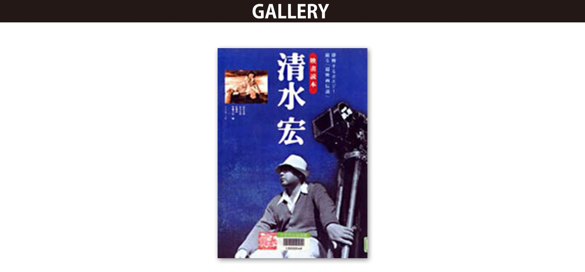

| 天才奇才たちの昭和史 日本映画遺産 増補完全版: 川島雄三、清水宏、小津安二郎、山中貞雄、岡本喜八、森崎東、山田守、小松崎茂、広瀬正 辻まこと and more | |
| 藤田 真男 | |
| SJP Publishing (2014) | |
目次
指定第１号
指定第２号
指定第３号
指定第４号
指定第５号
指定第６号
指定第７号
指定第８号
指定第８号＋第９号
指定第８号＋第１０号
指定第１１号
指定第１２号
指定第１３号
指定第１４号
指定第１５号
指定第１６号
指定第１７号
指定第１８号
指定第１９号
指定第２０号
指定第２１号
指定第２２号
指定第２３号
指定第２４号
指定第２５号
指定第２６号
指定第２７号
指定第２８号
指定第２９号
指定第１号
大映ビスタビジョンカメラ
リチャード・エドランドが開発した特撮カメラと
旧大映撮影所、自慢のカメラの関係とは......？
『スター・ウォーズ／帝国の逆襲』（1980）で特撮の監修をつとめたリチャード・エドランドが来日したとき話を聞きにいった。米軍カメラマンとして滞日したことがあり、小津安二郎監督の映画が好きだという彼は、カタコトの日本語をまじえながら、にこやかに取材に応じてくれた。が、まだ試写も見ていない映画の特撮について聞くのだから、お互いに隔靴掻痒で「ワカリマスカ？」「分かりませ～ん」の応酬となった。
「特撮用のカメラもいくつか作りました。我々はロボットも機械もすべてニックネームで呼んでいて、カメラのひとつはビスタクルーザーと言います」。
1950年代のクルマの名前をとったというそのカメラは、1950年代のビスタビジョンカメラを改造したものだそうだが、どんなカメラなのか見当もつかない。あとで特撮専門誌を見たら、エドランドがミニチュアセットを上からのぞきながら妙な機械を手にしている写真があった。その機械はティシュペーパーの箱ぐらいの大きさで、滑らかなボディが黒光りしていてＳＦ映画の小道具みたいだった。ああ、これがビスタクルーザーか！ それにしても、こんなに小さな箱が映画のカメラ？ 一体、原型となったビスタビジョンカメラとは、どんなものだったのか？ と疑問は深まるばかり。
それから20年たって、ようやく疑問は氷解した。『スタジオはてんやわんや』（1957）という旧大映撮影所のＰＲ映画のビデオを見た。そのなかに、アメリカから到着したばかりの新型カメラの紹介がある。このカメラこそ、20世紀フォックスのシネマスコープに対抗してパラマウントが採用したワイド画面映画、ビスタビジョン撮影用のカメラなのだ。しかもカメラは大小２台。
大型はブラスバンドの大太鼓ぐらいの黒いドラムに何本ものケーブルが生えていて、大きなレンズ・フードが付いている。真っ黒な金属製の巨大カタツムリが引っくり返ったような形の不思議なカメラだ。小型の「ハンド・キャメラ」は水平に回転するフィルム・マガジンが本体の左右に２個のフライパンのように付いていて、中央の小さな本体の前にレンズが突き出している。カラスのロボットみたいな、異星人の宇宙船のミニチュアみたいな、これまた不思議なカメラ。「さすがにキャメラに慣れた撮影所の人たちもびっくり仰天していますね」とナレーター氏が自慢する気持ちも分かる。
大映ビスタビジョンカメラのユニークな
スタイルは今見ても実に魅力的だ
ほとんどの映画カメラはフィルムが縦に走る。35ミリ映画の１コマの大きさは写真用の35ミリ・フルサイズの半分、つまり昔あったハーフ判カメラの１コマと同じぐらい。シネマスコープはこの小さなコマを特殊レンズを使って、無理やり左右に引き延ばして映写するから画質は落ちる。パンストを引っぱれば網目が粗くなるのと同じリクツである。
そこで、35ミリ写真機と同じようにフィルムを横方向に走らせて横長のワイド画面を撮影するようにしたのがビスタビジョンだ。上映プリントは縦走りの35ミリ・フィルムに縮小プリントするのだが、それでもネガの面積が大きいので画質はいい。そのネガを現代の高性能フィルムで撮影してプリントすれば、もっと画質はよくなるはずだ。
そこに目を付けたのがリチャード・エドランドのビスタクルーザーだったのだ。ネガ面積が大きいから合成しても画質が落ちないのだろう。原型となったのはビスタビジョンの「ハンド・キャメラ」の本体部分のようだ。その構造は写真機と似たようなものだから、長尺フィルム・マガジンとモーター・ドライブ付きの35ミリ１眼レフカメラでも作れるのではないか？ そう考えて、たちまちビスタクルーザーもどきの安上がりな特撮用カメラを作ったのが大林宣彦監督だった。ああ、日本人。
せっかく輸入したビスタビジョンカメラを大映はわずか１年ほどで没にしてしまい、他社と同じシネスコに鞍替えした。シネスコのほうが撮影フィルムの使用量は少ないし、既存のカメラや映写機のレンズだけ付け替えればいいので、簡便かつ安上がりだったのだろう。ちなみに現在使われているビスタビジョン・サイズという言葉は、日本だけで通用する和製英語であり、画面の縦横比以外はビスタビジョンとは関係ない。
大映ビスタビジョン映画が何本撮影されたかは知らないが現在、長谷川一夫主演『銭形平次捕物控・女狐屋敷』（1957）『遊侠五人男』（1958）、市川雷蔵主演『月姫系図』(1958)などがビデオ化されている。ネガの保存状態のせいか、ピカピカとはいかないが、それでも当時の東映シネスコ映画などに比べると粒子が細かくて確かに画質はいい。
日本映画への貢献度はともかくとしても、大映ビスタビジョンカメラのユニークなスタイルは今見ても実に魅力的だ。ビスタビジョンカメラがテクニカラーカメラやパナビジョンカメラと同様、レンタル式ならアメリカに返還されただろうし、買い取りなら国内に残っているか、どこか外国に売却された可能性もある。もしどこかに残っていたら、ぜひ日本映画遺産第１号に指定したいと思う（第12回参照）。
というわけで、次回からも日本映画にまつわる歴史的遺物からガラクタまでのモノたち、日本映画に映し出された失われた景観などの遺産を集めていきたいと思います。
＜追記＞
大映ビスタビジョン第１作は伊藤大輔監督、鶴田浩二・京マチ子主演『地獄花』（1957）だったそうだ。退役後、大映ビスタビジョンカメラは70ミリ・カメラに改造されて超大作『釈迦』（1961）の撮影に使われた。やがて、そのカメラは日大芸術学部の所有となり、高畑勲、宮崎駿、大塚康生らが参加していた日米合作アニメ『ＮＥＭＯ／ニモ』（制作に15年かけて1989年に公開）で使われそうになったが、折り悪く、他社に貸し出し中だったので使うことができず、その後、70ミリでの制作も中止された。その顛末はのちに『アリーテ姫』（2000）『マイマイ新子と千年の魔法』（2009）を監督した片渕須直のウェブマガジン「ＷＥＢアニメスタイル」連載コラム「β運動の岸辺で」第28回に詳しい。『名探偵ホームズ』（1984）制作中の宮崎駿監督のエピソードなども興味深い。
グーグルでVISTAVISION CAMERAを画像検索すると大量の画像が表示される。日本の映画関連書籍などでは、ほとんどお目にかかれない珍しい画像が多い。そのなかにビスタビジョンの「ハンド・キャメラ」を改造したものもあり、ステディカム、空撮、特撮などに今も使われているとのこと。『エイリアン２』（1986）の宇宙船とか、大きなミニチュアモデルを使う特撮シーンでは大型のビスタビジョンカメラも多用されていたらしい。
ついでにVISTACRUISER CAMERAも検索したら、なんとエドランドが属していた特撮スタジオＩＬＭで作られたビスタクルーザーの設計図がオークションに出品されて、320ドルで落札されていた。さらに、実物のビスタクルーザーカメラとモーションコントロール・クレーンと大きな制御卓のセット（総重量約1.5トン）が、わずか15100ドルで落札されていた。ＣＧ全盛の今ではもう、大がかりなミニチュアセット撮影も少なくなって、需要もないからこんなに安いのだろうか？
落札されたビスタクルーザーの写真を見ると、最初に書いた「ティシュペーパーの箱ぐらい」よりは大きいようだ。雑誌の写真のエドランドがミニチュアセットを見ながら手にしていた黒い機械は、ビスタクルーザーのファインダーか何かだったのかもしれない。
SIENCE FICTION ARCHIVES.COMの公式サイトのCollectionsのページにビスタクルーザーの写真と解説があり、ＩＬＭ初期の特撮を当時のスタッフ（ルーカス、ダイクストラ、エドランドら）が回顧した記録映画も見られる。ビスタクルーザーを操作している場面もある。下の写真と同じ型の大きなビスタビジョンカメラを、エドランドが屋外で使っている場面もあるが、これはビスタクルーザーとは別の改造カメラなのか？ 当時、エドランドは『帝国の逆襲』にちなんだエンパイアカメラというのも作ったと言ってました。
何十年か前に東京都内にあった映画機材の会社に展示されていたカメラ。左からコニカラーカメラ（次回で紹介）、ビスタビジョンカメラ、何だか分からないカメラ。『スタジオはてんやわんや』で紹介されている大映ビスタビジョンカメラは、この写真中央のカメラのゴテゴテした四角いメカ本体が見えず（防音カバーで包まれていたのか？）、後ろのドラムと一体化し、全体に丸みをおびたスマートなデザインで、大映とビスタビジョンのロゴ入りだった。写真のカメラはパラマウントで使われていた初期タイプだろうか？
指定第２号
コニカラーカメラ
テクニカラーカメラをもしのぐ
コニカラーカメラの画質と独創性
ＪＲ新宿駅東口前、新宿通りの新宿高野本店ビルにコニカプラザという小さなカメラ博物館がある。そこで、ひときわ異彩を放つキカイ。重機関銃のような、土俵下でアグラをかいている横綱のような、このキカイこそ、テクニカラーカメラをもしのぐ３色分解式カラー映画撮影機、コニカラーカメラなのだ。本来なら、このカメラこそ日本映画遺産第１号に指定すべき物件なのだが、準備の都合で後回しになった次第。
米国製３色式テクニカラーはまずディズニーの短編アニメで使われ、長編劇映画第１作は1935年。その後、改良を重ねながら約20年間にわたってカラー映画の王座に君臨した。テクニカラーは、黄赤青の３版とスミ（黒）版を重ねて天然色を再現する４色印刷に似ている。まずレンズから入った光を２分割し、フィルター層を通して３本のモノクロフィルムに露光させる。フィルムのうち２本は重ねてあるので光（ビーム）は２分割でいい。３本のフィルムを３原色に染色し、白黒ポジと重ねてカラープリントを作る。３版のネガが一度に撮影できるので、これをビーム・スプリッター式ワンショット・カメラという。
テクニカラーよりも低コストで少量プリントに適したカラー映画システムのために開発されたワンショット・カメラ、それがコニカラーカメラだ。「コニカラー・システムは、日本で開発したカラー写真関連技術の中で、もっとも独創的で実用性も高かった」（石川英輔『総天然色への一世紀』1997・青土社）
『カメラレビュー クラシックカメラ専科』第21号（1992・朝日ソノラマ）の矢島仁氏の記事によるとコニカラー・システムの研究開始は戦時中の1942年。1944年10月、ワンショットではなく３色の版を順次撮影する方法でアニメを試作（初期テクニカラーのディズニー・アニメも同じ方法。静止画のコマ撮りだから１色ずつ順次撮影が可能）。敗色濃厚ななかで研究を続けた技術者たちの苦労と情熱は並大抵ではなかっただろう。
翌1945年、空襲ですべてを失い、敗戦。1948年に研究を再開。連日の徹夜作業の末、ワンショット方式のコニカラーカメラ第１号が完成したのは1952年。翌年、試作短編『かわいい魚屋さん』が公開された。1955年、日活のカラー映画第１作として長編『緑はるかに』公開。主演は14歳の浅丘ルリ子で、これがデビュー作。『カメラレビュー』誌に掲載されたカメラテストのプリントに映っている彼女は実に可愛い。残念ながら白黒ページだが、画質の良さは分かる。「コニカラーの画質は、今見ても驚くほどすぐれているが、原価も驚異的に安かった」（『総天然色への一世紀』）
日活コニカラーカメラ、オクラ入りの陰に
裕次郎の"鶴の一声"があった...
コニカラーカメラは光を３分割して完全な３色分解をするので、画像は２分割式（１本のネガと２本の重ねたネガに、それぞれ露光）のテクニカラーよりも鮮明。現像方式も異なる。複製プリントも容易に作れるので洋画の焼き増しにも利用され、ジェームズ・ディーンの遺作『ジャイアンツ』（1956）などが、この方法で焼き増しされて上映された。
コニカラーカメラは100型から400型まで計９台が作られた。テクニカラーカメラでさえ22台だったというから９台は立派だ。400型の重量はテクニカラーカメラの３倍弱の88kg。ブリンプ（防音カバー）をかぶせると144kgもあった。まさに横綱だ。
コニカラー映画は約60本が作られた。400型で撮影された作品が多く、日活『ドラムと恋と夢』（1956）『ジャズ娘誕生』（1957）『危険な年齢』（1957）『肉体の悪夢』（1957）、松竹『赤い陣羽織』（1958）、新東宝『スーパー・ジャイアンツ 第８部』（1959）などがある。コニカプラザの展示品も400型で、日活『乳房と銃弾』（1958）『知と愛の出発』（1958）などを撮影。当時のポスターを見ると「日活コニカラー総天然色」の文字がある。
その画質を高く評価されたコニカラーカメラだが、より簡便なカラーネガフィルムの普及によって1959年に姿を消した。日活では石原裕次郎の出演作を撮影中、スタッフのミスで小さなトラブルがあった。裕次郎がスタッフにいい顔を見せようとしてか、失敗の責任をコニカラーカメラに押しつけて「こんなカメラはやめちまえ」の鶴の一声でオクラ入りしてしまったという。『殺しの烙印』（1967）など日活で鈴木清順監督とコンビを組み、のちに鈴木監督『ツィゴイネルワイゼン』（1980）なども撮影した永塚一栄カメラマンは「いいカメラだったのになぁ」と、しつこく裕次郎を恨んでいた。長谷部安春監督も「永塚さんが、あのカメラを好きでねぇ。重いから大勢で担いで運んで、撮影は大騒ぎだった。おみこしカメラって呼んでたんだもの」と、笑いながら懐かしがっていた。
コニカラープリントは可燃性のセルロイドベースだったため、ほとんど廃棄された。矢島仁氏の記事によると現存するプリントは『かわいい魚屋さん』を含む12ロール、ネガは『緑はるかに』１本分、40ロールのみ。
コニカラーカメラは９台のうち８台が現存。主に映画関連の企業が所蔵しているが、初めに紹介したコニカプラザ（現在はコニカミノルタプラザと改称し、カメラの展示はない）のほか、ペンタックスカメラ博物館（日本最初のカメラ博物館。2009年7月に閉館。所蔵品は東京の日本カメラ博物館に移管）と京都の東映太秦映画村文化館（無休。有料）でも所蔵しているはず。（詳しくは第12回と26回を参照のこと）
＜追記＞
のちに、東京国立近代美術館フィルムセンターの常設展示で『緑はるかに』を復元したフィルムの一部を見ることができた。これは1993年にオリジナルネガから復元したもの。油絵のようなテクニカラーと比べるとコニカラーの原版は水彩画のような独特の美しさを持っていたのではないかと思わせる色彩だが、1993年当時の日本の修復技術はイマイチのようにも見えた。その後、衛星放送で『緑はるかに』の全編も見たが、これも同じ復元プリントのようだった。同じく衛星放送で、ネガが現存していたらしい日活コニカラー映画『ジャズ娘誕生』（1957）も見たが、ネガの一部を復元しようとしたら色ズレが発生して失敗したとのことで、残念ながら白黒プリントでの放映だった。
『オズの魔法使』（1939）修復版ＤＶＤ、ＢＤ（ともにレンタルあり）の特典映像に、テクニカラーの３本のネガをデジタル修復した工程（３本それぞれチグハグに劣化、収縮して色ズレしたネガの映像を完全に合致させるコンピュータソフト）が紹介されているが、大変な時間と費用を要したらしい。イギリスのテクニカラー映画『赤い靴』（1948）デジタル修復版ＤＶＤにも修復工程を収録。これらを見ると３色分解についても理解しやすい。
いずれにしても日本ではコニカラーの完全なネガ修復は無理みたいですね。2014年４月～５月にはフィルムセンターでコニカラー長編第１作『緑はるかに』とコニカラー中短編作品８本（うち1本はデジタル復元版）が一挙上映された。これだけ保存されているだけでも、よしとするべきか。
外国の映画マニア向けウェブサイトには労作が多い。THE AMERICAN WIDESCREEN MUSEUMというサイトには映画史に残るさまざまな発明、機材が網羅されていて必見。テクニカラーの原理や機材なども豊富な写真と図解入りで解説。見ているだけでも楽しい。
コニカラーカメラ400型
レンズが本体前方左側に（この写真では右手奥、部屋の隅に向かって）45度傾いて突き出したデザイン。内部で光を３分割するための、独特の設計だった。旧コニカプラザの展示品は重機関銃用のような重厚な金属製三脚に乗っていた。
指定第３号
佐々木秀孝コレクション
トーキー映画『ジャズ・シンガー』誕生
"お楽しみはこれからだ！"
1927年10月６日、ワーナー映画『ジャズ・シンガー』のアル・ジョルスンが「お楽しみはこれからだ！」としゃべったときからトーキー映画の歴史は始まり、『雨に唄えば』（1952）で描かれたようなドタバタ騒ぎがあったものの、おおむね順調に発展してきたのだろう、日本のトーキー映画も同じような道をたどったのだろう、と僕は漠然と思っていた。そもそも『ジャズ・シンガー』がどうやって録音されたのか、考えたこともなかった。
岡俊雄著『フィルム・ミュージック』（1988・教育社）によると、1924年に電信電話会社ＡＴＴ（現ＡＴ＆Ｔ）の子会社のウェスタン・エレクトリック（以下ＷＥと略す）がディスク式電気録音・再生システムを完成。倒産寸前のワーナーはＷＥのディスク式トーキーに社運を賭け、音楽と効果音入りのサウンド版映画を製作。続いて『ジャズ・シンガー』が世界初のセリフ入りパート・トーキー劇映画として成功を収め、翌年、同じくアル・ジョルスン主演のパート・トーキー『シンギング・フール』（1928）も記録的な大ヒット。その記録は『風と共に去りぬ』（1939）まで破られなかった。
ワーナーが採用したディスク式トーキーのディスクとは、なんのことはない、撮影機や映写機と同期回転させるレコードなのだ。この方式には大きな欠陥があった。録音時間が短い。フィルムやテープのように容易に編集できない。再生用のレコードがすぐにすり切れる。レコードの針を落とす位置にはスタートマークがあるが、フィルムが切れたりすると同期が狂って画面と音声がずれてしまう。
1926年、フォックス社はシオドア・ケースのフィルム式（光学式）録音システムの特許を買い取り、さらにＷＥに技術協力を求め、1927年４月30日、ムービートーンと名付けたフィルム式トーキーのニュース映画を公開。こちらのほうが映画技術史の上では『ジャズ・シンガー』よりも画期的な出来事だった。
メジャー各社もフォックス＝ＷＥのムービートーンを採用。後発のＲＣＡはメジャー以外の映画会社に自社のフィルム式トーキーを売り込んだ。ワーナーも1931年ごろにはディスク式からフィルム式に転換。こうしてＷＥとＲＣＡがアメリカのトーキー映画市場を独占した。
フィルム式トーキーのサウンドトラックには、ＷＥの可変濃淡型（上映用フィルムの端にバーコードのような縞模様を記録）とＲＣＡの可変面積型（心電図のようなギザギザ模様を記録）がある。そのシマシマやギザギザに映写機の光が当たり、光の強弱を光電管が電流に変換してアンプで増幅する過程（録音はその逆の方法で、録音専用フィルムに音声だけを記録する）は同じなので、２つの方式には互換性があった。映写機を選ばないことがトーキー普及を早めた。1929年、ＷＥは日本進出を計画。トーキーで他社に遅れをとった日活が提携を申し出て、1933年に第１作を製作。こうしてＷＥの録音・再生システムが日本映画界にもたらされた。
一方、ＷＥよりも低コストの国産トーキーの研究を各社が続けた末、松竹が土橋（つちはし）武夫・晴夫兄弟の土橋式トーキーを完成させた。その日本初の本格的オール・トーキー映画、五所平之助監督、渡辺篤・田中絹代主演『マダムと女房』（1931）の録音機を自作した松竹の録音技師・土橋武夫のインタビューが、『聞き書 キネマの青春』（1988・リブロポート）に収録されている。彼はトーキー研究中に、ぜひさわってみたいと思っていたＷＥの優秀なフィルム式トーキー録音機（当初、ＷＥは機密保持のために厳重な監視を付けて日本の映画会社に貸与していた）を、いつどこで入手したのか、自宅の研究室に今も保存していると語っているのには驚いた。こんな物持ちのいい人はいないだろうと思っていたら、上には上がいた。
偶然から発見されたマニア垂涎の
ウェスタン・エレクトリックのお宝
2001年４月10日放送のテレビ東京『開運！なんでも鑑定団』春のスペシャルに、松竹の録音技師だった佐々木秀孝の遺品の数々が登場。佐々木は趣味と仕事を両立させたオーディオ・マニアで、京都の未亡人宅の床が抜けそうなほどの膨大なコレクションは素人目には粗大ゴミの山としか映らないが、処分する前に一度、鑑定してもらいたいとのことでスタジオに運び込まれたのだ。これが実は、若いオーディオ・マニアの面々がヨダレを垂らさんばかりの逸品、珍品ぞろいで、粗大ゴミどころか宝の山と判明。ＷＥの巨大な劇場用スピーカーとアンプ一式で時価1500万円。その他、スペアの真空管や各社のマイクなど総額7200万円という鑑定結果に未亡人も驚愕していた。
遺品のうちＲＣＡのマイクは小津安二郎監督『晩春』（1949）で使われたもの。清水寺でのロケで松竹の備品のマイクを使ったところ、性能が悪くて周囲の雑音まで拾ってしまう。そこで佐々木技師が私物のＲＣＡのマイクを提供して無事、ロケは終了。あとで小津監督から金一封を贈られたという。彼が小津作品を手がけたのは、この１本だけだが、他に国産初の長編カラー劇映画『カルメン故郷に帰る』（1951）などの録音も手がけている。
番組では簡単な説明しかなかったが、どの機材もそれぞれ由緒あるものかもしれず、これは早速、日本映画遺産に指定しなくてはいけません。ついでといってはなんだが、前記の土橋武夫が保存していたＷＥの録音機も併せて指定。もしかしたら山中貞雄監督の日活時代の傑作『丹下左膳余話・百万両の壺』（1935）で、この録音機が使われた可能性だってあるのだから。
＜追記＞
その後、佐々木秀孝や同好のオーディオマニアたちが共同執筆した『ウェスタン・エレクトリック・サウンド』（2005・株式会社ステレオサウンド）という大著（ＬＰレコードのジャケット・サイズ2冊セットで全1600ページ、税抜き70000円！）が刊行されたが、すぐに絶版になったようだ。アマゾンで検索すると表紙と内容紹介だけは出ている。ＷＥと佐々木コレクションについて詳しく知りたい人は図書館や古書店を探しましょう。
何年か前、埼玉県所沢市にある荒幡富士（人工の富士塚）へ登りに行ったら、西武園ゴルフ場の裏の里山でウェスタン・エレクトリックの大きなロゴを掲げたモダンな店が目に飛び込んできて驚いた。店内を見たことはないが、ネットで調べると「ヴィンテージオーディオ専門店 ウエスタンラボ」とある。貴重なＷＥ製品も多数販売中。数百万円もするパーツもある。すると佐々木コレクションは今や総額数億円！？
一方、2009年に埼玉県狭山市から福島県裏磐梯の山中へ移転した「ヴィンテージオーディオショップ エイフル」のサイトを見たら、こちらには多くの個人と企業の協力でオープンした「世界初の本格的ヴィンテージオーディオ博物館」もあって、ＷＥ製品の試聴もできるそうだ。おまけに、書籍販売のページには前述の豪華本の在庫もある。
先に紹介したTHE AMERICAN WIDESCREEN MUSEUMというサイトにはＷＥ社のディスク式トーキーの映写機も出ている。
東京の名画座・早稲田松竹の映写機
写真は1980年ごろの撮影だが、当時でもこの映写機は骨董品に近い珍品。映写ランプには電球ではなくアーク灯を使用し、強烈な光と熱を放つ。「電球よりも画面のヌケがよくて鮮明なんですよ。部品のあるうちは使い続けるつもりです」と、当時の支配人は語っていた。これに似たスタイルの映写機の後部に電気蓄音機を取り付けたのが初期のディスク式トーキーの映写機だと思ってもらえばいい。早稲田松竹のウェブサイトを見たら、昔懐かしい劇場外観は残しながら、館内と設備を一新。写真の古い映写機もさすがに引退したようだが、2002年に一度は休館した早稲田松竹の奇跡的健在（2014年10月現在）を祝福したい。
指定第４号
和田精と弟子たちの作った音
"ラジオの神様"と呼ばれた
音響効果の創始者・和田精
「和田誠さんのお父さんも効果マンだったんですよ」と、僕に教えてくれたのはＮＨＫ効果部ディレクターの織田晃之祐さんだった。1980年、日本には2000人もの音響効果マンがいたが、そのなかで織田さんが初めて自作の音を作品としてレコード化したのは効果史に残る快挙だった。そのとき音響効果について話を聞いた。
「『ハワイ・マレー沖海戦』（1942・特撮：円谷英二）という映画があるでしょ。あれで飛行機の急降下音を作ったのが、我々の大先輩の岩淵東洋男さん。どうやってあんな音を作ったのか、いまだに語り草になってますよ。戦後作られた記録映画の急降下音は、みんなあの映画の音を流用してるんです。仲間同士でも絶対にネタは明かしませんね。僕は岩淵さんから急降下音の作り方を教えてもらったけど、たぶんそれもウソでしょう(笑)」
何もかも初耳で、和田誠のお父さんの話も「へぇーっ」と思ったのだが、詳しいことは聞き漏らした。最近、図書館で岩淵東洋男著『わたしの音響史 効果マンの記録』という珍しい本を見つけた。出版は僕が織田さんに会った翌年で、以下はその引用。
「わが国における『効果』の創始者は和田精であり、今日のラジオ、テレビドラマの基礎を作り、質的向上を計った第一の功労者であった。（中略）和田が築地小劇場に参加したのは、小山内薫や土方與志らのかかげたモットー『演劇のために、未来のために、民衆のために』に共鳴したからであったが、当時のもっとも新しい媒体、ラジオ放送に積極的に参加しようとしたのも、その精神によるものであった。その和田の名を最初に高らしめたのは、大正十四年八月十三日に放送された、リチャード・ヒューズ作『炭坑の中』であった。小山内薫の演出によるこのラジオドラマは、放送史上の記念碑的作品であるだけでなく、効果史にとっても出発点となるものであった。和田精は、大阪中央放送局演出部を経て、戦後、毎日放送取締役、制作担当総務を歴任している。重役でありながらドラマ作りを続け、三年連続して芸術祭放送部門の文部大臣賞を受賞している」
和田精（せい）は「ラジオの神様」と言われた効果マンであり、演出家であったが、彼を創始とする音響効果の資料はきわめて少なく、和田の孫弟子にあたる岩淵は自分の足で調べて６年がかりでこの本を書き上げたという。東京愛宕山放送局（現ＮＨＫ放送博物館）の初期のラジオドラマ（もちろん生放送）では、愛宕山下の神社で効果音用のダイナマイトを爆発させて周辺住民を驚かせたとか、ムチャクチャな逸話も紹介されている。
日本映画の『黎明』にも加わった和田精と
和田誠と二股大根の意外な関係
1921年、東京明治座の市川左団次一座（第2７回参照）公演『俊寛』(演出・小山内薫)で「噴煙の音」を出すための音響装置を考案、制作したのが山田耕筰、伊藤憙朔、土方與志、和田精という二十代の青年たち。この公演こそ日本の「効果」の芽生えであったと岩淵は言う。1924年、土方、小山内の築地小劇場が開場。初公演で和田は音響操作を担当し、その後、効果と照明を担当。そして1925年（大正14年)、前述した日本初の本格的ラジオドラマ『炭坑の中』の効果を担当。
1929年、明治座公演で和田精は汽車の通過音を作って観客を驚かせた。これがきっかけで翌年、大阪放送局（現ＮＨＫ近畿本部）に演出家として招かれて職員となった（それまではいわばアルバイトで、数の少なかった効果マンは舞台、ラジオなどを兼業した)。その数年後に和田誠が生まれた。当時の大阪放送局は東京をはるかにしのぎ、優秀な人材が集まっていた。が、「エフェクトマン」と呼ばれていた効果マンが、いつのまにか「擬音係」へと地位が低下。擬音は効果の手段のひとつにすぎないのに「擬音係」という誤った呼称がトーキー映画にも広まり、録音技師の支配下に属するようになった。
『ハワイ・マレー沖海戦』の急降下音は、岩淵らが苦心して作りだしたものだが（その方法は岩淵の本に公開されている)、現在、この映画の資料には彼らの名前すら残っていない。それでも東宝は早くから「音響効果」という呼称を使っていたから「擬音係」よりはましだった。ちなみに岩淵が効果を手がけた東宝映画は『蛇姫様』(1940)、『姿三四郎』（1943）などがある。戦後日本映画の効果音で最も有名なのはゴジラの鳴き声だろうが、それに似た動物の鳴き声を作る装置は昭和初期の演劇やラジオですでに使われていたという。この装置を誰が考えたのか、これも効果史の空白に埋もれてしまっている。
ＮＨＫに独立した効果部が誕生したのは岩淵が在職中の1968年。ＮＨＫ効果部は世界最高レベルにまで成長し、かつての擬音係は効果部ディレクターとなり地位を回復した。和田精から岩淵東洋男、織田晃之祐らへと受け継がれてきた独創性を重んじる伝統（あえてネタを秘密にするのも和田以来の伝統）のなかで生みだされた数々の成果は、日本映画の音にも少なからぬ影響を与えたに違いない。
前回紹介したウェスタン・エレクトリックやムービートーンの先駆となったアメリカ製のフィルム式トーキー、フォノフィルムをいち早く採用し、ミナトーキーと名付けた日本初のトーキー映画が『黎明』（1927）だった。そのスタッフ表には監督・小山内薫、作曲・山田耕筰、装置・吉田謙吉らと並んで「音的効果・和田精」とある。ラジオドラマ『炭坑の中』の２年後、彼は日本映画初の音響効果マンにもなったのだ。日本の演劇、映画、音楽、考現学の歴史に名を残すスタッフが集まり、築地小劇場の俳優たちが出演し、のちに小津映画の常連となる杉村春子、高橋豊子（とよ）らも端役で出ていたこの映画は現存せず、不明な点が多いという。発声不調でオクラ入りしたとの説もある。
浅草７丁目、旧山谷堀の近くに待乳山（まつちやま）聖天こと本竜院という寺があり、二股大根の彫刻で有名だ。石段の脇に小さな石碑がある。これは『黎明』の製作者・皆川芳造が自分で自分をほめるために戦後になって建てたミナトーキーの記念碑だが、昔、この石碑を見たときには、まさか二股大根（夫婦和合のシンボル）と同居している石碑が和田誠のお父さんと関係があろうとは夢にも思わなかった。奇しくも『黎明』と同じ年、『ジャズ・シンガー』のアル・ジョルスンが「お楽しみはこれからだ！」というセリフを発し、そのセリフを借用した名エッセー集を和田誠が書いたのは、ずっとあとの話。
岩淵東洋男著『わたしの音響史 効果マンの記録』（1981・社会思想社）
表紙イラストは和田誠。曲がった煙突のようなものが和田精らが考案した「噴煙の音」を出す装置。ホルンに似たものは東宝の前身のＰＣＬが輸入したウインド・マシンで、風の音を作る。その左の小さな円筒は鳥寄せに使うバード・コールで、木の筒と金属の棒をこすり合わせて小鳥の鳴き声を出す道具。これと同じものが戦前にもあり、岩淵も何個か自作した。戦後もＮＨＫに１個残っていたが、すでにすり減って音が出なくなっていたので織田晃之祐らにとっては幻の道具だったという。1970年代末のアウトドア・ブームのころにアメリカでバード・コールが大ヒットし、日本にも輸入されて織田も手に入れた。
●参考資料●
『ミュージック・エフェクト 織田晃之祐の世界』(1980・ポリドール)
織田の初のＬＰで、音楽と効果を融合させた『ＮＨＫ特集』のサントラ盤（ＣＤは2000年にＰヴァイン・レコードより発売。『織田晃之祐の世界』というサブタイトルは改題）。自然音、効果音、織田の音楽と口笛を収録。口笛の録音は恥ずかしくて絶対に人に見せないそうだが、彼の温厚な人柄からは想像もできないハードボイルドな音色。織田はこのＬＰのあとも何枚かのＬＰとＣＤを出した。『ＮＨＫアーカイブス』で再放送された佐々木昭一郎演出の単発ドラマ『マザー』(1969)、『さすらい』(1971)などの効果も彼が手がけた。
指定第５号
92式重機関銃
ホンモノの重機関銃を使った撮影
弾丸は助監督・岡本喜八の手作りだった
「今ではとても信じられない話だが、本物の拳銃を警視庁から借りてきて、堂々と小道具に使ったりしたころがある。映画は『銀嶺の果て』、小道具はサード助監督が責任を持つことになっていたので、その本物の拳銃、しかも３丁の運搬管理も私の役目になった」（岡本喜八著『ヘソの曲り角』1977・東京スポーツ新聞社）
東宝映画『銀嶺の果て』（1947）は三船敏郎扮する武装強盗と仲間が雪山に逃げ込むという山岳アクションだ。敗戦直後の民主警察も弾丸までは貸してくれないので、スタッフが調達してきた。当時は拳銃も弾丸も闇市で簡単に買えた。その実砲の弾頭を岡本助監督が引っこ抜いて空砲を作った。彼も一応、兵隊あがりだ。が、好奇心から拳銃を分解したら部品が旅館のイロリの中に飛び散って、組み立てるのがタイヘンだったそうだ。
「もう本物はゴメンだと思っていたら、数年後の『暁の脱走』では、なんと重機関銃である。これもやっぱり、気前の良かったその筋が貸してくれたものだが、そのころではさすがにタマはない。タマがなければ連発できないので、今度はタマ作りに専念である」（『ヘソの曲り角』）
『暁の脱走』（1950）は、のちに鈴木清順監督が『春婦伝』（1965）として再映画化した戦争映画だ。兵隊が慰問団の歌手（『春婦伝』では従軍慰安婦）と脱走し、鬼上官が重機関銃で射殺するのがラスト。主役の池部良と山口淑子が銃弾の雨の中を走る。池部は足を撃たれた衝撃で体が飛び上がって倒れる。「弾丸に当たれば、ああ、なるという演技の本邦初演、だそうで、大変光栄に思っている」と、池部はエッセーに書いている。彼も戦場で死ぬような目にあってきたので、そういうリアルな演技を思いついたのだろう。
さて、いくら軍隊経験があるとはいえ素人の岡本助監督が重機関銃の弾なんか作れるものだろうか？ と思った。のちに岡本監督に東宝撮影所で会った。撮影所の一部は日曜大工センターと化していて、その一郭の喫茶店で話を聞いていたら、そこへ偶然、買い物カゴをさげた老人が現れた。なんと『銀嶺の果て』『暁の脱走』の谷口千吉監督だった。長身で女優にもてた師匠の谷口監督が『銀嶺の果て』のヒロイン・若山セツ子と結婚したときには、彼女に憧れていた岡本助監督は、ずいぶん悔しがったらしい。買い物カゴをさげた師匠にはそんな面影はすでになく、フツウのおじいさんのようだった。そのころの彼は女優・八千草薫の夫となっていた。
喫茶店を出て、今では荒れ果てたオープンセット用の空き地に案内してもらった。「ここで重機関銃の試射をしたんですよ」と岡本監督は言う。えーっ？ アブナイでしょ。よく聞いたら手作りの弾丸は木製だったという。なーんだ、じゃ安心だ。「軽いもんだから、まっすぐ飛ばない。あらぬ方向へ飛んでいって実弾よりコワイ」。やっぱりアブナイじゃないか。伊豆大島で撮影した本番では人のいないところへ向けて撃ったという。
92式重機関銃を主役にした
戦争映画の傑作と松本零士の漫画
『暁の脱走』の重機関銃は92式重機である。大正３年（1914年）に制式化、つまり軍用に制定された３年式重機は、38式歩兵銃の小口径弾を使用していて、あまりにも威力不足だった。いわゆる38（サンパチ）銃は明治38年（1905年）式の小銃だが、その基本性能はさらに８年前の30年式歩兵銃と同じだった。日本軍は19世紀の旧式銃で米英相手の近代戦を戦ったのだからムチャな話。さすがに時代遅れを悟って３年式重機を口径アップしたのが紀元2592年（西暦1932年）に制式化した92式重機だった。が、拡大する戦線には新旧の小銃や機関銃が混在し、口径の不統一による弾丸不足のために前線はさらに混乱し、無用の長物と化した92式重機は穴に埋めて捨てられたりしたという。
ちなみに紀元（皇紀）とは天皇の権威を高めるためにでっちあげたもので、神話の神武天皇即位から数えて明治６年を紀元2533年としたのが始まり。紀元2600年（昭和15年＝西暦1940年）の式典が盛大に行われた年に制式化されたのが海軍零式戦闘機、すなわちゼロ戦である。
『暁の脱走』の92式重機をビデオで見ると、給弾板の上に30発の弾丸が箱入りクレヨンのように並んでいる。きれいに削った鉛筆のような弾頭は、とても手作りの模擬弾とは思えない。さすが岡本助監督は代々続いた宮大工の息子だ。精度が高いだけに量産に向かないという根本的な設計の欠陥を持っていた92式重機も、見かけだけは立派だった。この重機を捕獲した米軍がびっくりしたほどの非常識な重さだから、それも当然。
大映の『五人の突撃隊』(1961）に出てくる92式重機もホンモノらしい。残念ながら射撃シーンはないが、残照に浮かび上がる重機のシルエットは美しい。ただ飾っておくだけでも見栄えがいいので借りてきたのだろうが、弾丸を作れる器用なスタッフはいなかったらしい。そのかわり、米軍払い下げらしいホンモノの敵軍兵器を大量に使用。Ｍ24軽戦車数両、水冷式重機関銃、軽機関銃などが続々と登場して日本映画ばなれしたハデな戦闘シーンを繰り広げる。
92式重機を主役にした漫画に松本零士の『独立重機関銃隊』(「戦場まんが」シリーズ『スタンレーの魔女』所収。1974・小学館）がある。題名も内容も谷口千吉監督『独立重機関銃隊未だ射撃中』(1963）に負うところが大きいようだ。『銀嶺の果て』『暁の脱走』は、公開当初の評価と黒沢明脚本という偽ブランドだけで谷口監督の代表作であるかのように伝えられているが、まことに遺憾である。『独立重機関銃隊未だ射撃中』こそ、三国連太郎主演『赤線基地』（1953）や三島由紀夫原作『潮騒』（1954）などと並ぶ谷口千吉監督の真の傑作、代表作のひとつといっていいだろう。そして、この映画では92式重機が主役として出ずっぱりの活躍を見せてくれる。この映画のビデオ化の願いもこめて、92式重機を日本映画遺産に指定する次第。
＜追記＞
「キネマ写真館」という主に東宝映画の資料を集めたデータベースがあり、そこで『独立重機関銃隊未だ射撃中』の解説、スチル写真、ポスターも見られる。解説には劇中の92式重機関銃は、この映画のために作られた非常にリアルな小道具だと書かれている。写真では『暁の脱走』のときと同じホンモノに見えるのだが......。もし小道具の模造銃だとしたら、これはこれで永久保存の価値がある逸品だろう。ついでだが、北海道むかわ町の草原に92式重機関銃用トーチカのホンモノが残っているそうで、ネットに写真も出ている。これが『独立重機関銃隊未だ射撃中』そのまんま。トーチカも非常にリアルだったのだ。
92式重機関銃。拳銃のような２つの銃把（グリップ）が特徴。何百発も連射できるベルト式給弾システムではなく、１枚の給弾板に30発の弾丸を並べ、手で押し込みながら連射する。『ワイルドバンチ』（1969）でウィリアム・ホールデンが乱射していた水冷式重機関銃よりも軽いはずの空冷式でありながら、重量は三脚込みで55㎏を越す。弾丸を含めればもっと重い。戦前戦中の戦争映画では兵隊３人ぐらいで重そうに担いで運んでいたりする。
指定第６号
幻の日活コルト
実銃で火蓋を切った日活アクション
やがて模造拳銃、日活コルトが登場！
谷口千吉監督『独立重機関銃隊未だ射撃中』（1963）は岡本喜八の『独立愚連隊』シリーズとは違ってシリアスな戦争映画だ。敗戦直前のソ満国境。日本軍守備隊のトーチカに置き去りにされた数名の将兵のみによる緊迫した密室劇である。ジャック・ベッケル監督の脱獄映画の傑作『穴』（1960）にも似たムード、といえば分かってもらえるだろうか。
そのトーチカを守るのが前回で紹介した92式重機関銃だ。命と引き換えに天皇から賜った恩賜のタバコを班長（軍曹）の三橋達也が投げ捨て、無言で踏みにじる。タバコに印刷された菊の紋章を灰にするだけでも不敬とされた。踏みにじったりしたら、その場で銃殺だろう。恩賜のタバコをアップで見たのも、踏みにじるのを見たのも、この映画が最初で最後だった。主演の三橋自身、敗戦後、シベリアに抑留されていただけに、彼の演技には真に迫るものがあった。
三橋主演のハードボイルド映画『野獣の復活』（1969）でも実銃や実弾が使われ、考証も本格的だった。ご本人に会えば鉄砲の話が聞けるだろうと思って訪ねたら、三橋達也はイタリアの名工に作ってもらったという手工芸品のように美しいショットガンを見せてくれた。1980年ごろのことだが、当時、彼は全国で40人もいない日本クレー射撃協会師範の資格を持つ射撃の名手だった。『第三波止場の決闘』（1960）でギャングの足にからまったロープを銃弾で切断して助けるシーンがあり、三橋が実弾を撃ったら一発で命中したというから、その腕前が分かる。銀座生まれの江戸っ子、ダンディで話術も巧みな彼は戦後、日活で川島雄三監督の分身ともいえる役柄をしばしば演じた。東宝に移籍しなければ、日活アクションでもおおいに活躍していただろう。
日活アクションの歴史も実銃によって火蓋が切られた。そのころはもう、その筋も気前がよくなくて、鈴木清順助監督は警視庁へ何度も足を運び、さんざん厭味を言われ、ようやく不細工な拳銃を貸してもらったという。空砲を何発撃つか事前に届け出る義務もあった。そうして、ミッキー・スピレーン原作、探偵マイク・ハマー・シリーズを映画化した記念すべき日活アクション第１号『俺の拳銃は素早い』（1954）の最初の銃声は「十二月の寒い夜、浜松町の駅裏でドシャ降りの雨を降らせるなかで、警視庁広報課、銃砲課係官立ち会いの下、華々しくと云い度いところだが、私はやれやれやっと鳴ったという思いの方が強かった」（鈴木清順著『花地獄』1972・北冬書房）
数に制限のある警視庁の拳銃では銃撃戦も物足りず、やがて撮影現場への出張も制限されたので模造拳銃が登場。清順さんの記憶では日活よりも東映のほうが先に模造拳銃を使い始め、性能もよかったという。初めは単発だった模造拳銃も４連発になり、薬莢も飛び出すようになり、日活アクションの名脇役となった。これが世に言う日活コルトだ。
０．６５秒！？ 満員のバーで披露された
"エースのジョー"の早撃ち実演
模造拳銃がまだ発展途上にあったころ。和製西部劇『早射ち野郎』（1961）で黒ずくめのガンマンを演じた宍戸錠は、アメリカから持ち帰った６連発の拳銃を堂々と使っていたそうだ。無法の西部と化した日活撮影所に、法の手が及ぶはずもなかった。当時、ライフルなど長物の実銃は自由に使えたそうで日活には常時、正規に登録された十数挺のライフルやショットガンが小道具銃器室に並んでいたという。エースのジョーこと宍戸錠は「0.65秒、早射ち世界第３位」と誇大宣伝され、それを信じる子供たちは少年雑誌の通販で買った空気銃で雀を撃ったりしていた。東宝撮影所でも岡本喜八監督が三船敏郎からもらったホンモノのウィンチェスター銃で西部劇ごっこをしていたそうだ。
そんなノンキな時代も長くは続かなかった。1965年、平尾昌晃、桑田次郎、大藪春彦、石原裕次郎、葉山良二、本郷功次郎、大鵬、柏戸らの有名人が拳銃密輸や不法所持でマスコミを騒がせた。翌年、小林旭も拳銃（これも私物らしい）を撮影に使ったとして取り調べを受け、その際、過去に警視庁が映画会社に実銃を貸していた事実が「発覚」して警視庁首脳部は「常識では考えられない」と白々しく驚いてみせた。
その後、いわゆる過激派によるテロやハイジャック事件に乗じた銃刀法改正で1971年10月、金属製モデルガンの所持まで規制された。このとき模造拳銃規制に対する怒りを表明したのが前記の清順さんのエッセーだ。以後も、ヤクザ以外の民間人から鉄砲を取り上げようとするイヤガラセ的な法改正が続き、三橋達也らは「刀狩りにも等しい相次ぐ法改正に義憤を感じて」芸能文化人ガンクラブ（森繁久弥会長、三船敏郎副会長、三橋達也理事長）を結成し、当局に対抗しようとしたが、執拗な弾圧に嫌気がさした高倉健、萬屋錦之介らはやがて射撃をやめ、脱会してしまった。
もう1960年代以前の小道具の拳銃なんて残っていないだろうな。日活コルトがどんな拳銃だったのか、今となっては知りようもないのか。と思っていたら、『世界映画・拳銃大図鑑 小林弘隆ベストワーク集』に幻の日活コルトが分解図入りで紹介されているのを見つけた。邦洋のアクション映画や西部劇の銃器をイラストで紹介した本だが、日本映画の現場で小道具の銃器の制作に携わった人々の貴重な証言も非常に面白い。日本映画のガンプレイを支えてきたのは小林のようなガンマニアや零細な町工場であった。
で、問題の日活コルト（実際には３種類あった）は、お世辞にも名銃とは言えなかったらしい。グリップに内蔵した乾電池で銃口に仕込んだ４連発の花火を発火させるだけのオモチャだったのだ。宍戸錠の『シシド 小説・日活撮影所』（2001・新潮社）によると日活コルトは発火しないことも多く、撮影には苦労した。リハーサルでは火薬の節約のために「バン、バン」と口で言っていたという。
そんなオモチャでも、日活コルトは日本のアクション映画の歴史を物語る貴重な遺産なのだ。もし、この模造拳銃が現存していてどこかに展示しようとするなら、これはただのオモチャです、決して革命や暗殺に加担する心配はございません、と証明するために、銃口をふさいで、銃は黄色か白色で塗りたくらねばならないのである。
『早射ち野郎』から20年ほどたったころ、機械で計測してみたら、なんと日活の宣伝コピーと同じ0.65秒ジャストで撃てた、と実演をまじえながら宍戸錠が嬉しそうに話してくれた。ふらりと立ち上がったエースのジョーは20年前を思い出して指鉄砲を撃ち、ニヤリと笑った。満員のバーの客の誰ひとり、この中年の酔どれガンマンに見向きもしなかったのは残念であったが。
＜追記＞
黒ずくめのガンマンが早撃ちのあとニヤリと笑う。これはもちろんロバート・アルドリッチ監督『ヴェラクルス』（1954）のバート・ランカスターからのイタダキである。『早射ち野郎』のプレスシートには、わざわざ宣伝用に撮影されたエースのジョーの早撃ちの分解写真が載っていて、最後のコマで得意げに胸を張り、ちょっと上を向いてニヤリと笑う黒ずくめのガンマン、エースのジョーの表情が実にイイ。残念ながら、この写真はお見せできないので、かわりに宍戸錠の公式サイトで往年の勇姿をごらんください。
「0.65秒、早射ち世界第3位」というコピーは日活宣伝部がテキトーにでっちあげたもので、１位と２位はたしかゲーリー・クーパー、アラン・ラッドだった。映画スターだけの世界ランキングなのね。もちろん計測はしてない。ほんとに0.65秒だとしても、こんなタイムでは、とても世界第3位にはなれない。が、中年の錠さんが0.65秒ジャストで撃てたのなら、エースのジョー時代はもっと早かったはず。もっと誇大宣伝してもよかったか。
「帰ってきた渡り鳥」というウェブサイトの「これが日活コルトだ！」というページには、昔の雑誌に掲載された日活コルトの写真が載っている。そのページには宍戸錠が『早射ち野郎』で使ったかもしれない６連発拳銃のカラー写真も出ている。実銃ではなく白く塗られて変わり果てた模造拳銃だ。すると、エースのジョーは実銃を使わなかったのか？ あるいは一部のシーンにだけ使ったのか？
以前、あるサイト（今、探しても見つからない。名前も覚えていない）には、なんと４挺のホンモノの日活コルト（こちらは金色に塗られていた）のカラー写真があった。写真のキャプションによると、日活の金属製模造拳銃の多くは1971年の規制後、撮影所に穴を掘って埋めた、台湾に売り飛ばした、などの愉快なウワサがあるそうだ。台湾映画『幽幻道士 キョンシーズ』（1986）には東宝映画『独立愚連隊』（1959）のモーゼルらしき模造拳銃が出てくるので、日活コルトのこともあながち根拠のないウワサとはいえないとか。
日活は残っていた旧作の台本を二束三文で香港に売り飛ばした、と僕は長谷部安春監督から聞いたことがある。模造拳銃が香港から台湾へ流れたことも考えられる。宮崎アニメなどの作画監督だった大塚康生は一時、プラモデル製造に転職していて、当時、彼が作ったプラモの金型は欧米各国を流れ流れて今なお使われているそうだ。日活コルトが香港や台湾で生きながらえていたとしても不思議ではない。
●参考資料●
『世界映画・拳銃大図鑑 小林弘隆ベストワーク集』（1997・洋泉社）
著者の小林弘隆は戦前、小説の挿絵のモダンな美人画で人気のあった小林秀恒の息子。1955年、父の弟子だったＳＦ、戦争画家・小松崎茂に弟子入り。その後、モデルガン・メーカーＭＧＣ入社。1994年、55歳で病死。墓石には家紋の代わりにコルト・ピースメーカーの６連発シリンダーの断面が刻まれた。『２２６』（1989）には小林が資料を提供して制作された精密な92式重機関銃と11年式軽機関銃が登場。『ロボコップ２』（1990）では小林が製品化したＭＧＣのモデルガンがロボコップの銃として使用されたという。
指定第７号
広瀬正のシナリオ版
『マイナス・ゼロ』
彗星のように現れ、消えていった
天才ＳＦ作家・広瀬正とタイムマシン
1972年３月９日、広瀬正は赤坂の路上で倒れてそのまま帰らぬ人となった。死因は心臓発作。長編デビュー作『マイナス・ゼロ』が刊行されてから、わずか１年半後のことだった。天才ＳＦ作家・広瀬正は文字通り彗星のように現れ、消えていった。名前すら知らない人もいるかもしれないので、死の直後に刊行された長編ＳＦ『鏡の国のアリス』の著者紹介を引用すると......。
広瀬正は1924年、東京京橋に生まれ、東京空襲までそこで過した。音楽や自動車に興味を持っていたが、徴兵猶予のある工科に進学し日大建築学部卒業の年に敗戦を迎えた。その後米軍キャンプのバンドを渡り歩き、やがてフルバンド「広瀬正とスカイトーンズ」を結成、1960年まで続く。そのかたわらクラシック・カーのモデル製作に着手し世界的に稀有なプロ作家となる。また1961年より活字の世界に転身、あり得ない世界の物語りを、独特の空理とイマジネーションで描き始めた。長編第一作『マイナス・ゼロ』は発表とともに一躍評判になり、『ツィス』『エロス』と三期連続直木賞候補にあげられた。タイムマシンをつかった過去の改変が文学的パトスの中心を占め、タイムマシンの製作も真剣に考えていたが、『タイムマシンのつくり方』という短編集を残しただけで、1972年３月９日死去。広瀬正をおさめた棺には「TIME MACHINE」と印された。
直木賞選考委員のひとりであった司馬遼太郎は正鵠を射た批評で広瀬正のＳＦ小説を絶賛した。『広瀬正・小説全集２ ツィス』（1977）に彼が寄せた解説文の全文をそのまま紹介したいところだが、一部だけを抜粋する。司馬氏が自身の選評を引用しつつ、当時を振り返って書いた追悼文である。
「私は広瀬正氏の『エロス』を推した。（中略）この作品は『マイナス・ゼロ』『ツィス』につづいて三度目の候補作である。このあまりにも現実離れした遊びの世界は二作ともおおかたの共感を得ず、こんどもそうであった」
「この文章につけ加えるべき言葉はない。もしあるとすれば、広瀬正という天才以外にはたれも構築しようのない独自の小説世界に対し、何度も叩頭したいというだけである。広瀬氏の作品は、物理学的な、あるいは化学的な、さらには社会心理学的な無数の材料でもって、構築されているように見えながら、一種ふしぎな悲しみがただよっているのはどういうことなのであろう。この悲しみは、少年が夕空を見て不意に襲われる底（てい）のきわめて純度の高い感情といっていいが、（中略）その後、ほどなく広瀬氏の急死を知ったとき、私が感じたあの奇妙な感動が、脳裏にひろがって、やりきれぬほどの悲しみに襲われた。氏にはついにこの世で会うことがなかった。それだけに、私の悲しみの感情も、氏の作品の透明感と似て、余分な景色というものは帯びてない」
司馬氏によると、直木賞選考委員の多くは『マイナス・ゼロ』に対して「素朴なリアリズムの立場からの疑問」を呈したという。タイムマシンによる過去や未来の改変などあり得ないというのだ。信じがたい愚かさだ。「こら、あかんわ」とあきらめたらしい司馬氏は「途中で推しつづける根気をうしなった」という。
だが、一般読者はこの未知の作家の登場を歓迎し、新作が出るたびにヒットチャートのトップを独走していたことを僕はよく覚えている。これほど知的な小説を、これほど多くの日本人が読んでいた時代は、あとにも先にもないだろうと思う。広瀬正が急死した翌年、小松左京の『日本沈没』が映画化されて大ヒットした。この粗雑にして空疎な大作の登場は、特撮監督・円谷英二の死（1970）に続く、日本ＳＦ史の転回点であった。
タイムマシンに納められた台本
藤田敏八監督の幻のＳＦ映画
東京空襲から始まって18年後の東京へ、さらに戦前の東京へと舞台が移る『マイナス・ゼロ』も、戦争によって大きく運命が分かれる２つのパラレル・ワールドを描いた『エロス もう一つの過去』も、いわば時空を超えたすれ違いメロドラマであり、ジャック・フィニイのＳＦ小説『ふりだしに戻る』や、この小説を下敷きにしたらしいリチャード・マシスン原作のＳＦ映画『ある日どこかで』(1980)、あるいはデビッド・トゥーヒー監督『グランド・ツアー』（1991）などに通じる部分もある。が、フィニイらの作品とは違って広瀬正の作品の底には「一種ふしぎな悲しみ」が流れていて、それは司馬氏が正しく指摘したとおり「作者の精神のなかにある透明度の高いナルシシズムというものかもしれない」。
広瀬正は自作に必ず自分自身を登場させた。『マイナス・ゼロ』と『エロス』の献辞には「この本を少年時代の自分に送る」と書いた。贈るではなく送る、つまり、本当に過去の自分に届けたかったのだ。その透明度の高いナルシシズムが、時代も世代も超えて、我々読者の心の奥深くにも秘められているナルシシズムに共鳴して、不思議な悲しみを感じさせるのだろう。
広瀬正の棺に「タイムマシン」または「タイムマシン搭乗者 広瀬正」と書かれていた（参列者の記憶に少し食い違いがあるが、正しくは「タイムマシン 搭乗者 広瀬正」ではなかったか）というのは、よく知られたエピソードだ。が、藤田敏八監督が日活で『マイナス・ゼロ』の映画化を企画していたことを覚えている映画ファンはいるだろうか。
「かなり前に広瀬さんと旅館にこもって、脚本にして、印刷したものを彼に届けようとした朝、彼が倒れちゃったんですよ。お通夜から葬式までずっといてね、彼の棺の中に、そう、タイムマシンと書かれた棺の中に、その台本を入れたんですよ。あれをやるには、昭和11年の銀座のセットを作るだけで５千万円かかるということもあって、実現できなかったんですけどね。いや、まだ、あきらめちゃいませんよ。ＳＦはやりたいですね。人間が裏側にベッタリついてるＳＦをね」
と、今は亡き藤田敏八監督が語ってくれたのは、日活がにっかつへと社名を変えた翌年の1979年夏だった。原作には昭和７年（1932年）の銀座が出てくるのだが、脚本では昭和11年に変更したのか、藤田監督の記憶違いか。それはともかく、もし『マイナス・ゼロ』が映画化されていれば、日本ＳＦ映画史上に輝く金字塔となっていたかもしれない。Ｈ・Ｇ・ウェルズ原作『タイム・マシン』（1960）の主人公（役名はＨ・ジョージ・ウェルズ！）と同じようにタイムマシンに乗って旅立った広瀬正。彼の棺に入れられた『マイナス・ゼロ』の台本は、無事、広瀬正少年の手に届いただろうか。そして、どこか別の世界では、成長した広瀬少年が、その台本を映画化してはいないだろうか。
＜追記＞
2008年、本屋大賞の復刊リクエスト第1位に選ばれたおかげもあって、『広瀬正・小説全集』（集英社文庫 全6巻）が10年ぶりに復刊され、短期間で5万部を突破した。そのころ出た『小説すばる』2009年１月号の広瀬正特集には、広瀬と親しかったミステリ、ＳＦ作家・加納一朗のインタビューや広瀬の年譜が掲載されている。
『小説すばる』の年譜によると、『マイナス・ゼロ』が最初に連載されたＳＦ同人誌『宇宙塵』に、広瀬正と藤田敏八が共同執筆した『マイナス・ゼロ』のシナリオも連載されたそうだ（広瀬の死後、1972年５月～８月号）。『宇宙塵』は2013年、主宰者・柴野拓美の死去に伴い、半世紀を超す歴史に終止符を打った。「Ａni-Ｃame! アニメとカメラと音楽と」という宇宙塵会員の方のウェブサイトに最終号の実物が紹介されている。
にっかつ撮影所での藤田敏八監督（1979）
背景のガレキの山は、解体された撮影ステージの残骸。撮影所の敷地の半分が売却され、跡地にはマンションが建つということだった。ガレキの向こうにはかつて日活銀座と呼ばれたパーマネントのオープン・セットがあったはずだが、それも跡形もなくなっていた。パーマネントも決して永久ではなく、わずか20年ほどの命だった。
●参考資料●
広瀬正著『マイナス・ゼロ』（1970・河出書房新社）
この作品は1965年、ＳＦ同人誌『宇宙塵』に連載されて評判になったが、ＳＦに理解のある出版社が現れず、５年間もオクラ入りしていた。その５年間、広瀬正は輸出用のクラシックカーの模型を製作。ネジ１本まで手作りのその模型は彼の小説と同じく驚くべき精密さで、当時の国産自動車よりも高価だったという。1台作るのに何カ月もかかったようだから、５年間でもわずかな数しか完成しなかっただろう。その間、広瀬はスイスの鉄道模型販売会社フルグレックスの社主と親交があったので、この会社を通じて販売されたらしい。それらの模型は今も欧米の模型マニアや金持ちの家にでも眠っているのだろうか。広瀬の模型を見て何かただならぬものを感じた片岡義男はじめ多くの友人知人たちが、広瀬の死後、彼の模型について回想しているが、それがどうやって作られたかは『広瀬正・小説全集』第５巻『Ｔ型フォード殺人事件』（集英社文庫）の石川喬司の解説に詳しい。
指定第８号
広瀬正の遺稿『テイクワン』
日本の映画音楽の草分け、紙恭輔と
日本のジャズ・エイジの夜明け
1972年３月９日、広瀬正は赤坂の路上で倒れてそのまま帰らぬ人となった。その日の午後、彼は紙恭輔を訪ねることになっていた。広瀬正にとって紙恭輔はジャズ奏者としての大先輩であり、敗戦後はともに音楽家のユニオン（職能別労働組合）の仕事に携わったこともあるらしいが、ふたりの関係についてそれ以上のことは分からない。
東宝映画の前身、ＰＣＬが製作した第１回作品『ほろよひ人生』（1933）のラスト。恋に破れ、ビアホールを開店した藤原釜足がひと声かけると、長い顔にコールマン髭を生やしたタキシード姿の青年がうなずき、彼の指揮で楽団が軽やかな音楽を奏で始める。山中貞雄監督や大滝詠一にも似た風貌のその指揮者こそが、日本の映画音楽の草分けのひとり、紙恭輔だった。
その前年の1932年12月、広瀬正のＳＦ小説『マイナス・ゼロ』の主人公は、日本橋白木屋（のちの東急百貨店）の大火災を見物する人ごみのなかで「１ネン１クミ ヒロセタダシ」と名札をつけた少年と出くわしていた。当時の広瀬少年はまだ、アメリカ留学から帰国したばかりの紙恭輔のことなど知る由もなく、敗戦後に彼と出会うことになるとは思ってもみなかっただろう。
広瀬正の長編ＳＦ第３作『エロス もう一つの過去』（1971・河出書房新社）のヒロインは、東北から上京後、声楽家をめざしながら生活のために絵のヌードモデルになり、のちに歌手デビューした淡谷のり子をモデルにしている。このヒロインに恋をする主人公はアメリカ生まれの二世で、東京帝大出の電気技師。日本放送協会技術研究所に就職した彼は、1940（昭和15）年の東京オリンピックをめざしてテレビジョンの研究に携わり、参考のためにＰＣＬ撮影所を訪ねる。『エノケンのちゃっきり金太』（1937）を撮影中のスタジオの玄関前にシトロエンのモダンなスポーツカーが停まっていた。そこで知人から紹介された音楽部長がシトロエンの持ち主で、主人公と同じ帝大出の紙恭輔だった。そのころには「紙さんて、紙恭輔？」とジャズ・ファンの主人公が驚くぐらいの有名人になっていた。
『ほろよひ人生』の２年前、松竹は国産初の本格的トーキー映画、五所平之助監督『マダムと女房』（1931）を公開した。関東大震災のあと、東京郊外にモダンな洋風住宅がぽつぽつと建ち始めたころの田園調布が舞台だ。主人公の劇作家・渡辺篤は女房・田中絹代と幼い娘を連れて静かな郊外へ引っ越してきたが、隣家からの騒音で新作の執筆がはかどらない。文句を言いに行った彼は隣のマダムやジャズバンドの面々と一緒になって騒ぎ、ゴキゲンで帰宅。女房はヤキモチをやき、隣のマダムを「エロ１00％」とののしり、「私にも洋服買って！」と怒る。
後日、劇作家は家族と外出し、仲良く家路をたどる。所帯じみた和服姿だった女房は、とりあえずヘアスタイルを洋風にして若返っている。ドレスにまで手が届かなかったのか恥ずかしかったのか、今も和服のままだが、そのかわりショールかなんか肩にかけて嬉しそうだ。空を飛ぶヒコーキを見上げて「ヒコーキで大阪へでも行きたいわ」と言う。そこに隣家からジャズ演奏が流れてくる。
♪夕暮れに仰ぎみる、輝く青空
日暮れてたどるは、我が家の細道
狭いながらも楽しい我が家、愛の日影のさすところ
恋しい家こそ、私の青空
アメリカの『マイ・ブルー・ヘブン』を訳詞してエノケンの相棒の二村定一が歌ったこの『私の青空』は1928（昭和３）年、日本におけるジャズ・ソングの最初の大ヒットとなり、日本のジャズ・エイジの開幕を告げる歌となった。そのレコーディングには慶応大学のジャズバンドとともに紙恭輔もアルトサックスで客演した。ちなみに訳詞の堀内敬三は浅田飴の社長の三男坊で、ミシガン大学と名門ＭＩＴで電気工学を学んで帰国したが好きな音楽の道へ進んだ。彼は松竹蒲田撮影所のテーマ曲となった『蒲田行進曲』の作詞でも知られ、のちに音楽部長として松竹に迎えられ、数多くの映画音楽を手がけた。
チャップリンら内外の著名人が集まった
ダンスホールの最高峰、赤坂フロリダ
昭和初期のジャズ・ソング（和製英語）とはタンゴやシャンソンまで含めた洋楽全般をさしていたのだが、ともかく『マダムと女房』のマダムは当時の女性で最もモダンな「ジャズ・シンガー」という設定だった。淡谷のり子が五所平之助監督の紹介で日本ジャズ界の先駆者・井田一郎のレッスンを受け、日本初の女性ジャズ・シンガーとしてレコード・デビューしたのは、この映画の前年だった。
五所監督『マダムと女房』の劇作家は脚本家・北村小松自身のパロディだが、実際の北村は慶応大学出身のモダン・ボーイで、所帯じみた女房はいなかった。彼は日本のジャズのメッカだったダンスホール、フロリダのトップ・ダンサーと結婚し、ダットサン（おそらく『マイナス・ゼロ』の主人公が買ったのと同じ初期の２人乗り）を乗り回していた。
フロリダが赤坂溜池にオープンしたのは1929年。ダンスホールは全国津々浦々、さらに大陸にも続々とオープンしたが、その最高峰がフロリダであり、森山良子の父をはじめとする二世のジャズ歌手、ジャズ奏者、外人バンド、日本の作家、映画人、さらにチャップリン、ダグラス・フェアバンクスら内外の著名人が集まる国際的社交場だった。夏目雅子に匹敵する戦前の美人女優・桑野通子はフロリダのダンサー出身で、数多いダンサーのなかでナンバー・スリーぐらいの地位にいたという。清水宏監督の松竹映画『恋も忘れて』（1937）には彼女の美しいダンス・シーンがあり、これだけでも一見の価値がある。
フロリダが閉鎖されるまでの10年間が日本のジャズ・エイジの全盛期であり、ディック・ミネ（『ほろよひ人生』ではドラムを叩いていた）のジャズ・ソング『ダイナ』が１00万枚突破の大ヒットを記録した1934年ごろがピークだったようだ。そんな時代を背景にした『マダムと女房』のラストシーンには、モダンな洋風の生活に憧れ、狭いながらも楽しい我が家で暮らす夢を見ることができた中流家庭の姿と明るく光輝く「私の青空」があった。
しかしその一方で、すでにジャズやダンスホールを弾圧しようとする暗い影もあり、1930年には大日本雄弁会講談社（現講談社）がキングレコード部を開設して「レコード界浄化と健全なる音楽の提唱」を目的に『天皇讃仰』『僕等のお国』などを発売。1933年には斉藤茂吉夫人、つまり作家・北杜夫の母が、時局をわきまえぬダンスホール通い、不良ダンス教師との不倫疑惑で警視庁の事情聴取を受けた。まさに「エロ100％」の有閑マダムとして世間の非難を浴びた彼女は田舎の旅館に軟禁され、敗戦まで家族との別居生活が続いた。
紙恭輔はそんな光と影が入り交じった時代を、ジャズマン、ＰＣＬ映画の作曲家、ＰＣＬオーケストラ指揮者、ＰＣＬ音楽部長として生きたのである。（この項つづく）

関東大震災後の大正末に田園調布に建てられ、現在はスタジオジブリの近く、宮崎駿監督や高畑勲監督もよく訪れる江戸東京たてもの園（都立小金井公園内）に移築されている中流住宅。『マダムと女房』のマダムが住んでいた田園調布の洋館ほど広くはないが、中流階級の夢がつまった狭いながらも楽しい我が家は、震災後に一斉に花開いた日本のモダニズム、ジャズ・エイジの空気を伝えてくれる。
指定第８号+第９号
広瀬正の遺稿『テイクワン』
＋東洋キネマ
RKO専属の日系少女スター
川畑文子と紙恭輔が初共演
前回、『ほろよひ人生』（1933）のラストに紙恭輔が出演していると書いたのは記憶違いで、正しくは『エノケンの青春酔虎伝』(1934）でした。どちらも藤原釜足とビアホールが出てくるので間違えたのだ。『青春酔虎伝』のラスト、ビアホールを開店した二村定一が「では、紙さん、お願いします」と声をかけると、紙恭輔がアメリカ仕込みの英語で「オーライ」と答えて指揮棒を振り、エノケンの相棒の二村が歌いだす。
さて、紙恭輔の名はジャズやレビューや映画の歴史のあちこちに登場するが、それらを読むとツジツマの合わないところも多い。彼の後半生が音楽家としてあまり恵まれなかったために正確な記録が残っていないことも、その理由だろうか。不正確な部分もあるが、紙恭輔の経歴は次のようなものだ。
1902（明治35）年、広島市生まれ。本人の記憶では14歳か15歳のころ、東京の目黒キネマでハタノ・オーケストラとともに無声映画の伴奏をしていて、弁士に徳川夢声がいたという。ジャズ史によると、アメリカ航路の客船で演奏していた日本のジャズの先駆者・波多野福太郎がハタノ・オーケストラを結成して銀座の洋画上映館・金春館で無声映画の休憩音楽を演奏し、人気を博したのは1918（大正７）年か1919年。そこへ人気弁士・徳川夢声が移ってきたのが1921年。翌1922年、波多野と夢声は相次いで神田の東洋キネマに移る。波多野はここで大編成のオーケストラによる交響曲コンサートも開催し、その演奏を聞くために学生たちが長蛇の列をつくったという。1923年９月、関東大震災。1924年３月、夢声は東洋キネマの経営に乗り出すが半年で失敗。
ということなので紙恭輔が波多野、夢声と一緒に仕事をしたのは金春館か東洋キネマ、あるいはその両方と考えられ、20歳前後ということになる。それ以前に目黒キネマで伴奏のアルバイトもしていたのかもしれない。
1926（昭和元）年、紙恭輔は東京帝大法学部を卒業。のちの近衛文麿首相の弟で東大オーケストラの創設メンバー・近衛秀麿が新響（新交響楽団。現在のＮ響）を設立し、紙恭輔はコントラバス奏者として加入。ちなみに田中絹代・上原謙主演の松竹映画『愛染かつら』（1938）に「指揮は近衛秀麿に頼みたいわねえ」という看護婦たちのセリフがある。
同じころ、アメリカの果実王の息子で二世の堂本誉次（かつじ）が帰国し、彼の指導で1927年、慶応の学生がジャズバンドを結成。メンバーは代議士や大臣や華族のドラ息子たちだった。新響団員でジャズ・ファンでもあった紙恭輔はこのバンドに参加し、1928年に二村定一のヒット曲『あお空』(『私の青空』)と『アラビヤの唄』のコロムビア盤レコードの吹き込みにもサックス奏者として客演。コンサートも開催して大成功を収めたが、家の金を持ち出していたメンバーが勘当されかけてバンドは解散。
1929年10月、堂本誉次のすすめでコロムビア・ジャズバンド結成。紙恭輔の指揮と編曲でレコードの吹き込み、ダンスホールでの演奏をし、当時、最高水準のジャズバンドといわれた。1930年、紙恭輔はアメリカ留学へ。1931年６月、新響が分裂。1932年、紙恭輔は南カリフォルニア大学留学から帰国。
1932年２月、ハワイ生まれでロスアンジェルス育ちの日系三世・川畑文子が帰朝公演のために来日。13歳でデビューしてＲＫＯ専属のソロ・ダンサー、歌手となり高額のギャラをとっていた彼女の名声は日本にも伝わっており、公演前にラジオ出演して日本語のジャズ・ソングを歌った。訳詞が映画青年・森岩雄、指揮が紙恭輔。
川畑文子はしばらく日本にとどまり、日劇開場記念レビュー『踊ル1934年』に破格のギャラで出演。その公演ポスターに彼女の全身写真があるが、ピンクレディーそっくりの超ミニスカート姿に驚かされる。同じころの松竹少女歌劇の写真を見ると、こちらはもっと過激で、完全なるビキニ・スタイルのダンサーもいる。「エロ・グロ・ナンセンス」の時代と聞くと安っぽい感じもするが、実際はもっと洗練された、いい時代だったようだ。
東洋キネマからＰＣＬに結集し
先駆的音楽映画を作った面々
1932年、紙恭輔は映画音楽第１作『昭和新撰組』(日活脱退組が設立した新映画社作品。森岩雄の斡旋でＰＣＬが共同出資）を手がけたのち、1933年６月、日比谷公会堂でシンフォニック・ジャズ発表会を開催。演奏は新響脱退組が結成したコロナ・オーケストラとその他一流ジャズメンで、川畑文子も客演。紙恭輔の指揮でジョージ・ガーシュインの名曲『ラプソディ・イン・ブルー』を本邦初演して大喝采を浴びた。
大阪のうなぎ屋の道楽息子が始めた少年音楽隊の出身で、ガーシュインをめざしていた服部良一青年は、このニュースを聞いて「ぼくのあせりは頂点に達し」、やがて上京を決意。紙恭輔を追随する形で音楽家としての人生を歩み始め、のちに紙恭輔と出会うことになる。ちなみに少年音楽隊はデパートや遊園地の宣伝のために各地で結成されたもので、その少女版として生まれたのが宝塚少女歌劇であり、当初はほんとに子供が出演していた。
1933年８月、紙恭輔の映画音楽第２作『ほろよひ人生』(ＰＣＬ自主製作）封切。10月、紙恭輔が松竹少女歌劇の楽長として音楽を担当した『タンゴ・ローザ』が松竹歌劇史上最大のヒット作となり、主題歌も大ヒット。12月、森岩雄が製作部長となってＰＣＬ映画製作所発足。紙恭輔は音楽部長に就任し、ＰＣＬオーケストラを結成（音楽好きのＰＣＬ社長・植村泰二が自費で運営）。メンバーはコロナ・オーケストラ、コロムビア・ジャズバンドなどから総勢30名を引き抜いた。
映画批評家、脚本家でジャズ・ソングの訳詞などもやっていた若き日の森岩雄は「日本映画夜明け前の百鬼夜行の奇行が様々語り伝えられる」(猪俣勝人）伝説の日本映画俳優学校（1923年創立）の教頭となり、生徒を引き連れて東洋キネマへ通っていたという。その生徒のなかから前述の日活脱退組（八木保太郎、島耕二、小杉勇ら）をはじめとする多くの俳優、監督、脚本家が生まれた。八木、島らの後輩にのちの名優・佐分利信もいた。東洋キネマの弁士だった徳川夢声と観客だった森岩雄と、そしてたぶん伴奏をしていた紙恭輔は、やがてＰＣＬに結集し、トーキー初期の稚拙ではあるが先駆的な音楽映画『ほろよひ人生』(構成が森、出演が夢声、音楽が紙）を作ったのである。（この項つづく）
東洋キネマ（1983年撮影）
神保町の岩波ホールの裏通りにあった由緒ある映画館。写真の建物は関東大震災後の1928年に建て直されたもの。３つの別々の建物のように見える左右非対称の特異なファサード。左端のバルコニーはスターのお立ち台で、ファンに挨拶する姿が照明に浮かび上がったという。1970年代に閉館後も仮店舗になってバブル時代を生き抜き、建築探偵の間では日本に現存する唯一のダダイズム建築かと評判になっていた。テレビ番組で全盛期の様子が再現されたこともあるが、1992年ついに解体。江戸東京たてもの園に自分の好きな戦前の建物を移築させている藤森照信の著書『建築探偵の冒険・東京篇』(1986・筑摩書房）に東洋キネマの設計者の証言と設計図が出ている。東洋キネマも移築復元してもらいたかった。
●参考資料●
瀬川昌久著『ジャズで踊って 舶来音楽芸能史』（1983・サイマル出版会）
♪ジャズで踊って、リキュールで暮れて～という戦前の流行歌の歌詞にちなんだ題名どおり、主に戦前戦中のジャズとダンスの歴史についての本だが、本文で紹介した川畑文子、紙恭輔、服部良一らが関わったレビューや映画についても詳しい。
指定第８号+第１０号
広瀬正の遺稿『テイクワン』
＋旧東京宝塚劇場
紙恭輔と服部良一の松竹楽劇団誕生
帝都の人気をさらう笠置シヅ子
1937年８月、ＰＣＬは東宝に吸収合併されたが、紙恭輔は東宝に移籍しなかった。その直前に支那事変（日中戦争）が勃発。1937年末、『愛国行進曲』（♪見よ東海の空あけて～）のレコードが発売されて100万枚を売り、戦時中の準国歌ともいえる大ヒット曲となった。1938年４月、松竹楽劇団（ＳＧＤ）第１回公演『スイング・アルバム』が帝国劇場（松竹が東宝から借りていた）で上演された。正指揮者・楽長が紙恭輔、副指揮者には紙の希望で服部良一が招かれた。ふたりで作編曲をし、紙のジャズ仲間だった益田兄弟の末っ子・貞信が次郎冠者の名でショーの構成にあたった（貞信の父の益田男爵は『コロッケの歌』の作者で、太郎冠者の名で帝劇の芝居も書いていた）。
ＳＧＤはアメリカ帰りの中川三郎のタップダンス、ロケット・ガールズのラインダンス、笠置シヅ子の歌など豪華なショーを上演。笠置は帝都の人気をひとりでさらい、映画評論家・双葉十三郎や野口久光らも熱烈な笠置ファンになったという。服部良一の自伝『ぼくの音楽人生 エピソードでつづる和製ジャズ・ソング史』（1982・中央文芸社／1993・新装再版）には当時の思い出が、実にイキイキと描かれている。
４回の公演を手がけたのち次郎冠者はＳＧＤを去り、紙恭輔も１年たらずで退団。あとに残った服部良一は大車輪で奮闘しながら映画音楽にも進出し、紙が抜けたあとの東宝の映画音楽も手がけた。原節子がモダンガール（！）を演じた佳作『東京の女性』（1939）のために服部が作った曲は、淡谷のり子の歌でレコード化されたが厭戦的として発売中止。続いて『タリナイ・ソング』（1940）も発禁。♪足りない 足りない お米が足りない なんていう奴 元気が足りない、という歌詞だった。
1939年、赤坂フロリダが閉鎖され、ラスト・ステージではティーブ釜范（かまやつひろしの父、森山良子の叔父）らが演奏をした。1940年10月、全国のダンスホールも一斉閉鎖。同年、帝劇が東宝に返還されたこともあってＳＧＤショーの規模は縮小し、検閲の強化に伴い時局に合わせた軍国調の内容に変えていったが、1941年１月、ついに解散。その後、服部良一は仕事が極端に減り、検閲をごまかしながらラジオでジャズ的な演奏をやったりしていたという。そのころ、紙恭輔はどうしていたのだろうか。秋山邦晴著『日本の映画音楽史１』（1974・田畑書店）に掲載された紙の主要映画音楽リストでは、1941年から1949年までの間は空白となっている。
1941年12月、太平洋戦争に突入。翌年１月、米英楽曲追放、ジャズ・レコード発売禁止。敵性語（英語）も禁止され、コントラバスを妖怪的三弦などと言い換えた。それでも1943年の全面禁止以前にジャズ・コンサートが異様な活況を呈した時期があり、なんとグレン・ミラーの『イン・ザ・ムード』もすでに演奏されていたという。
松竹での川島雄三監督の長編デビュー作で、戦争末期とは思えない軽やかな小品『還ってきた男』(1944）には、ハワイ帰りのお嬢さんが亡国的な白いドレスをひらひらさせながら登場。彼女が訪ねたレコード店にはビクターのポスターが張られ、マスコットの犬までいるが、やがて「時局に鑑み廃業」する。お嬢さんは非国民と思われないように軍需工場に就職はするが、他の女工と違ってモンペではなくアメリカ風のオーバーオール姿だ。ちょっと過去を描くことによって米英的な文化を画面に復活させようとしたのである。
敗戦まぎわに作られた佐々木康監督の松竹映画『米英撃滅の歌』(1945）では開戦前の回想シーンとしてラジオからジャズが流れる。夫とともに国際都市・上海へ渡ってジャズを続けようとした高峰三枝子は帰国後、「ジャズはアメリカの謀略だったのよ」と語る。もちろん、これは禁じられたジャズを画面に流すための口実であり「あのころはよかった」というのがホンネだろう。主演の高峰は戦時中、「顔が米英的でけしからん」と検閲官にインネンをつけられたこともあるそうだ。ちなみにこの映画は『米英撃滅の歌』という軍国歌謡にあやかって作られたらしいが、ビデオの題名は単に『撃滅の歌』となっている。
戦争によって青春を奪われた
日本のロスト・ジェネレーション
敗戦後の紙恭輔の足跡を駆け足で辿っておこう。1945年末、東京宝塚劇場が占領軍に接収され、占領軍将兵のためにショーを上演するアーニー・パイル劇場となった。紙は1947年にＧＨＱ音楽監督に就任。1949年からはアーニー・パイル劇場専属オーケストラを指揮したが、1952年、劇場の返還によって解散。この年、広瀬正は自らのジャズバンド、スカイトーンズを結成。紙はバンド名だけを残したアーニー・パイル・オーケストラを主宰して米軍将校クラブに出演。次々と台頭する新人ジャズメンに押されて時代遅れとなったのか、まもなく経営難で解散。
紙の後半生はアメリカ式の音楽家のユニオン（職能別労働組合）を作ろうとしながら、何の成果も得られずに終わった。組合はアカだからイヤだという会員や会費を払わない会員も多かったため周囲の協力を得られず、また本人にもたいしてやる気がなかったらしく、名ばかりの会長となり「ペーパー（紙）ユニオン」などと皮肉も言われた。そこで広瀬正が実務を手伝っていたのかもしれない。
ＰＣＬ時代（1933～1937）の紙恭輔の映画音楽には『ほろよひ人生』『純情の都』『只野凡児人生勉強』（木村荘十二監督）『エノケンの青春酔虎伝』『あるぷす大将』『坊っちゃん』『すみれ娘』『吾輩は猫である』（山本嘉次郎監督）『乙女ごころ三人姉妹』『サーカス五人組』（成瀬巳喜男監督）『権三と助十』（ＪＯ製作、伊丹万作監督）などがある。戦後は『幽霊男』『透明人間』(1954・小田基義監督）など。
『透明人間』のキャバレーのショーは『バンドワゴン』(1953）の焼き直しかと思われるが、いかにもＭＧＭミュージカル風の音楽だ。音楽はやや古めかしい感じだし、セットも貧相だが、泥くさい盆踊りみたいな東宝ミュージカル映画『君も出世ができる』(1964）なんかに比べれば、はるかにスマートでモダンではある。最後の映画音楽であろう『蜘蛛男』(1958）などはひどいＢ級映画で、音楽にかける金もなかったらしく、紙恭輔の手抜きとも思える仕事ぶりが見ていて気の毒なほどだ。
敗戦後、服部良一は笠置シヅ子の『東京ブギウギ』『銀座カンカン娘』や『青い山脈』などの映画主題歌を次々とヒットさせた。紙恭輔には、服部のような映画主題歌、流行歌のヒット曲がなかったことが、ふたりの明暗を分けた一因かもしれない。
広瀬正著『エロス』の主人公が1937年秋、再び紙恭輔を訪ねると、ＰＣＬ映画製作所は東宝砧撮影所と名前が変わり、音楽部長の紙恭輔は主計少尉として応召してスタジオから姿を消していた。その後、日本は戦争の泥沼に突入し、ジャズもテレビジョンもオリンピックも万博も、何もかもが夢と消えて主人公たちの運命も一変する。これは、いわば日本のロスト・ジェネレーションの青春を描いた小説であり、意外な結末のあと、エロス（愛の女神）というタイトルを改めて噛みしめると不思議な悲しみに襲われる。このＳＦ小説の主人公は著者自身の、また著者と同時代を生き、戦争によって青春を奪われたモダンボーイたちの分身でもあろう。
1972年３月９日、広瀬正は赤坂の路上で倒れてそのまま帰らぬ人となった。その日の午後、広瀬正が紙恭輔を訪ねようとしていたのは、新作『テイクワン』の取材のためだったのだろう。彼は『マイナス・ゼロ』『エロス』の延長上に自らの青春と昭和史、日本のジャズ・エイジを重ね合わせて、紙恭輔の評伝小説『テイクワン』に投影しようとしていたに違いない。この遺稿は、すでに800枚も書き上げられていたが、ＳＦでさえなかなか理解されなかった時代だから、未完のジャズの本など出そうとする出版社はなかったのだろう。実に残念なことである。
３回にわたり、くだくだと書いてきたが、初めから僕の手に余るテーマだということは承知していた。書いてる本人が面白くないのだがら、もし読んでる人がいたら、もっと退屈したと思う。申し訳ない。誰かもっと楽しく、かつ感動的に紙恭輔と彼が生きた時代を描いてくれないものかと思う。広瀬正には、それができたはずだが、彼の急死によって、それもかなわぬこととなった。そして紙恭輔も９年後の1981年に亡くなった。
紙恭輔が生まれてから今年（2002年）でちょうど100年、広瀬正が急死してから30年がたつ（奇しくもこれを書いている今日、３月９日が命日だ）が、もはやそんなことを気にかける人は誰もいない。
＜追記＞
ウィキペディア日本語版によると、紙恭輔は「太平洋戦争中には軍の要請で対米英音楽謀略班を編成、海外放送でジャズを流したりした」とのこと。
『小説すばる』の広瀬正年譜によると、1970年９月に開かれた『マイナス・ゼロ』出版記念パーティで、広瀬は紙恭輔と再会。紙の依頼でニッポンミュージシャンズユニオンの編集責任者となった。編集というのは、機関紙かなにかの編集だろうか。それ以上のことは不明だが、この再会が『テイクワン』執筆のきっかけになったのかもしれない。この広瀬の遺作『テイクワン』は、もうすぐ著作権が切れるはず。無料で読めるインターネット図書館「青空文庫」に誰かキトクな人が入れてくれないだろうか。
広瀬正とスカイトーンズのＬＰ『郷愁のメロディー なつかしい唱歌・童謡のムード』（1960年、バンド解散直前に発売）を偶然、古書店で見つけた濱田高志（「コロムビア・レディメイド」というサイトの「レコード手帖」というページにジャケ写と解説を掲載）によると、グレン・ミラー・スタイルの素晴らしい演奏らしい。編曲と指揮は広瀬正。
ついでだが、ＴＶアニメ『エイトマン』（1963～1964）の脚本に広瀬正のＳＦ仲間の豊田有恒らが参加していたことはよく知られている。この番組のテーマ曲のイントロで♪パパラパッパ～と高鳴る印象的なトランペットの音色は、元スカイトーンズのトランペッター、先名信勝（2008年に喜寿を祝った時点でまだ現役だった）の演奏によるもの。この人はなんと、ラッツ＆スター（旧シャネルズ）のトランペッター、桑名信義のお父さんだそうな。
旧東京宝塚劇場（1992年撮影）
東宝の総帥・小林一三が宝塚少女歌劇の東京進出のために建設（1933年竣工）したモダンな大劇場。建設費250万円という莫大な予算の多くが余ったので日比谷映画劇場も建てられ、さらに有楽座を建設、日劇を買収。小林が構想した日比谷アミューズメント・センターの核となったこれらの大劇場は戦争末期には風船爆弾の秘密工場と化した。敗戦後、米軍に接収されアーニー・パイル劇場と改称した宝塚劇場では紙恭輔が専属オーケストラを指揮。紙が関わった日本の映画史、ジャズ史の記念碑的劇場である旧帝国劇場、東洋キネマ、旧東京宝塚劇場は次々と姿を消した。『エノケンの千万長者』（1936）には日比谷映画街を車で一周する場面があり、新築まもない宝塚劇場や日比谷映画を見ることができる。
●参考資料●
内田晃一著『日本のジャズ史』（1976・スイング・ジャーナル社）
ジャズ草創期の生き証人100名以上（満州映画協会理事長・甘粕正彦が服毒自殺するとき、お茶を運んだ元女子事務員までいる）に直接取材した労作で、レコード、映画、ダンスホール、ラジオなどとも関わる極めて貴重な史料だ。本書のあちこちに紙恭輔が登場し、『スイング・ジャーナル』読者人気投票の歴代ランキングにも何度かランク入りしている。
指定第１１号
植村泰二邸
横溝正史邸の隣のモダンな洋館で育まれた
日本映画と植村家の知られざる歴史
横溝正史邸の門柱の表札に柏手を打ち深々と一礼し、角川春樹社長が庭に入ってくる。縁側の横溝先生に「今月の印税です」と言って、札束の詰まったジュラルミンのトランクを差し出す。笑みを浮かべ、鷹揚に受け取る横溝先生。これは大林宣彦監督『金田一耕助の冒険』(1979）の一場面だ。
横溝邸は意外に質素で古びた日本家屋だった。建物は深い緑に囲まれていて、世田谷区成城の住宅街にこんなところが残っているのかと、これも意外だった。横溝邸の深い緑の向こうに、その数年前まで古い洋館が建っていたことを、ロケ取材当時の僕は知らなかった。その洋館で育った女性が書いた『私たちの成城物語』という本には戦前、日本の映画史と深い関わりを持ち、戦後はあえなく没落していった一家の知られざる歴史が綴られている。著者の中江泰子は旧姓植村。ＰＣＬ映画の創立者にして東宝映画初代社長・植村泰二の娘である。
虚弱体質で人見知りも激しい長女・泰子の将来を心配した植村夫妻は1930（昭和５）年春、泰子を豊かな自然に囲まれた自由な校風の成城学園の小学校へ入学させ、まもなく一家で成城学園のそばに移り住んだ。近所にいた中江家の次男がのちに泰子の夫となる。泰子の姑の姉に女優の東山千栄子、弟にコロムビア・ジャズバンド楽長の渡辺良がいた。
1931年、ドイツ留学から帰国した植村泰二は成城学園前駅の南側に写真化学研究所を設立し、近くに敷地1100坪、建坪200坪の自宅も新築。別にテニスコートと園芸用の土地400坪。昼はイタチが道を横切り、夜は真っ暗な森でフクロウが鳴くというところで、借地代は坪５銭か８銭という安さだった。家は真っ白な外壁のモダンな総二階建てで、設計は土浦亀城（かめき）。旧帝国ホテルや自由学園明日館の設計で知られる巨匠フランク・ロイド・ライトに学んでアメリカから帰国したばかりの若き建築家だった。
新しいものに目がなく、若い才能の発掘や援助に金を惜しまなかった植村は、自邸の新築でも新進気鋭の土浦に設計を依頼したのだ。植村邸は土浦の住宅作品のなかでも最も初期の最も大規模なもののひとつだったろう。1932（昭和７）年、砧村が世田谷区となり、その翌年に植村邸が完成した。以下、『私たちの成城物語』を引用しながら植村家の歴史をたどってみよう。
「昭和七年二月、（中略）まず父の個人経営の写真化学研究所のステージが完成、これがＰ．Ｃ．Ｌ．製作所となり、後に東宝となる第一歩だった。もし私が成城学園に入学しなければ、成城に引っ越して来ることもなく、撮影所ができることもないまま、もっと静かな学園都市だったのかもしれない」
成瀬巳喜男、山中貞雄、原節子、早坂文雄...
成城に集った若き映画人たち
ＰＣＬ第１作『ほろよひ人生』(1933）の開巻に、完成したばかりの白亜のスタジオが誇らしげに映し出される。厳密に言えば『ほろよひ人生』は写真化学研究所（フォト・ケミカル・ラボラトリー、通称ＰＣＬ）の自主製作映画第１作であり、同年末、通称だったＰＣＬがＰＣＬ映画製作所の社名になった。ロゴマークでは「Ｐ．Ｃ．Ｌ」、正式社名では「ピー・シー・エル」だが、これまでどおりＰＣＬと略す。最新のトーキー撮影機材をそろえたＰＣＬは、成瀬巳喜男監督や山中貞雄監督らの人材も充実し、さらに発展。
「昭和十二年九月には東宝映画株式会社となり、父が社長に就任した。日中戦争の始まった年である。それから（注・ＰＣＬ創立から）十年後の昭和十七年、戦局の拡大とともに情報局の命令で社団法人映画配給社が設立され、その社長就任のため東宝の社長を辞任するまでが、父と撮影所の家族ぐるみの生活でもあった」
「北大農芸化学を卒業、理研（注・理化学研究所）の鈴木梅太郎博士の下で学究の徒として人生の第一歩を踏み出し、写真感光材料の研究にいそしんでいた父が、研究者から映画製作に手を広げるようになり、それまで別世界だった芸能人（当時は活動屋といった）とのおつき合いもはじまった」
多くの映画人が成城に移り住み、植村邸でのパーティは戦争のような騒ぎだった。植村邸でロケが行われることも多く、「入社まもない原節子が、母の鏡台の前で、麻の葉の浴衣姿でお化粧をしていた姿などよく覚えている」。ハリウッドでハワード・ホークス監督の航空映画にスタント飛行士として出演したのち、ＰＣＬに入社して『ほろよひ人生』や成瀬巳喜男監督の出世作『妻よ薔薇のやうに』(1935）に助演した好青年・大川平八郎とは終生、家族ぐるみの付き合いが続いた。
徹夜の撮影や録音の際には家族総動員で撮影所へ夜食を運び、完成試写にはお手伝いさんまで駆けつけた。撮影所は家庭の延長であり、植村社長はＰＣＬ野球チームを率いて自ら投手としても活躍。「父のもうひとつの人生をかけた趣味に音楽があった」。北大時代から歌い、寮歌を作曲し、楽器を奏でた。徳川夢声が「日本一の大変な、しかしすばらしいお道楽」と評したＰＣＬオーケストラは植村のポケットマネーで運営されていた。北大の後輩にあたる若き作曲家・早坂文雄を成城へ招いたのも植村だった。
「早坂氏は、（中略）毎日のようにわが家に通って来て、ピアノに向かって作曲に余念がなかった。ある日、学校から帰ると、子供たちの稽古用のアプライトピアノが姿を消していた。父がピアノを持たない彼のために、プレゼントしてしまったのだった。そのピアノで彼は次々と映画音楽を作曲した」
早坂と東宝の音響効果マン・岩淵東洋男（第４回参照）は戦前、植村邸にあったドイツ製の豪華なディスク式オルゴールを、いつか効果音に使いたいと話し合っていた。戦後、早坂が音楽を手がけた黒沢明監督の映画『酔いどれ天使』(1948）のラジオドラマ化で、その夢はかなった。岩淵はＮＨＫに移り、例のオルゴールもなぜかＮＨＫの効果室に移ってきていたのだ。ふたりは昔を思い出しながらオルゴールの音色に耳を傾けた。あとで早坂から届いた礼状には「私も闘病生活中、あのオルゴールで癒されました」とあったが、早坂は1955年、病に勝てずに亡くなった。その翌年、植村邸も人手に渡った。
＜追記＞
なんだか尻切れとんぼの原稿だなぁ。ウェブ版のために書いた元原稿では、たしか後編もあって、ＰＣＬサウンドスタジオ（撮影ステージ）のこと、ＰＣＬ初代製作部長・森岩雄のこと、ＰＣＬとソニー（創業者・井深大はＰＣＬ出身）のこと、植村家の没落のことなども書いたように思うが、10年以上も前のことだから具体的には覚えていない。後編の元原稿も資料も手元に残っていないので、そのかわりに覚えていることと新たに知ったことをいくつか補足しておきます。
初めに言っておきたいのだが、ＰＣＬが順調に発展して東宝映画（のちの東宝株式会社）になったわけではない。ＰＣＬが東宝に軒を貸したら母屋まで盗られたといったほうが、より正確だろう。東和商事（とは名ばかりの、まだ20代の川喜多長政・かしこ夫妻が始めた小さな事務所だったが、たぶんハッタリをきかせたかったのだろう）や東宝（社名は東宝映画配給。まだ製作部門はなかった）は、ＰＣＬが自主製作した映画を製作費よりも安く買いたたいて配給し、あくどい商売をしていた。ＰＣＬ第1作『ほろよひ人生』（1933）も、国産初の本格的トーキー・アニメ『動絵狐狸達引』（1933）も東和商事配給だった。著作権が軽んじられた戦前のこととはいえ、ＰＣＬ、東宝映画の製作者・森岩雄も平気で盗作をしたりしていたから、映画業界でも出版業界でもむしろそれがフツウだったようだ。
無類の好人物で人を疑うことを知らない植村泰二は、こうして百鬼夜行の映画業界でだまされ続け、戦時中、体よく東宝から追い出され、戦後も何度も事業に失敗して没落していった。東宝に対する複雑な思いは長女・中江泰子の著書にも遠慮がちに綴られている。
公式の東宝映画史には書かれていない東宝のほんとの歴史（例えば関西商法のえげつなさ、東宝争議のコッケイともいえる内幕）と東宝映画人の素顔を、遠慮会釈のない痛烈な皮肉をまじえて軽妙な筆致で綴った池部良の名著『そして夢にはじまった』全４巻（1994～1996 文藝春秋）を読むと、ああ、そういうことだったのかと腑に落ちる。
一方では植村泰二の人柄を慕いつづける東宝映画人も少なくなかった。女優・竹久千恵子の自伝によると、戦後、ＰＣＬと東宝の関係者が集まって植村を励ます会があり、なんと原節子まで出席していたという。その会についてそれ以上のことは分からなかったのだが、Ｆoujita Ｋanako（藤田加奈子）さんという方のツイートを集めたブログ（ツイログ）の2012年２月25日～26日のツイートに、植村会のことが書かれていて、そんなことがあったのかと、いちいち驚いた。僕よりずっとお若い方なのに、いや、感服のいたり。
彼女がツイートしたその日、彼女は古書店で『植村会20周年記念誌』（1979）なる小冊子を手に入れて興奮しながら読んだそうだ。木村荘十二、阪田英一、梅園龍子、竹久千恵子、紙恭輔、神田千鶴子、藤原釜足、三村明、佐伯秀男、中川信夫、田中純一郎、入江たか子らが寄稿した「知られざるＰ．Ｃ．Ｌ．の第一級資料！」「巻末の斎藤忠夫司会の座談会（出席者：関口敏雄、市川綱二、能登節雄、清川虹子、椿澄枝、谷口千吉、井関種雄、浅原隆三）が面白過ぎる！」とのこと。
「植村さんご夫婦を囲む会」として第1回植村会が開催されたのは1960年４月３日。徳川夢声、藤原釜足、千葉早智子（成瀬監督作品のヒロインで成瀬夫人）、エノケン、ロッパらが出席。司会は山本嘉次郎。1969年６月８日に開催された第10回植村会では、会場に『私の青空』が流れていて、エノケンが嬉しそうだったという。1971年5月、植村泰二没後も、会は「植村さんを偲ぶ会」として存続。同年10月に『植村さんの思い出』を刊行。
『植村会20周年記念誌』掲載の原稿や写真は植村会が保存していて、一部は世田谷文学館（東宝関連のイベントを継続的に開催）で展示されたこともあるそうだ。同館のウェブサイトから過去のイベントの図録も注文できる。ＰＣＬ、東宝関連の図録では『映画と世田谷』（1996）のみ在庫あり。
植村泰二が建てたＰＣＬ時代のサウンドスタジオ（トーキー撮影ステージ）と中庭の噴水は長らく残っていたが2010年にすべて取り壊された。そのとき、朝日新聞東京版の連載「そこに、スターがいた 東京撮影所物語」の東宝編で土屋嘉男がインタビューに答えた記事が朝日新聞デジタル版「マイ・タウン 東京」のページで読める。
『あるがままに輝きて 追悼 成瀬巳喜男監督に気に入られた男 映画俳優 佐伯秀男』（2004・ワイズ出版）というサスペンスドラマみたいに長いタイトルのインタビュー集には、ＰＣＬ出身の佐伯の旧蔵写真が多数掲載されている。ＰＣＬサウンドスタジオ前での集合写真もある。別の写真では背景のスタジオのファサードのロゴマークがＰＣＬから東宝に変わり、入り口前に噴水も完成している。たしか、『人情紙風船』（1937）封切りの日、ここで歓談中に山中貞雄監督は、ふるえる手で召集令状を受け取ったのではなかったか。
この本には植村会出席者の記念写真も何枚か収録。1981年にはまだ数えきれないほどいた出席者も、2001年の第42回例会ではわずか30人ほど。その後、どうなったのだろう。
敗戦後まもない、ある夏の夜、横溝正史は植村邸から流れてくる笛の音を耳にした。それは芸大受験を控えて練習に励む植村家の長男・泰一の吹くフルートだった。夜ごと聞こえる音色に魅了された横溝は、泰一からフルートについて教わりながら金田一耕助シリーズ『悪魔が来りて笛を吹く』を執筆。のちに映画化された『悪魔が来りて笛を吹く』(1979）のテーマ曲も泰一が演奏した。その２年後に横溝は死去。
植村泰二邸は早坂文雄の死の翌年（1956年）に人手にわたっていた。晩年の植村と妻は、かつてお手伝いさんとして建坪200坪の植村邸で働いていた不動産屋さんの周旋で、10坪ほどの小さなマンションに移って、それなりに幸せそうに、つつましく暮らしていたという。その後、旧植村邸は隣人・横溝正史の晩年に取り壊され、跡地には珊瑚樹の生垣がわずかに残っていたが、それもいつしか消えてしまったという。
2006年、横溝邸の敷地内にあった書斎（居宅とは別棟の古い日本家屋）が山梨市の横溝正史館に移築された。ネットで横溝正史館の写真を見ると、ここが横溝正史の出演した『金田一耕助の冒険』のロケ地だったような気もするが、瓦の色が違うような気もする。ヒマと興味のある人はＤＶＤで確かめてください。
土浦亀城邸（1993年撮影）
目黒駅の少し北、山手線の内側、上大崎の高台に建つ白亜（といっても木造）の小住宅。戦前に数々のモダニズム住宅を設計した土浦亀城の自邸で、植村泰二邸の少しあとの1935年に竣工。土浦は1996年に98歳で死去し、同年、土浦邸は東京都の有形文化財に指定された。小金井公園の江戸東京たてもの園へ移築する計画もあったのだが、今は別の人が住んでいるので、どうなるのだろう。2013年、たてもの園開園20周年記念特別展では土浦邸の設計資料が展示された。なお『失われた帝都 東京』（1992・柏書房／1998・改題軽装版『幻景の東京』）という豪華な建築写真集に戦前の植村邸と土浦邸の写真が出ているが、どちらも引っ越し前の旧宅である。
●参考資料●
中江泰子・井上美子著『私たちの成城物語』（1996・河出書房新社）
植村泰二邸でのロケやＰＣＬ運動会のスナップ（植村社長から表彰される子役の中村メイコ）など、公式の映画史には見られない楽しく貴重な写真も収録。写真の１枚でテラスの日除けの支柱にしがみついている坊やは泰子の弟で、のちに映画『悪魔が来りて笛を吹く』のテーマ曲を演奏した植村泰一だろう。戦時中、軍国映画や国策映画を量産し、「それぞれの作品はよく憂国の情ほとばしり、文部大臣賞、情報局総裁賞など殆ど東宝が独占することができました」などと臆面もなく自画自賛している『東宝三十年史』(1963）に比べると、『私たちの成城物語』は東宝映画の基礎を築いた人々の真実の歴史を綴った心にしみる名著といえよう。共著者の井上美子は中江泰子の半世紀来の隣人で俳人としても知られる。
指定第１２号
山田守のＳＦ未来都市／
長沢浄水場
日本のモダニズム建築の隠れた傑作
ＳＦ映画のロケ地にもなった長沢浄水場
ニューヨークの世界貿易センタービルの爆発、崩壊をテレビで見ながら僕は、ああ、『宇宙快速船』（1961）の特撮とそっくりだ、と感嘆した。それほど『宇宙快速船』のビル崩壊シーンはリアルなのだ。いや、ホンモノ以上だ。世界に誇れる特撮技術だと思う。特に有楽町そごう（現ビックカメラ）や丸の内オフィス街の崩壊シーンは、実写とミニチュアの区別がまったくつかないほど見事な合成だ。この優れた技術を活用した特撮映画をどうして東映はもっと作らなかったのかと惜しまれてならない。
『宇宙快速船』の合成は、もしかしたらコニカラーカメラ（第２回参照）を白黒の特撮用に改造したカメラで撮影したものではなかろうか。ついでに訂正しておくと、コニカラーカメラが『スーパージャイアンツ』第８部（1959）に使われたと書いたけれど、第７部以前の白黒作品に特撮用改造カメラが使われていたのかもしれない。コニカラーカメラについては近年、日大芸術学部が研究報告を出版したが、市販はされていないようなので詳細は未確認。
太田浩児監督『宇宙快速船』はＨ・Ｇ・ウェルズ原作、ジョージ・パル製作の傑作『宇宙戦争』（1953）を、変身ヒーローものに仕立て直したお子様向けＳＦだ。お話は他愛ないものだし、ヒーローに変身した若き科学者・千葉真一が操縦して宇宙人の円盤と戦う空飛ぶスーパーカーもハリボテ然としている。それでも、この映画のミニチュア・ワークと合成技術は今見ても驚くべきものだし、特撮ファンからは高く評価されている。特撮のクレジットはないが、のちに『宇宙からのメッセージ』（1978）を手がけた矢島信男の仕事だそうだ。特撮とともに僕が驚いたのは、映画の主な舞台となる宇宙研究所の建物だった。
ゴルフコースのように松や雑木の疎林がどこまでも続くなだらかな丘陵に、ぽつんと超モダンなビルが建ち、広い芝生の庭にオブジェのような噴水が点在している。こんな日本ばなれした施設が一体、どこにあったのか。いろいろ調べてみたら、それは日本のモダニズム建築史に名を残す孤高の建築家・山田守が晩年に設計した長沢浄水場だった。
先日、多摩川堤をサイクリングがてら写真を撮りに行くと、長沢浄水場は大学や大病院やゴルフ場に包囲されていた。が、建設当時は何もない山の中だから、他の山田の傑作のように人目を引くことはなかった。山田とともに東大建築科で学び、1920（大正９）年、過去の様式建築からの分離を目指す分離派建築会の結成に加わった堀口捨己は、山田の死に際して次のような追悼文を書いた。
「山田君の建築としては丸の内の電話局（注・正しくは中央電信局）は早く出来たもので、第三回かの分離派展に出したもので、世を驚かしたものでした。その後目ざましい活躍振りで、（中略）近ごろの作品には京都に京都タワーホテルがあり、問題（注・景観論争）を起したものでした。東京にはオリンピックの折に武道館が建てられた。（中略）その後の作品としては川崎の長沢浄水場の設計は、これらに打って変っていいものと私は思うが、何故か世間では認めていないようであるのは残念です」（1966・東海大学新聞）
専門家にも無視された山田守の傑作に目をつけ、『宇宙快速船』で大々的かつ効果的なロケを行った東映のスタッフの炯眼には敬服させられる。建物に合わせて曲線や曲面を多用したセットの美術も立派だ。巨匠・村野藤吾が設計した傑作、有楽町そごうに目をつけたり、当時の東映特撮映画の美術スタッフには、よほど建築に造詣の深い、センスのいい人がいたに違いない。『少年探偵団』シリーズ（1956～1959）の旧徳川公爵邸の廃屋（国立競技場の西隣にあった都内屈指の巨大洋館。跡地には東京体育館が建つ）、『黄金バット』（1966）の多摩聖蹟記念館（聖蹟桜ヶ丘に現存）なども、よくぞこんなロケ地を見つけ、しかも撮影ができたものだと思う。
長沢浄水場は東宝砧撮影所から近いため、のちに『妖星ゴラス』（1962）で富士山麓宇宙港ビルとして、また三橋達也主演『国際秘密警察・火薬の樽』（1964）ではナチス残党の日本支部として撮影に使われた。が、東宝のスタッフには、この建築の斬新さと面白さを画面に生かすセンスと技術が欠如していたらしく、猫に小判であった。
近未来ＳＦ映画『ガタカ』に登場する
巨匠フランク・ロイド・ライトの名建築
長沢浄水場本館の外壁と右手に延びるガラス張りの長い廊下のなかに林立するキノコ型列柱は、巨匠フランク・ロイド・ライトの名作、今も世界中から見学客が絶えないジョンソン・ワックス本社ビル（1939年竣工）にヒントを得たものだろうか。ライトは吹き抜けのオフィスに流線型の巨大なキノコ型列柱を林立させて、人工の森のような空間を創造した。分離派結成以来、曲線や曲面を終生のモチーフとした山田守は、自らのモチーフにライトの傑作を重ね合わせてみたくなったのだろうか。そして外壁にまでキノコ型列柱を張りつけて長沢浄水場をデザインした。
キノコや森ではなく、噴出する水のイメージをそこに見る人もいる。たぶんそのとおりだろうが、いずれにしてもライトに似ている。この無邪気な大胆さが安直な模倣、あるいは戦前のままの時代遅れの分離派建築、映画のセットじみたハリボテ建築と誤解されて、よけい評価されなかったのかもしれない。
ライトは日本では旧帝国ホテルや東京目白の自由学園などの設計者として奉られ、「ライト式建築」などという日本独自の呼称まであるが、ライト自身はいつまでもそこにとどまっていたわけではない。彼はすでに戦前から最新の流線型を積極的に取り入れ、晩年は原子力エレベーターを備えた高さ１マイル（！）の超々高層ビルなどＳＦ映画のような未来都市の計画案を多数描いていた。そのなかで実現したほとんど唯一の例が、最晩年に設計したカリフォルニア州マリン郡庁舎である。
ライトの死後、1959年から建設が始まった（今も未完成らしい）白亜のマリン郡庁舎は、近未来ＳＦ映画の傑作『ガタカ』（1997）の宇宙開発会社として画面に登場する。フランスパン型と円盤型の巨大ＵＦＯが丘の上に着陸したかのような（新興宗教の総本山のようでもあり、凡作、怪作と見る向きも多い）この建築は、映画のセット・デザイナーの妄想の産物かと思えるほど現実ばなれしている。『ガタカ』が全編に1950年代風の匂いを漂わせているのは、1950年代にライトが夢想した未来都市を画面のなかに完成させようとした監督の意図によるものだろう。
山田守の建築は一言でいってカッコイイ。特に夜、周囲の雑然とした日本の風景が姿を消した闇のなかにライトアップされて浮かび上がるとき、未来的な美しい曲線はさらに際立つ。その好例が京都タワーだ。京都タワーは『ガタカ』の未来都市にも見事にマッチするはずだ。長沢浄水場は、スケールの点ではマリン郡庁舎に遠く及ばないが、そこには小さいながらもＳＦ映画のような未来都市が実現し、山田守と東映のスタッフが描いた夢は『宇宙快速船』のなかに結実して今も光り輝いている。その未来を夢見る心は決してライトや『ガタカ』に劣るものではない。（この項つづく）
＜追記＞
その後、長沢浄水場はあちこちから注目されて整備され、今では見学もできる（ゆるキャラもいる）のでネット上に写真があふれている。新築当時には及ばないものの、下の写真のころよりは外観も小ぎれいになったらしい。廊下のキノコ型列柱は吉田喜重監督『煉獄エロイカ』（1970）の未来都市（？）のシーンにも登場。ＴＶの『ウルトラＱ』（1966）『ウルトラセブン』（1967～1968）などでもよくロケをしたそうで、バルタン星人が列柱の廊下に出現したこともあるらしい。なお『宇宙快速船』はＤＶＤも発売されている。
長沢浄水場（2002年撮影）
小田急小田原線生田駅の南、川崎市多摩区三田の丘陵に東京都が建設（1957年竣工）。山田守の設計を無視した無残な改修がなされ、この写真から原形を想像することは困難。本来は右側のベランダのドアの枠に至るまで曲線や曲面でデザインされていた。左側の窓もアルミサッシではなく、細い鉄のサッシがほとんど目につかず、ガラスのなかにキノコ型の列柱とアーチが透けて見えた。建物の左側を大きなガラスで包んだようなデザインで、普通の窓ではなかったのだ。今では外壁に建売住宅みたいなモルタルかペンキが吹きつけられ、モダンで広々としていた芝生の庭も雑然としている。これがもしフランク・ロイド・ライト設計だったら修復保存され、自由学園のように重要文化財になっていただろうに。
指定第１３号
山田守のＳＦ未来都市／
東京中央電信局と聖橋
最先端のデザインと最新の設備が施された
建築家・山田守の衝撃作、東京中央電信局
前回、書ききれなかった建築家・山田守の代表作と、それらが登場する映画をいくつか見ていこうと思うが、その前に山田守の経歴を簡単に紹介しよう。
1894（明治27）年、岐阜県生まれ。1920（大正９）年、ウィーン分離派の影響を受けて分離派建築会結成。東京帝国大学建築科を卒業、逓信省営繕課技師となる。1929（昭和４）年～1930年、欧州視察。巨匠ル・コルビュジェの弟子の前川国男らが出席してドイツのフランクフルトで開催された第２回近代建築国際会議に山田もオブザーバーとして参加。1940年、営繕課長。1945年、退官。1949年、山田守建築事務所設立。1951年、東海大学理事、工学部主任教授。1966年、死去。主な作品は東京中央電信局（1925）、聖橋（1929）、東京逓信病院（1937）、東京厚生年金病院（1953）、長沢浄水場（1957）、日本武道館（1964）、京都タワー（1964）、東海大学湘南校舎（1965）など。
まず、最初の物件。関東大震災からまもない1925（大正14）年の東京に突然こんなビル（本文末の写真参照）が出現したときの驚きを想像していただきたい。この白亜のビルこそが山田守の衝撃のデビュー作、東京中央電信局であった。
「昭和二年三月には麹町区銭瓶町（現在の大手町）に東京中央電話局の新館が完成した。わが国最大の電話局舎であった。その東側には大正十四年に完成した東京中央電信局があり、放物線を用いた設計から『つくしんぼう』と呼ばれて人目をひいていた。その後、東京駅前に昭和六年に完成した中央郵便局は、大きな窓と白い磁器タイルの外壁で人気を集めた。この三中央局が近代建築の麗姿を競ったことは、首都の復興と近代化は通信から、の印象を与えた」（『20世紀フォトドキュメント 第８巻 通信』1992・株式会社ぎょうせい）
逓信省は郵便に加えて電信電話も扱う時代の最先端をいく役所であり、その局舎や関連施設にも最先端のデザインが多用された。東京中央電信局は白い磁器タイル貼りのモダンな外観だけでなく、電報を入れたチューブを圧縮空気で送出する気送管（エアシューター）、窓ガラスの外側に水の幕を張って火災を防ぐ流水防火装置、防火シャッターなど最新の設備が施されていた。ドイツ表現派風の放物線（パラボラアーチ）を描く屋根も単なるデザインではなく、自然換気・空調の機能を備えていたという。これらのすべてを山田守が考案したわけではなく、またパラボラアーチも以前から他の局舎に使われていたらしいが、それらの要素をひとつの美しい建築にまとめたのは山田の才能に他ならないだろう。
中央電信局の起工は関東大震災の前年の1922年。山田が東大を卒業して逓信省の技師になってから、わずか２年後のことだ。その２年間に、まだ20代の彼は逓信省の近代化のシンボルとなる局舎を設計したわけだから、新卒の助監督がいきなり社運を賭けた大作映画を撮ったようなものだ。というか『市民ケーン』（1941）を撮ったオーソン・ウェルズである。大正という時代だからこそ、そんなことが可能だったのだろうが、さすがにやりすぎだったらしく、局舎の完成後、山田は保守的な上司からイヤミを言われたという。ちなみに、５階建てのこの局舎の建設費は約200万円。旧東京宝塚劇場と日比谷映画劇場の建設費の合計に近い額である。
山田守ら逓信省の若い建築技師たちが復興期の東京の都市デザインに果たした業績、与えた影響は計り知れないほど大きい。山田守の先輩・吉田鉄郎が設計した東京中央郵便局（局舎の一部を保存、再生し、JPタワーとして現存）は、ブルーノ・タウトや、フランク・ロイド・ライトの助手として来日して日本に数々の名作を残したアントニン・レイモンドからも絶賛された。逓信省での山田の後輩・山口文象は震災復興局土木課に移ってから清洲橋（現存）を設計。震災後、隅田川にかけられた橋のなかで最も美しく日本ばなれした橋である。もしも彼らがすべての復興建築を手がけていたら、東京の街はフリッツ・ラング監督『メトロポリス』（1927）の未来都市よりも、はるかに未来的な美しい都市に生まれ変わっていただろう。
中央電信局は戦災を免れたものの、建設から半世紀もたたない1970年ごろに解体されてしまい、そのあまりにも早すぎた解体を惜しむ声はいまだに多い。生前、山田守は「大阪（中央電信局）はこわしてもらってもよいが東京（中央電信局）だけはこわさず残してくれ」と語っていたという。彼が電信局の解体を見ずに亡くなったのが、せめてもの救いだろう。残念ながら僕は現物を見たことがない。これほど斬新で目立つ建築なのだから、戦前戦後の劇映画や記録映像などに映っていても不思議ではないのだが、それも今のところ見たことがない。それらしい物件が映っている映画を見た方は、ぜひ、ご一報下さい。
戦前のモダン東京の象徴、お茶の水地区
その中心に今も美しいアーチを架ける聖橋
次は、お茶の水の聖橋である。現存する山田守の戦前の建築のなかで最も保存状態がよく、今も多くの人の目にふれている名作だ。これも京都タワーと同じく、昼間よりもライトアップされた夜のほうが美しい。孔子像のある湯島聖堂とニコライ堂というふたつの聖堂をつなぐ橋なので聖橋。
表現派風ともいわれる美しいアーチの曲面を持つコンクリート造の聖橋は、戦前から数多くの映画に登場しているが、その代表作は獅子文六原作、渋谷実監督『自由学校』（1951）だろう。妻の高峰三枝子に追い出され、自由を求めてお茶の水橋（劇中では、お金の水橋）の下のバタ屋部落に住み着いた佐分利信。川の水面から聖橋を正面に見たショットが大変美しい。佐分利信のバラック小屋の入口からも聖橋がよく見える。
渋谷実監督は田中絹代、佐分利信主演『南風』（1939）でも、たしか聖橋とお茶の水駅周辺でロケをしていた。お茶の水駅は今ではなんのヘンテツもない小さな駅舎でしかないが、建設当時（1932年竣工）はインターナショナル・スタイルの大変モダンな白亜の駅舎だったようだ。戦前のお茶の水界隈は東京で最も絵になるロケ地だったろう。だから松竹の都会的な小市民映画によく登場している。
戦前のお茶の水から神田にかけては、日本初の本格的洋式高級アパート・文化アパートメント（ここをモデルにしたアパートに名探偵・明智小五郎も住んでいた。のちの日本学生会館＝1986年に解体）、主婦の友社（磯崎新の設計で復元されて新築）、山の上ホテル（当時は社会改良運動の拠点、佐藤新興生活館）など、メレル・ヴォーリズの設計による名建築が並び、東京でも最もモダンで文化的な地区だった。ちなみにヴォーリズは琵琶湖畔に近江兄弟社を創立してメンソレータムを販売したことで知られるアメリカ人宣教師だが、無数の建築も手がけ、一柳米来留と改姓して戦時中も日本に残った。東京三鷹の国際基督教大学にもヴォーリズの建築が残っていて、日本の大学とは思えないモダンさだ。
その日本ばなれしたお茶の水界隈の風景の中心にあったのが聖橋だ。押井守監督の劇場版長編アニメ『機動警察パトレイバー』（1989）にも、犯人の過去の足跡を追う刑事たちがボートから聖橋を正面に見るシーンがある。このシーンは押井監督らが本当にボートに乗ってロケハンしたので大変リアルだ。この作品では聖橋とその周辺が、忘れられた東京の原風景として効果的に使われていて印象深い。そして僕にはそれが、あり得たかもしれない「もうひとつの東京」の中心のようにも見えるのである。（この項つづく）
＜追記＞
東京中央電信局の写真は今では山田守建築事務所のウェブサイトをはじめ、多数のサイトで簡単に見ることができる。特にオススメなのは新潟県立歴史博物館公式サイトの「サイトマップ」→「収蔵資料」→「笹川勇吉氏旧蔵絵はがきコレクション」→「その他」のページで見られる1枚の古い絵はがき。白亜の東京中央電信局の上空に巨大なツェッペリン飛行船（第23回参照）が浮かぶ非現実的な光景は、まさにＳＦ未来都市そのものだ。
動画もどこかにないものかと、僕は古い日本映画（特に空撮シーン）を見るたびに目をこらしていたが、残念ながら発見できなかった。あきらめかけていたら、なんとフランスに残っていた映像がＮＨＫで放映された。ユダヤ系フランス人で大富豪のアルベール・カーンが世界各地にカメラマンを派遣して撮影させた記録フィルムの一部に、関東大震災から復興しつつある東京が捉えられていて、そこに竣工直後の東京中央電信局と建設中の中央電話局も映っていたのだ。膨大なカラー写真と映像を収録したこのドキュメンタリー番組の原版は2007年に英国ＢＢＣが製作。全10巻のＤＶＤ『奇跡の映像 よみがえる100年前の世界』を日本でも発売中。ユーキャンの通販だと10巻セット38000円。
下関市に旧逓信省下関電信局電話課庁舎（1924年竣工）という建物が保存されている。これが山田守の作品ともいわれ、翌年竣工の東京中央電信局に似たアーチもすでに使われている。旧逓信省のこのスタイルの建物としては唯一現存する貴重な物件。改修工事の後、2010年から下関出身の女優・田中絹代を記念する田中絹代ぶんか館として公開。
逓信省時代の山田守の代表作では千住郵便局電話課庁舎（1929年竣工）もＮＴＴ千住として保存されている。山田がドイツ表現派をコピーした電話局舎だが、玄関の曲面は山田ならでは。増改築されてはいるが松葉一清著『帝都復興せり！「建築の東京」を歩く』には「ドイツでさえなかなかお目にかかれぬほどの力感あふれる表現に、正直、気押された。（中略）当時の東京において都心とは呼び難い千住で、これだけの新表現が公共建築として出現していたことは、素直に驚異の目で見つめるべき事象に違いない」とある。

東京中央電信局
1925年の竣工当時の建築雑誌か何かに掲載された写真の複写かと思われる。松葉一清著『帝都復興せり！「建築の東京」を歩く』（1988・平凡社／1997・改定版・朝日文庫）など、何冊かの本に中央電信局の戦前の写真が掲載されているが、どれも不鮮明な複写写真ばかりで残念。中央電信局と中央電話局のあったあたり（東京駅のちょっと北、山手線のすぐ内側）には現在、ＮＴＴのビルと逓信総合博物館（2013年8月に閉館）が建っている。
指定第１４号
山田守のＳＦ未来都市／
東京逓信病院
国際様式の白亜のビル、東京逓信病院と
戦争の名残を表す迷彩塗装のビル群
吉村公三郎監督の出世作『暖流』（1939）には山田守の傑作、東京逓信病院が登場。吉村は松竹の美術部の部屋で海外の雑誌やドイツの総合芸術学校バウハウスの写真集などを眺めてモダニズム芸術や建築への興味を培っていた。そして当時の日本映画としてはウルトラモダンなメロドラマ『暖流』を作ったのである。佐分利信が再建のために乗り込んでくる病院も、看護婦・水戸光子の制服も、院長令嬢・高峰三枝子のドレス（自前だったそうだ）も真っ白、彼女が弾くピアノまで真っ白に塗って会社に怒られたという。余談だが、「ウルトラ」は戦前の流行語である。1964年の東京オリンピックで「ウルトラＣ」が流行語になったのは、実はリバイバルだったわけだ。
逓信病院をロケ地に選んだのは助監督の中村登だったという。ロケハン中に彼が逓信病院の看護婦に一目惚れして、その場でロケ地を決めてしまったばかりか、のちにその看護婦と結婚したそうだ。おかげで完成直後の逓信病院の姿がフィルムに残されたわけで、中村登の最大の功績といっては失礼か。
画面での逓信病院は当時の流行だった国際様式（インターナショナル・スタイル。バウハウスの初代校長で、近代建築の４大巨匠のひとりグロピウスが提唱した国際建築に由来。要するに装飾のないコンクリートとガラスでできた現代の箱型ビルの元祖）の白亜のビルのように見えるが、ただの四角い箱ではなく、外壁の角にも非常階段にも山田守独特の曲線と曲面が用いられていた。おまけに外壁は真珠のような光沢の美しい磁器タイルで覆われていた。おかげで外壁がコンクリートのままの普通の国際様式ビルのようには風化しなかった。ちなみに東京のＪＲ荻窪駅南口には山田守の国際様式風の電話局が今も残っているはずだが、こちらは風化し、改修されて見るカゲもない。
旧日劇の隣、数寄屋橋前にあった東京朝日新聞旧社屋はドイツ表現派と国際様式をミックスしたような建築だったが、これも風化して異様に汚かった。まるで空襲で焼け残ったトーチカみたいな灰色のカタマリは、そばを通るだけでユウウツになるような気がした。
『君の名は』（1953）で岸恵子と佐田啓二は空襲下の数寄屋橋で出会い、敗戦後にすれ違いをくり返す。数寄屋橋の上から煙に包まれた焼け跡を眺めるシーンで、川べりにミニチュアのビルが見える（特撮は円谷英二ほか）。場所はよく分からないが、朝日新聞と邦楽座（ピカデリー劇場）の対岸の旧読売新聞社のあたりか、それとも橋の反対側か。そのビルが、異様なまだら模様に迷彩塗装されている。
日中戦争中の1939（昭和14）年、空襲対策として建物の偽装に関する内務省通達が出された。旧大森町役場（大森区役所）はのちに大森警察署の庁舎となり、太平洋戦争中の1942年に迷彩塗装されたが、その黒いまだら模様が、なんと1985年に解体されるまで残っていたという。おそらく公共建築やそれに準ずる建物から率先して迷彩塗装をしていったのだろうが、民間のビルの多くは通達を守らなかったか物資と人手の不足で塗装する余裕がなかったのかもしれない。民間人の住む白い洋館なども迷彩塗装された。函館の古い洋館のペンキをはがすと、下から戦時中の迷彩塗装が現れるそうだ。
朝日新聞社屋の写真（彩色絵ハガキなど）を年代順に見ると、竣工当時（1927年）の外壁は明るいレンガ色のようだ。もう少し後の彩色写真では外壁が明るいベージュに塗られ、モダンな書体で横文字の社名が掲げられているのを見たことがある。流行の国際様式風の白っぽいビルに塗りなおしたのかもしれない。が、風化が早かったのだろう。アラ隠しも兼ねて、時局に鑑みた灰色の迷彩塗装がほどこされ、敗戦後もその薄汚さを払拭できないまま老朽化していったのかもしれない。あのユウウツな外壁は文字通り「戦時色」の名残だったのかどうか、確証はないのだが。
ビルのひとつやふたつを迷彩塗装しても爆弾をよけられるわけはないが、国民に「非常時」を意識させる効果はあったのかもしれない。1943年には、朝日新聞隣の日劇の正面外壁がギョッとするほど巨大なパネル（「撃ちてし止まむ」のスローガンと兵士の写真）で覆いつくされた。ウェブサイト「キネマ写真館」の「キネマ博物館」のページで日劇の開館から閉館までの変遷を写真で見ることができる。ちなみに朝日新聞社屋を設計したのは、山田守らとともに分離派を結成した石本喜久治と後輩の山口文象らであった。
国際主義の白亜のビルや白いドレスで
国粋主義と戦時色に抵抗した映画人
大阪梅田の中央郵便局は内務省通達の出た1939年に竣工。山田守の先輩・吉田鉄郎が丸の内の東京中央郵便局に続いて設計したもので、東京と同じ白い磁器タイル貼りにするつもりが当局から許可されず、陰鬱な青灰色の外壁に変更されたという。中村登監督『危険旅行』（1959）に登場する大阪中央郵便局は東京朝日新聞と同じぐらい汚いが、もう１年、早く竣工していたら白亜の局舎となって残っていただろう。
大阪中央郵便局が竣工した年に公開された『暖流』では、病院も高峰三枝子のドレスもピアノを何もかもが白く輝いていた。獅子文六の原作を『暖流』と同じスタッフ・キャストで映画化した軽妙なコメディ『南の風』（1942）の続編『続・南の風』（1942）の水戸光子も白いドレスをひらひらさせ、首に十字架までかけていた。彼女はフランス人の夫を亡くして故郷の白い洋館でひとり暮らしという、実にもって亡国的なヒロインなのだ。まだ太平洋戦争が始まったばかりとはいえ、よくも検閲で削除されなかったものだ。ちなみに獅子文六は戦前から驚くほどモダンな小説を書き、『暖流』の原作者・岸田国士らと文学座を創立。彼の最初の妻はフランス人だったが病死した。
織田作之助原作・脚本、川島雄三監督『還ってきた男』（1944）の佐野周二が出会うハワイ帰りの三浦光子も白いドレスをひらひらさせていた。吉村監督の師匠・島津保次郎監督が東宝で撮った遺作『日常の戦ひ』（1944）の佐分利信教授は、校庭に響く軍事訓練の足音を気にしながら『ハムレット』の講義を続ける。もちろん敵性語たる英語での授業だ。隣組のゴタゴタが解決し、お国のために前線に赴いて通訳となった彼は捕虜の米兵に「お前の上官は優しいか」と尋問する。もちろん「天皇の軍隊と違って、お前の上官は優しいだろうな」という意味だ。銃後の戦意高揚映画を装って巧みに検閲をすり抜けたこの傑作（小津安二郎監督『お早よう』の隣組版ともいえる楽しさ！）にも白亜のビルが映っていた。
国際様式の白亜の四角いビルや住宅は「豆腐」とか「衛生陶器」（つまり便器や洗面台）と呼ばれて批判もされたが、それらは日本と世界の未来を信じようとする人々にとっては近代化と自由の象徴でもあったのだろう。ドイツの芸術学校バウハウスはナチスの弾圧によって1933年に閉鎖され、国際建築を提唱したグロピウスやスタッフの多くが米国に逃れた（校舎は国際建築の代表作として現存し、博物館もある）。
日本でも建築における国際主義は国粋主義（旧軍人会館、つまり現在の九段会館や上野の国立博物館のようにムリヤリ和風にしたビル）に取って代わられ、モダンな洋風の白亜のビルは無粋な戦時色で塗りつぶされていった。戦時下の映画人たちは戦時色に対する無言の抵抗を、白亜のビルや真っ白なドレスで示そうとしていたに違いない。
＜補足＞
先日、久しぶりに日活映画『霧笛が俺を呼んでいる』（1960）を見たら、横浜の病院が出てきた。吉永小百合が股関節の手術（笑）のために入院していると外国航路の船乗り・赤木圭一郎が訪ねてくる。その病院の白い外壁、曲面や曲線の多用など、東京逓信病院によく似ている。規模は小さいが、より洗練されたデザインで、ショートケーキみたいに愛らしい建物だ。たぶん横浜逓信病院だろう、と思って電話で病院に問い合わせたところ、すでに建て替えられていて確証は得られなかったが、間違いなく山田守の設計だ。
劇中の病院の玄関の、車寄せの屋根と雨樋を兼ねたキノコ型（というよりジョウゴ型）円柱が一体化した流線型のデザインが実にカッコイイ。日活のスタッフは、どこを撮っても絵になるこの病院の美しさをフルに見せようと、さまざまなアングルで撮影。山田守の傑作が鮮明なカラーワイド画面に記録されている点こそ、この映画の最大の見どころといってもいいほどだ。というわけで、この病院も東京逓信病院とともに日本映画遺産に指定。書き忘れたが、東京逓信病院（ＪＲ飯田橋駅を出て法政大学の手前）も建て替えられて現在は二代目の建物になっている。
＜追記＞
美空ひばり、江利チエミ、雪村いづみが共演した三人娘シリーズのどれか、たぶん『大当り三色娘』（1957）には山田守の代表作のひとつ、東京厚生年金病院（1953年竣工）が登場。しかも巨匠オスカー・ニーマイヤーが設計したブラジリアの国立美術館や議事堂、リオ近郊の現代美術館を思わせる円盤型の展望塔がそびえる屋上での大ロケーション。円盤から外へ出ると曲線を描くスロープを歩いて屋上に下りる仕掛け。この病院も1990年代に建て替えられたため、屋上シーンは今やこの映画でしか見られないであろう貴重な映像だ。ついでに、『霧笛が俺を呼んでいる』（1960）の病院は横浜中央病院（1960年竣工）と判明。こちらは2014年10月の時点で現存。
旧東京逓信病院
1937年竣工。山田守の戦前の代表作のひとつだが、1970年代末ごろ解体された。写真右端と左端に見える非常階段に注目。患者のことを考えたらしい緩やかなスロープと曲線を用いた手すりの軽快なデザインは、清水金一主演『シミキンの無敵競輪王』（1950）の画面でも確認できる。この映画は当時の東京のあちこちを走り回るので楽しい。
指定第１５号
清水宏語録
フツウじゃない餓鬼大将監督
「役者はものをいう小道具と思え」
清水宏監督がこよなく愛した伊豆について書く前に、今回はまず清水宏の横顔と彼の残した名言を紹介しておきたい。清水宏は小津安二郎や溝口健二が天才と呼び、若き天才・山中貞雄も畏敬の念をもって接した型破りな監督だったらしい。彼の映画や言葉から想像すると、どうも勝新太郎に似たところのある天才監督だったように思える。そういう監督が、なかなか理解されにくいことも想像できる。だから一昨年、『映畫読本 清水宏』(2000・フィルムアート社)が出版されたのは実に喜ばしい画期的な出来事だった。そして今年（2002年）、戦前の松竹を代表する二大巨匠、島津保次郎と清水宏の作品が東京の三百人劇場（2006年に閉館）でまとめて上映されたのも、近来にない快挙だった。
清水宏がフツウの監督でないと知ったのは、松竹蒲田出身のベテラン脚本家であり、『翔んだカップル』（1980）や『野獣死すべし』（1980）を書いた丸山昇一の師匠でもある猪俣勝人の労作、現代教養文庫『日本映画作家全史』上巻（田山力哉共著・1978・社会思想社）を読んだときだった。清水宏の項の一部を引用すると......。
｢私が蒲田へ入った頃（1934年）には、すでに新松竹を代表する大監督になっていて、野田高梧（脚本部長）のシナリオがいかに旧くさくて詰まらないか、滔々として説いた。（中略）彼の大言壮語は決して大風呂敷ではなく、立派な芸術論であったといえよう。体が大きいだけに、すべて大きいものが好きだった。シナリオの原稿なども、一コマに一字ずつ書いたりすると、もっと大きく書けと文句をいわれ、一枚にせいぜい四、五十字くらいしか書かして貰えなかった。私は最初の仕事として、シナリオ『双心臓』の筆稿をしたのだが、すべて驚くことばかりだった。原作など読む必要はない、飯は熱い炊きたてを冷やしてから食え、おかずは鯵の乾物がいい、ラーメンは横浜の内田屋に限る、役者なんかものをいう小道具と思え──、私と同僚の津路嘉郎はポカンと口をあけてきいていた｣
｢この人ほど子供の好きな監督はいない。最後まで餓鬼大将だった。結局ボスになりすぎて一撮影所にはおさまり切れず、松竹からフリーになり、しかし時代の大変動にまきこまれて、蜂の巣プロ、新東宝、大映と転々としたが、かえって彼の持つ本来の味は大きく発揮できず、むなしい空振りのままで終ったのは惜しまれる｣
清水宏（1903～1966）は1934年には31歳の若さだったが、先輩の島津保次郎ともどもオヤジの愛称で呼ばれ、恐れられもし、毀誉褒貶が激しかった。清水宏や山中貞雄をいち早く評価した批評家で、清水の傑作『小原庄助さん』（1949）の脚本を書いた岸松雄は、清水の大言壮語と顔の広さについて、彼が横綱の羽黒山、双葉山らと親しかったのは本当で、「清水はウソつきだとよく言われるが、この場合はウソではない」と擁護している。
山田洋次監督は彼の映画にも出演した脇役俳優・加藤恒雄（大杉恒雄、大杉侃二朗などの芸名もある）にインタビューして清水宏の思い出を聞いている（1986・岩波書店『講座日本映画』第3巻に収録）。そこで加藤もまた、『女優・田中絹代』というＴＶドラマ（一時、清水宏と結婚していた田中絹代の伝記ドラマ）で描かれたような人間ではなかった、と師匠の清水を擁護し、「ぼくは眠れなかったですよ、オヤジが可哀相で。あれじゃ悪党じゃありませんか」と訴えている。
清水宏は原作はもちろん、脚本すらないに等しい即興的な映画作りをした。笠智衆の回想によると、清水の演出は「その場のセリフは、助監督に大きな紙に少しずつ、大きな字で書かせて役者に見せ、それが済むと、また次のセリフを見せるといったやり方だった」という。戦前、清水のロケ現場に招かれた山中貞雄監督や脚本家・八尋不二は、「用意」とも「スタート」とも言わず、撮影を助監督に任せたまま八尋らとおしゃべりばかりしている清水の演出ぶりを見て驚いたという。「ものをいう小道具」たる俳優の「演技」を排除する映画作りについて、清水自身は戦後のインタビューで次のように答えている。
「文学でも舞台劇でもマネのできない、いちばん簡単なもの、映画が映画でありうるものといえば、ロケですよ。劇映画と言うが、一般に劇が強すぎる。まず映画でなければならん。演技ということも、私にはわからない。（中略）映画とは、芝居に頼らず、その人の感じや持ち味を生かしていくものではないですか。おしなべて、だれでもたいてい一つのものは持っているんだから。慣れて達者になっただけの俳優をうまいなどと言っているが、本当にうまい人がいたら紹介してもらいたいもんだ。（中略）子どもの映画をなぜつくったか。まあ俳優というのは大体がうるさい。（中略）そこへゆくと、子どもはオイといえば集まるからね、アハハ。とにかく私は意識的に芝居をなくしていった。それで映画が一つの流れを持てれば、つまり詩だ。原作も俳優もなくて、もし映画がありうるとすれば、詩ですよ。それだけでも困るから、なにかつけるが......｣（平井輝章著『実録 日本映画の誕生』1993・フィルムアート社）
作為的な物語、セリフ、演技、演出を極力排除していく、そんな革命的な映画作りを戦前から意識的に実践していた監督は世界中探しても、ほかにいなかっただろう。そのような映画作りを岸松雄は「実写的精神」と呼んだ。その精神を最も端的に表したのは「気持ちなし！」という名言につきるだろう。ある役者がある役を演じる前に、その人物の心理を尋ねたら、清水宏は「気持ちなし！」と答えたというのだ。
このエピソードを山田洋次監督が『キネマの天地』（1986）で引用している。劇中、すまけい扮する松竹の名物監督（清水宏と野村芳亭を合体させたキャラクター）がロケ現場で「気持ちなし！」と怒鳴るシーンだ。山田洋次も「気持ちなし！」のすごさをアタマでは分かっていたのかもしれないが、このシーンがつまらないギャグで終わったのは残念。
勝新太郎の言葉と清水宏の
｢気持ちなし｣の気持ちよさ
「赤ちゃんとか、犬とかと一緒に撮影すると気がつくことがある。役者という者は、自分を少しでもよく見せたいという作り心が生まれる。だから、赤ちゃんとか犬とか、海、風、そういうカメラに写されることを知らないものと一緒に撮影するとわかる。前の日に渡された台本をきっちり覚えて、きっちり芝居の動きを作り、顔の表情まで稽古してきた俳優はだめだ。俳優が自分の役の未来を知っているのはおかしい。（中略）そんな演技プランは演劇では通じるかもしれないが、映画という世界では通じちゃいけない。映画はＮＧぎりぎりのＯＫが完全なんだと思う。ＮＧを出さない俳優がふえては、おもしろくない。便秘してるのに、何杯もどんぶり飯を食ってるような奴と、芝居はしたくない｣
これは勝新太郎の言葉（『俺・勝新太郎』より引用）だが、清水宏も同じことを言っていたそうだ。だから彼は「気持ち」のない無心な子供を「気持ち」のない風の中に置いた。『風の中の子供』（1937）は題名そのままに風通しがよくて、のびのびと屈託のない傑作だ。棒読みに近い「気持ちなし」のセリフでさえ、きわめて自然に感じられる。子供同士と大人同士を勝手にしゃべらせ、セリフの意味をなくしてしまうような実験もやっている。
台湾ロケした国策映画『サヨンの鐘』（1943）でも、実話の軍国美談をもとにした「劇」には意味がない。その中身は山岳民族の少女（李香蘭こと山口淑子）を主人公にしたターザンごっこ映画であり（『風の中の子供』たちもターザンごっこが好きだ）、ミュージカルであり、哀しいメルヘンである。清水の分身みたいなガキ大将のターザン少女が動物や子供たちを引き連れて陽気に歌いながら山道を歩いているのを見ているだけで、わけもなく楽しい。映画とは、こんなにも八方破れで自由であっていいのか、と目からウロコが束になって落ちる思いがする。「気持ちなし」の清水宏の映画は、すこぶる気持ちがいい。
＜追記＞
清水宏の弟子がフンガイしながら語っていた『女優・田中絹代』という題名のＴＶドラマをネットで探しても見つからない。のちに吉永小百合主演で映画化された『映画女優』（1987）の原作小説を作者の新藤兼人が自ら脚色し、渡辺祐介が監督した『花も嵐も踏み越えて 女優田中絹代の生涯』(1984)というＴＶドラマは見つかったので、たぶんこれだろう。新藤兼人なら、そういうテキトーな脚本を書きちらしても不思議ではない。

『映畫読本 清水宏／即興するポエジー、蘇る｢超映画伝説｣』（2000・フィルムアート社）
田中真澄ら４人による共同編集。清水宏、友人の批評家・岸松雄、脚本家・斉藤良輔、清水の助監督だった石井輝男、突貫小僧こと青木富夫らのエッセイ、論文、インタビュー、清水の全作品の紹介と短編シナリオなどを収録。写真も豊富で、よくこれだけ集めてくれたものだと感謝。
●参考資料●
『俺・勝新太郎』（1992・廣済堂出版／2008・廣済堂文庫）
孤高の天才・勝新太郎が自らの人生や思いを語った本。即興でテレビドラマを作ったプロセスを落語みたいな語り口で再現した場面など、まるで彼が監督・主演した映画『顔役』（1971）やテレビドラマ『警視－Ｋ』(1980)のようにユーモラスでスリリングだ。が、｢心ある、本当の道をめざす人間は、自分だけの道を歩かなければならない。あえて、今まで、誰も歩かなかった道を歩かなければならない。人々が長いこと見なれてきたものが、いかに退屈だったかを悟らせなければならない｣という決意は悲壮でもある。
指定第１６号
伊豆めぐり／
狩野川、城山、大仁ホテル
ロケのメッカだった伊豆をめぐり
映画のワンシーンを脳裏に浮かべる
五所平之助監督（1902～1981）の生家は日本橋の海苔店（もとは大きなタバコ屋）で、電話帳を見ると今も五所商店として残っている。五所は少年時代から父や祖父に連れられて中伊豆の温泉をしばしば訪れた。のちに彼は川端康成の原作を田中絹代主演で初映画化した『伊豆の踊子』（1933）など数多くの映画を伊豆で撮ることになるが、少年時代の「伊豆の国はほんとうに遠国の感じがした。東京を朝の八時ころの早立ちでも、修善寺の温泉宿には夕方でないと着けなかった」という。
もう少し時代が下った昭和初期に、学生たちの間で伊豆めぐりの旅がはやったという。小津安二郎監督『母を恋はずや』（1934）の吉川満子の息子も大学生になり、仲間と伊豆めぐりを計画。家が貧しいので母に止められるが、兄が旅費をくれる。一行は乗合馬車で修善寺の先の湯ヶ島をめざす。街道の傍らで水車が回っている。踊子と同じように天城峠を越えて下田港まで行くつもりなのか。撮影当時、伊豆にはすでに川端康成原作、清水宏監督『有りがたうさん』（1936）で下田街道をガタゴト走っていたような乗合バスの路線網が張りめぐらされていたが、小津はあえて古風な馬車の旅を選んだのだろう。
現在では伊豆の低山は手軽な日帰りハイキングコース、富士山の展望台として親しまれている。東京を発った東海道線下り列車が熱海を過ぎ、伊豆半島の付け根を貫く丹那トンネルを通過すると、まもなく三島駅に到着。改札を出て、うしろを振り向くと、富士山（あるいは三嶋大社）をかたどった駅舎が可愛い。駅舎は野村浩将監督『男の償ひ』（1937）で伊豆の温泉旅館の娘・田中絹代と、発掘調査にやってきた考古学者の助手・佐分利信が出会ったころのままだが、周囲の風景は一変し、富士山の裾野には工場の煙突が林立している。戦前の映画で見る富士山は、見るたびに思わず声をあげてしまうほど、非現実的なまでにキレイなのだが、その美しさも今では霞んでしまっているのは残念。
静岡県の山奥で生まれ、子供のころは海と田んぼに憧れたという清水宏監督も自作の多くを伊豆周辺でロケしている。『小原庄助さん』（1949）は三島の近くで撮影された。大河内伝次郎扮するお人好しの庄助さん（この配役は清水の親友・小津安二郎の提案だという）が身上をつぶした立派な家は現在の静岡県裾野市、富士山のふもとの旧家を借りたそうだから、この富士山型の三島駅の北、数kmのあたりにあったのだろう。
となりの伊豆箱根鉄道三島駅で修善寺行きに乗り換え。最初の停車駅の近くに戦後、五所監督が住んでいて、部屋から富士山が見えたそうだが、新幹線の開通後に開発が進み、門の外へ出ても富士山は見えなくなったという。列車は伊豆半島を南下。右手に沼津アルプスと呼ばれる低山の連なり、左手に熱海郊外の山並みを背景にした田園風景が広がり始める。両側の山並みのすぐ向こうは駿河湾と相模湾だ。幕末の名代官・江川太郎左衛門の屋敷と彼が建設した耐火レンガ製の反射炉の残る韮山を過ぎ、伊豆長岡の次の次の大仁で下車。三島からここまで30分ほど。修善寺まではさらに数分。もはや遠国ではない。
大仁駅近くの踏切を渡り、川の土堤に出ると迫力のある岩山が目に飛び込んでくる。五所監督の佳作『伊豆の娘たち』（1945）で、食堂のオヤジ・河村黎吉が大仁の小さな軍需工場へ赴任してきた航空技師・佐分利信に「あれが城山、あれが狩野川」と指さしながら説明していたのが、その岩山である。城山は「じょうやま」、狩野川は「かのがわ」と読む。三島市郊外へ引っ越すまでの戦中戦後の10年間ほど、五所監督は大仁駅の少し南のあたりに住んでいて、そこからも城山が見えたという。
『伊豆の娘たち』は、城山をはさんで大仁側と伊豆長岡側の両方で撮影されたようだ。敗戦まぎわに撮影されて敗戦直後に戦後日本映画第１作として公開された松竹映画だが、戦争など一体どこの話かと思うような、のどかな映画で（敗戦まぎわには検閲も形骸化していたらしい）、美しい田園風景のなかでの、名優・河村黎吉と佐分利信の淡々とした会話を聞いたり、自転車で走り回る桑野通子の愛らしい姿を見ているだけで心が澄んでくる。
狩野川の土堤を伊豆長岡へ戻る方向に歩いていくと、城山の赤黒い岩の壁が迫る。ブリューゲルの描いたバベルの塔みたいだ。狩野川大橋を渡り、田んぼを横切り、山裾の坂道を少し登ると登山口。冬でも温暖な伊豆の城山はフリークライミングのゲレンデとしても有名で、この日も遠く長野や名古屋からきたという初心者の一団が日当たりのいい岩の壁を登っていた。僕はフツウの登山道を行く。ぽかぽかと暖かく、少し汗ばむ。
天才・山中貞雄も驚いた
清水宏のロケ現場跡を眺める
『映畫読本 清水宏』（前回参照）の清水の随筆「伊豆拾遺」によると、城山のふもとの狩野川で『風の中の子供』（1937）の続編『子供の四季』（1939）を撮影中に、彼は城山を自作に取り入れたいと思ったそうだ。そして田舎教師の群像劇『花ある雑草』（1939）の舞台となる小学校を探しあぐねていたとき、城山のふもとの小学校を思い出して、そこに決めた。「『花ある雑草』をみられた人は、校舎から向うに屹立する山を眺められることであろう。その山が城山である」。残念ながらフィルムは現存しないので、劇中の城山を眺めることも小学校の場所を確かめることもできない。スチル写真を見ると、ハイキング・スタイルの田中絹代、地下足袋にゲートル巻きで布団をかついだ佐分利信、上原謙らが杖をつきながら子供たちと山道を歩く姿が映っていて、いかにも清水宏らしい映画のようだ。
ほどなく城山山頂に到着。裏山という感じで、難なく登れる。清水宏も汗をかきながら、この山に登ったことがあるだろうか。敗戦後、清水は孤児を育てながら映画を作るために蜂の巣という独立プロを設立した。蜂の巣をつついたように賑やかな蜂の巣は熱海の南にあった。当時、清水は新東宝でも前記の『小原庄助さん』などを撮っていて、そのころ助監督だった石井輝男監督は「僕は一度、清水オヤジが（蜂の巣の）子供たちと山に登るのを見たことがあるんですが、子供たちが歌を歌いながら清水オヤジに縄を付けて引いて行くんですね。肥ってるから山を登るのがしんどいんでしょう」と語っている。まるで清水の映画の一場面のような光景は、想像しただけでも楽しくなる。
城山山頂から、さっき通ってきた大仁の町と狩野川が見える。天城山中に発し、中伊豆から沼津、駿河湾へと至る狩野川の流域には、かつて『伊豆の娘たち』に描かれた麦畑が広がっていた。清水宏も『花ある雑草』で、風に揺れる緑一色の美しい麦畑を写したそうだ。前回紹介した、山中貞雄や八尋不二ら京都の鳴滝組の面々が清水宏の演出ぶりを見て驚いたというのも、この狩野川べりのロケ現場だった。1935年のことで、八尋はそのとき撮影していたのは『子供の四季』（この映画でも城山と狩野川が何度も映し出される。撮影は1938年）であったかと書いているが、年代が合わないので別の映画だったのだろう。
城山山頂からは狩野川に沿って修善寺へ向かう小さな電車も見える。大仁駅の向こうの小高い丘の上にはレンガ色の大仁ホテルが建っている。清水宏も伊豆ロケの際に定宿としたホテルだが、彼だけでなく数多くの映画人も滞在した。もし古い宿帳が残っていれば、そこには清水宏のバカでかい署名とともに、そうそうたる監督や俳優たちの名も並んでいるはずだ。その由緒あるホテルが、今ではむしろ巨人軍・長嶋選手が自主トレに励んだホテルとして知られているのは、まことにイカンなことである。（この項つづく）
狩野川の土堤から眺めた城山。正面の岩の壁がフリークライミングのゲレンデ。標高342ｍとは思えない堂々たる姿だが、登山口からわずか40分ほどで山頂に立てる。
指定第１７号
伊豆めぐり／
『有りがたうさん』の乗合バス
オール・ロケの即興演出で撮影した
天才・清水宏のロードムービー
清水宏監督の定宿だった大仁ホテルを見下ろす城山山頂に立つと、狩野川上流から下流まで、低い山並みに挟まれた箱庭のような風景が眺められる。数多くの傑作、名作のロケ地と天才、奇才、名匠、巨匠たちの足跡が一目でぐるっと見渡せる、こんな場所は撮影所以外には、日本中どこを探してもめったにないだろう。僕は今、日本映画の歴史を見下ろしているのだ、などとピラミッドの下に立ったナポレオンみたいな気分になる。
修善寺の奥に天城の山並みも見える。『伊豆の踊子』だけでなく、数多くの映画が天城峠を越えて下田港に至る下田街道で撮影された。五所平之助監督『寂しき乱暴者』（1927）は下田街道を舞台にした乗合馬車屋の物語だそうだ。乗合馬車はやがて乗合バスに取って代わられる。とはいえ開通当時のバス運賃は非常に高額であったため、庶民の生活の足には程遠く、運賃の安い馬車とバスの競合する時代がしばらく続いたようだ。天城湯ヶ島で育った井上靖の自伝的小説『しろばんば』には、下田街道に初めてバスがやって来た日の興奮が描かれている。1916（大正５）年のことと思われる。
「子供たちはバスに魅了され、バスがやって来ると喚声を上げてかけ寄り、手を振り、叫び、走り去るバスを追った。こんな興奮状態の下で一人だけ憤慨していたのは馬車曳きの兵さんで、バスと喧嘩しながら乗合馬車の馬にむちを当てていた」
バスを追いかける子供たちの姿は清水宏監督『有りがたうさん』（1936）の一場面そのままだ。『有りがたうさん』は川端康成のわずか数ページの掌編小説を自由に脚色して映画化した清水ならではの傑作だ。フツウ、こんな小説を映画にしようなどと考える人はいないと思う。が、映画はロケだ、という「実写的精神」を実践するには最適の素材だと清水は考えたのだろう。
下田街道を走る乗合バスの運転手・上原謙が主人公。そのモデルとなった運転手との何年ぶりかでの再会が清水の随筆「伊豆拾遺」に綴られている。道をゆずってくれる歩行者や動物にまで「ありがとう」と声をかけるので、彼は人々から「ありがとうさん」と呼ばれて親しまれている。よく晴れた秋の午後。下田港を出発したバスは『伊豆の踊子』の逆コースで狭い山道を登り、単線のローカル列車のように途中の停留所で下りのバスと待ち合わせ、天城峠を越え、三島あたりまで行って、そこで一泊して翌日また下田へ帰って来る。映画では当時の実際の下田－三島路線とは一部違うコースも走っているらしい。
バスには、東京へ身売りしていく娘とその母（原作はこの母娘のエピソードのみ）や、どこかの町へ流れていく酌婦・桑野通子、出産、結婚式、葬式に駆けつける人々、リアバンパーに乗っかって無賃乗車する小学生など、さまざまな老若男女が乗り合わせる。ハイキングの男女やバスに乗る金のない旅芸人（『伊豆の踊子』と同じ名の娘もいる。「また五目ならべを教えてあげますよ」という運転手のセリフも『伊豆の踊子』を意識したもの）や信州の工事現場へ歩いて向かう朝鮮人道路工夫たちともすれ違う。ただそれだけの物語ともいえない物語をオール・ロケの即興演出で撮影した作品なのだが、何度見ても見あきることがない。見るたびにいつまでも見ていたくなる。
不景気を反映した深刻なエピソードを含みながらも、街道を走るバスの旅はのんびりとユーモラスでもある。♪ファファファファ～ンという間の抜けたようなラッパの音をバスの警笛に見立てた音楽も楽しい。このラッパの音は島津保次郎監督がフランク・キャプラ監督の『或る夜の出来事』（1934）にヒントを得たらしい『私の兄さん』（1934）でもすでに使われていて、長谷川一夫の運転するタクシーがプチブルの家出娘・田中絹代を乗せて甲州街道をどこまでも走っていく終盤のシーンは『有りがたうさん』の先駆ともいえる。が、ただひたすらバスが街道を走るだけで１本の映画を作ってしまったのは、やはり清水宏の天才というしかないだろう。その天才・清水宏に台本すらないに等しい映画を自由に作らせていた当時の松竹もまた偉大であったというべきだろう。
田中絹代の踊り子、上原謙の運転手、
藤竜也、原田芳雄のヒッピーも通った下田街道
小津安二郎の映画には、清水宏の映画からの借用がしばしば見られるが、小津映画にたまに出てくる電車やバスの車窓風景にも『有りがたうさん』への憧れのようなものがあったのではないだろうか。移動撮影をほとんどしなかった小津だが、清水の大雑把にも見えるほど自由奔放な移動撮影を、内心うらやましく思っていたのではないか。清水の映画のなかの旅やハイキングを見ていると、僕もなんだかうらやましいような、列車のなかで居眠りしながら夢でも見ているような、フワフワと空を飛んでいるような、不思議と心地よい気分になってくる。軍事教練のために学生たちが軍歌を歌いながら田舎道を歩き続ける『花形選手』（1937）でさえ、無性に楽しい。
『有りがたうさん』には一攫千金を狙って落ちぶれたらしい山師も登場する。五所平之助監督『伊豆の踊子』（1933）にも食い詰めた山師や、金鉱で当てた旅館の主人が登場していた。成瀬巳喜男監督『妻よ薔薇のやうに』（1935）など、戦前の映画には金鉱だけでなく、さまざまな鉱物資源を探してさすらう山師が登場するが、これは当時の不景気や戦争遂行に必要な輸入資源の不足などの世相を反映したものだろう。山師なんて、映画のなかだけの話かと思っていたら、ダダイスト辻潤の息子・辻まことは、竹久夢二の息子とともに何年間も金鉱を探して日本各地の山を歩き回り、何も得られずに終わったという。
修善寺近くの山の斜面には、かつて「帝国産金大仁金山選鉱場」という階段状の巨大温室みたいなガラス張りの建物があった。これは江戸時代初期に発見された金山（慶長小判の地金を産出）を1933（昭和８）年に再掘して、そこで掘り出された金鉱石を斜面に流して砂金を選別するための施設だった。それが、なんと1973年まで操業していたという。
女優の市毛良枝は修善寺で生まれ、子供のころは近所の裏山を探検し、金山の廃坑などで遊んだりしたそうだ。藤田敏八監督『野良猫ロック・暴走集団 '71』（1971）で、藤竜也や原田芳雄たちが西部劇ごっこをしていたゴーストタウンは、そうした伊豆の金山の跡に建てられた観光施設であったのか。あのころから、伊豆には貧相な観光施設が続々と建設され、現在に至ったのだろう。
そういう貧相な観光施設のひとつに西伊豆の加山雄三ミュージアムというのがある。加山が描いた絵とか、伊豆とは何の関係もない加山の主演作『若大将』シリーズのセットなんかが展示してあるそうだが、もちろん、僕は行ったことはない。
加山雄三は父・上原謙の映画をほとんど見たことがないそうで、見てもいないのに、オヤジは大根役者でろくな映画に出なかったと思い込んでいるらしい。困ったバカ大将だ。彼は東宝の『若大将』シリーズの元祖である松竹の学生喜劇『若旦那』シリーズ（その最終作に上原謙が端役出演し、のちの妻・小桜葉子とも共演した）を撮ったのも、父の主演デビュー作で、母方の祖母・江間光括（当時の芸名は青木しのぶ）とも共演した『彼と彼女と少年達』（1935）を西伊豆でロケして撮ったのも、父の戦前の代表作『有りがたうさん』を撮ったのも清水宏監督だったということを、たぶん知らないのだろう。
彼が今日あるのも清水宏のおかげなのだから、清水宏・上原謙記念館をこそ作るべきだろうに。ついでに『有りがたうさん』の乗合バスを復元して旧下田街道をのんびりと走らせてくれると嬉しい。ちなみに修善寺から下田の手前の河津まで「伊豆の踊子号」という観光用のボンネットバスが季節運行されているが、これは1964年式の新しいバスだし、珍妙な踊子スタイルの車掌が乗っているし、旧天城トンネルも通らないそうなので、あまり乗りたいとは思わない。ただし、このバスを運行している東海バスのウェブサイトには、戦前の路線図、料金、バスの写真なども出ていて参考になる。（この項つづく）
＜追記＞
その後、『野良猫ロック・暴走集団 '71』をよく見たら、ラストの戦闘シーンは帝国産金大仁金山選鉱場跡のゴールドタウンというテーマパークで撮影されてました。僕が撮った城山山頂からのパノラマ写真にも、ちゃんと写っていたのに気づかなかった。近くにはヘルスセンターなどの娯楽施設もあったそうだ。この金山跡は近年、廃墟マニアの間で有名になっていたが、不審火で半焼して2001年ごろ解体されたとか。
東京神田の交通博物館に展示されていた戦前の乗合バス。国鉄バス第1号として1930年から愛知県の岡崎－多治見を走っていた国産車で、よくぞ今まで残っていたものだ。交通博物館が2006年に閉館した後、このバスはさいたま市の鉄道博物館を経て名古屋市のリニア・鉄道館に移管された。『有りがたうさん』の乗合バスも、ほぼこんなスタイルだ。劇中のバスは現代のマイクロバスぐらい。その狭い車内で小さな手回しカメラで撮影したという。手回しカメラの不安定な回転で撮影された映像に合わせたせいか、アフレコのセリフがやや間延びして聞こえるのもご愛嬌。運転席をフロントグラスの外から撮ったショットもあり、ボンネットの上にでもカメラを置いて走りながら撮影したのだろうか。曲芸みたいな撮影だったろう。主演の上原謙が自分でバスを運転中、山道で危うく谷底に転落しかけたハプニングを清水宏監督が喜んで、そのまま映画に取り入れたシーンもある。
指定第１８号
伊豆めぐり／
しいのみ学園、五所亭、蜂の巣
江戸時代そのままの風景が残り
『七人の侍』も撮影された伊豆長岡
まだ大仁の城山山頂にいる。くり返すけど城山は「じょうやま」と読む。南に天城の山並み、眼下に大仁ホテル。北へ目を転じると伊豆長岡の町が見下ろせる。伊豆長岡から大仁にかけての狩野川べりでは、かつて清水宏作品をはじめ数多くの映画が撮影された。
「あれは昭和十五年か十六年ごろのことだと思うから、『女人転心』か『みかへりの塔』のときだったろう。例によって伊豆の大仁ホテルを根拠地にしてロケに出かけた。清水組のロケは、リヤカーにカメラを積んで、ムシロを脇に抱えたりしてトコトコ歩いていくといった素朴なやり方だった。それが清水オヤジの主義であり趣味でもあった。ところが、それから間もなく、東宝で『川中島合戦』を撮影していた衣笠貞之助監督のロケ隊も、同じ大仁ホテルへやってきた。この東宝のロケ隊は、なかなかぜいたくで、みんな自動車を使って移動する。ホテルで払うチップなども大いにはずんだらしい。それを伝え聞いて、清水組は色を失ったらしい。（中略）それから、しばらくの間、清水オヤジは大仁方面へはロケに行かなくなってしまった」（笠智衆著『俳優になろうか』1987・日本経済新聞社）
「伊豆の長岡方面は、一時スタジオ建設の話も出たくらいロケが盛んだったから、『並木地蔵』だの、『渡辺橋』だの、『滝沢街道』などと呼ばれるのがあった。いずれも、その名の監督が好んで撮影した場所だ。が、狩野川台風（注・1958年）のあと、このあたりの風景は、道路の舗装と観光ブームで、すっかり時代劇に使えそうなものが姿を消してしまった」（稲垣浩著『ひげとちょんまげ』1966・毎日新聞社／1981・中公文庫）
並木は並木鏡太郎、渡辺は渡辺邦男、滝沢は滝沢英輔のことだろう。黒沢明の『七人の侍』（1954）も世田谷の東宝撮影所の近くに建設されたオープン・セット以外は、ほとんどが静岡県でロケされ、伊豆長岡でも撮影された。狩野川べりのわずかな平地に住宅や旅館が密集したこんな小さな町で、こんなにたくさんの映画のロケが行われたとは信じられないが、東京の世田谷で『七人の侍』が撮影できたのだから、当時の伊豆長岡は現在とは比較にならない、江戸時代そのままの風景があちこちに残っていたのだろう。
伊豆長岡では清水宏監督『しいのみ学園』（1955）の撮影も行われた。清水としては実在の教護学院を舞台にした『みかへりの塔』（1941）などと同じセミ・ドキュメンタリー風の作品で、小児マヒの児童と教師たちの群像劇である。『目で見る戦後にっぽん』（1990・毎日グラフ別冊編集部編『サン写真新聞』復刻版）第10冊に、この映画のロケ風景の写真と記事がある。ちなみに『サン写真新聞』の社長・石川欣一は小津安二郎と対談したり小津映画に出たりしていたので、清水とも親交があったのかもしれない。で、その記事によると学園のオープン・セットは富士山の見える丘の上に建てられたそうだが、モデルとなった実在の学園は九州にあったので画面に富士山は映らない。
数年前（2000年ごろ）、実在のしいのみ学園の園長が90歳をすぎてなお現役だとテレビ番組で紹介されていて驚いた。映画でも使われていた学園のシンボルの鐘もいまだ現役だそうだ。城山山頂からは、その鐘の音が響いていた丘も見えるはずなのだが、残念ながら場所は分からない。たぶん今は住宅地になり、そこに住んでいる人々も、かつて『しいのみ学園』という映画が撮影されていたことなど知らないのだろう。
清水宏と戦災孤児たちが暮らした
伊豆の蜂の巣を探して歩く
城山の北隣の葛城山の向こうに雪をかぶった富士山が春霞のなかに浮かんでいる。風呂屋のペンキ絵みたいだが、やはり気持ちいい。富士山の展望台として知られる標高452ｍの葛城山へは、ふもとの伊豆長岡からロープウェイも通じている。山頂の名店街に、かつて五所亭という喫茶店があり、五所平之助監督の奥さんが近代こけしを売っていた。
「五所亭」とは森岩雄ら多くの映画人や文人が参加していた句会でつけられた五所監督のニックネームであり、俳号であり、自作の映画でも使っていた。熱海の後楽園ホテルにも「第２五所亭」という店があったそうだが、今や熱海は没落の一途をたどり、大きなホテルがペットショップになったりしているほどだから、五所亭の名残すらないだろう。
伊豆長岡の少し北が韮（にら）山。その東の山並みの高まったところが標高798ｍの玄（くろ）岳。戦前の日本を舞台にした韓国の航空映画『青燕』（2005）ゆかりの地でもある。城山から玄岳上空を舞うパラグライダーが点々と見える。空からなら伊豆半島を取り囲む相模湾と駿河湾と富士山を一望できるはずだ。伊豆半島はほんとうに箱庭のようだ。
玄岳の向こう側は熱海。以前、玄岳で山上湖の上に浮かぶ雄大な富士山を眺めたあと、熱海の海岸までぶらぶらと下りながら、清水宏が拾ったりもらったりしてきた戦災孤児を育てていた蜂の巣はどのへんにあったのだろう、今はどうなっているのだろうと気にかかった。残念ながら僕は『蜂の巣の子供たち』（1948）も『その後の蜂の巣の子供たち』（1951）も見たことがないので、せめてその跡地なりと見てみたいと思ったのだが、確かめるすべもないのであきらめた。
蜂の巣と子供たちのその後を確かめて歩いた川本三郎著『今日はお墓参り』（1999・平凡社）によると、蜂の巣は熱海と伊東の間の網代の小高い山のなかにあったそうだ。１万坪もあった蜂の巣の跡地には今では松風苑というホテルが建ち、蜂の巣の記念碑だけが残っているという。
伊東の南の海岸には、富士山の見える川奈ゴルフ場と、ゴルフ客のために建てられて日本の高級リゾートホテルのはしりとなった川奈ホテルがある。小津安二郎監督『晩春』（1949）の原型になったと思われる島津保次郎監督『嫁ぐ日まで』（1940）の原節子が新婚旅行でやって来たのも、渡辺邦男監督『熱砂の誓ひ』（1940）の長谷川一夫と李香蘭（山口淑子）が出会ったのも、この川奈ホテルだ。清水宏監督『金環蝕』（1934）の桑野通子が広々とした芝生の上で気持ちよさそうに空振りばかりしていたのも、たぶんここのゴルフコースだろう。ホテルの宿泊はゴルフ予約客優先。タテマエとしては誰でも利用できるのだが、貧乏人には場違いと感じさせる空気が漂っているらしいので、映画で見ておくに限る。
再び城山のとなりの葛城山に戻る。ふもとの伊豆長岡駅の売店には、ギョロ目の江川太郎左衛門（36代）の自画像を写したノボリがはためき、彼が焼いた国産初のパンを復元して売っている（何年か後に再訪したら、もう売ってなかった）。江川家は代々、関東一円を治めた代官で、36代太郎左衛門は韮山に大砲鋳造のための反射炉を建設し、江戸湾に砲台（お台場）を築き、伊豆下田に入港した英国軍艦の艦長とオランダ語で話し、渡辺崋山、高野長英らとも交流のある大変進歩的な名代官だった。その屋敷は反射炉とともに韮山に現存。詳しくは、みなもと太郎の大傑作大河歴史ギャグ漫画『風雲児たち』全30巻（続編の「幕末篇」も刊行中）を読んでもらいたい。
五所監督『伊豆の娘たち』（1945）の航空技師・佐分利信は三浦光子と麦刈り作業を手伝ったあと、狩野川の土堤から韮山反射炉を遠望しながら、技術者としての大先輩・江川太郎左衛門を讃える。幕末の動乱を生きた江川に自らをなぞらえ（撮影当時、東京はすでに焼け野原と化していたはずだ）、日本の敗戦と明るい新時代の到来を信じての言葉だろう。彼らを包む春の伊豆の穏やかな陽光には、この言葉を裏打ちするような透き通った明るさがある。伊豆や駿河湾沿岸の山や川を歩いていると、この透明であたたかい東海の光が映画監督としての清水宏をも育んだように思えてくる。
＜追記＞
その後、フィルムセンターで『蜂の巣の子供たち』（英語字幕付き）を見た。客席は老若男女で満員。外国の人もいた。森崎東監督（第28回参照）の姿も見かけた。なんと森崎東が最も高く評価していた監督が清水宏なのだと、森崎ファンの僕の友人が教えてくれた。森崎さんはロシア革命直後の戦災孤児、非行少年たちの更正を描いた『人生案内』（1931）にも強い共感を示している。僕が初めて森崎さんに会ったときも、このソ連映画の話が出た。のちに見た『人生案内』は、清水の『みかへりの塔』（1941）によく似た映画だった。
その後、衛星放送で『その後の蜂の巣の子供たち』も見た。こちらは伊豆の蜂の巣で暮らす孤児たちの日常を描いたセミ・ドキュメンタリー。劇中にはなんと雑誌『子供の科学』の編集者で日本宇宙旅行協会理事長の原田三夫（第21回参照）も登場し、風の科学について蜂の巣で出張授業をする。アニメーションもまじえたとても楽しいシーンだ。なお蜂の巣の跡地にある松風苑には、記念碑だけではなく蜂の巣庭園と呼ばれる4千坪の庭（元は日赤初代社長の別荘の庭）も残っていて、この温泉ホテルの自慢となっているそうだ。
しいのみ学園の園長は、その後も現役を続け、2013年に没した。享年なんと107歳！ 江川太郎左衛門のパンは今は韮山反射炉で買えるそうだ。最近では江川を「パン祖」として讃えるイベントも毎年開催されている。
城山山頂から狩野川、伊豆長岡、韮山を眺める。ここで数多くの映画が撮影された。『しいのみ学園』のオープン・セットが建っていた丘も、どこかに写っているはず。右のほうには玄岳、その向こう側は熱海。熱海の南の山のなかには蜂の巣の子供たちが住んでいた。
指定第１９号
小松崎茂の
ピクトリアル・スケッチ
戦争を生き抜き、空想画を描き続けた
メカ大好きな江戸っ子・小松崎茂
「エカキのコマツザキですけどねェ」と名乗る妙な老人からの電話を僕の留守中に受けた愚妻は一瞬とまどったが、その大声の主が「絵描きの小松崎」だと分かってあわてたらしい。1980年のことだ。その何日か前に僕は千葉県柏市の小松崎茂邸を訪ねた。彼が手がけた数多くの東宝ＳＦ映画のピクトリアル・スケッチやメカ・デザインの話を聞き、ついでに雑誌に掲載するスケッチの写真に彩色もしてもらうつもりだった。
それは『海底軍艦』（1963）の３年後、東宝の新作のために小松崎茂が描いたスケッチとメカ・デザイン画の複写写真で、映画化は実現しなかったが、６枚の絵の白黒写真が、なぜか円谷プロに残っていたのだ。スケッチといっても、画伯が夜も寝ないで描きまくっていた少年雑誌のカラー口絵やプラモデルの箱絵と同じように緻密かつダイナミックな力作で、そこに描かれた「空中軍艦」という可変デルタ翼の巨大飛行艇は、たぶん円谷プロの特撮テレビ番組『マイティ・ジャック』（1968）の原型になったものだろう。
そういう話を聞くつもりだったのに画伯は、僕が取り出したオリンパスＯＭ－１を見るなり「今でも、いいデザインだねェ」と、まずカメラの話を始め（メカ好きの彼はカメラも好きで、最近も赤瀬川原平の中古カメラの本で対談している）、カメラ以上に大好きな軍艦についてのウンチクを傾け、戦時中に軍の嘱託として描いた架空の新兵器の話、彼自身も空襲ですべてを失ったにもかかわらず東京大空襲は「いっぺん見せてやりたい」というぐらいキレイだったという話、ご先祖の勤皇の志士から政治、歴史、科学、人類の未来についてまで、ありとあらゆる話題が果てしもなく続き、インタビューは５時間を超えた。
愚妻をあわてさせた画伯からの電話の用件は、その大インタビューの内容についてであったらしい。後日、再び電話をくれた画伯は「いや、この前はちょっと、よけいなことまでしゃべりすぎたんじゃねェかと思ってさ」と、意外にも気弱になっていた。それはたぶん、江戸っ子らしいテレもまじった感情だったのだろう。
両親は茨城県の真壁と水戸の出身。「三代続いた生粋の江戸っ子」ではないが、東京千住生まれの画伯は「もとをただせば下町のアンチャン」で、一番なりたかったのは飛行機乗り。千住の長屋の上をふわふわと飛び去った飛行船ツェッペリン号が忘れられないという。次になりたかったのは落語家。威勢のいいベランメエ調でまくしたてながらも、画伯は江戸っ子の粗忽さと小心さも併せ持っていたのだろう。めったに他人に話さないことまで、つい調子に乗って初対面の僕に話してしまったので、あとで心配になったらしい。
戦時中には日本の敗戦を確信しながら、敗戦直後に戦争責任を感じて青酸カリで自決をはかって危うく友人に命を救われた。自分の絵が子供たちを戦争に駆り立て、犬死にさせてしまったのではないかという沈痛な思いからだろうが、それは江戸っ子の粗忽さもいくらかまじった複雑な心情だったのではないか、とも思える。
電話口で「いや、そんなまずい話じゃないから心配ありませんよ」と画伯を説得すると、「ああ、そうかね」と、やけに簡単に納得してくれたのには拍子抜けもした。確かに公表をはばかるような話もしたのだが、僕を信用してくれたのか、あるいはこれまた下町のアンチャンらしい早合点だったのか。
掲載誌が発売されると、また電話があった。やっぱり、まずかったのかなと思ったら、「先生、見ましたよ！って、弟子たちからいっぱい電話がかかってきてねェ」と、画伯は嬉しそうだった。その弟子たちのなかには、銃器の権威・故小林弘隆（第６回参照）や、その後、小松崎茂の画集や伝記の編著者となった根本圭助もいたのだろうか。もし、その記事が画伯と弟子たちの旧交をあたためるきっかけにでもなったのなら、僕も嬉しい。
そのころ小松崎茂はまだ現役ではあったが、来客もなく、かなりヒマだったようだ。簡単な絵も描いてくれたが、視力も手の力も弱っているのか、かなり時間がかかった。昔のように緻密でダイナミックな絵は、もう描けないのではないかと心配になった。65歳の画伯は「あと20年はがんばるつもり」と語っていたが、それは冗談のようにも聞こえた。
東宝ＳＦ映画の世界を創造した
日本初のピクトリアル・スケッチ
インタビューの２年後、新作のＳＦ画集『メカニックファンタジー』（1982・講談社）が発売された。インタビューのときに「猛勉強しながら制作中」と画伯が語っていた未来都市の空想画で、弟子を自認する松本零士が賛辞を寄せていた。そのころから過去の絵物語の復刻版や画集が続々と出版され始め、1990年には池袋西武百貨店の古書市会場で、ささやかな小松崎茂展も開かれた。小松崎茂の、というより日本のＳＦ画の原点となった戦前戦中の子供向け軍事科学雑誌『機械化』の実物を見たのも、そのときが初めてだった。
画伯はその後も精力的に絵を描き続け、1995年、80歳のときに自宅の火事で再びすべてを失ったあとも立ち直る。インタビューから16年もたった1996年の春と秋に、東京表参道の同潤会アパートの小さなギャラリーで小松崎茂展が開催された。画伯は僕のことを覚えていてくれたらしく、案内状が届いた。数万点もの資料や原画が火事で焼失したというのに、どうして僕の住所が残っていたのかは謎であるが、ともかく江戸っ子は義理がたい。そのギャラリーで見た新作の軍艦の絵は実に見事なものだった。その５年後、画伯は86歳で現役のまま世を去った。2001年12月７日、画伯が「あと20年はがんばるつもり」と語ってから20年以上がたっていた。
弟子の根本圭助の著書『異能の画家 小松崎茂』（1993・光人社）によると、小松崎茂が映画やテレビ番組のために描いた絵は──『地球防衛軍』（1957）『宇宙大戦争』（1959）『モスラ』（1961）『世界大戦争』（1961）『マタンゴ』（1963）『海底軍艦』（1963）『宇宙大怪獣ドゴラ』（1964）『ＷＯＯ』（1964）『怪獣大戦争』（1965）『空中軍艦』（1966）の10本となっている。
作品によって小松崎の関わり方は違っていて、メカやキャラクター・デザインだけの作品もあった。『ＷＯＯ』は円谷プロの特撮テレビ番組だが企画だけで終わった（その後、2004年にＮＨＫ・ＢＳでドラマ化された）。『空中軍艦』は前述の東宝映画で、これも脚本まで完成していながら映画化はされなかった。その他もすべて東宝映画だ。
他に東映でもう１本あったが題名を思い出せない、と根本圭助は書いている。これは深作欣二監督のＢ級ＳＦ映画の凡作『ガンマー第３号 宇宙大作戦』（1968）だ。僕が聞いた話では東宝の『大怪獣バラン』（1958）も描いたそうだが、クレジットにも名前が出ていないので確かめようがない。文字だけの脚本をピクトリアル・スケッチという絵で具体化したのは小松崎茂の独創なのだから、本来なら脚本家と同等に扱われるべきなのに。
ピクトリアル・スケッチとは東宝の大番頭・森岩雄がハリウッド視察の折りに仕入れてきたもので、戦後の東宝特撮映画で初めて使われた。スタッフは絵コンテと言っていたらしいが、撮影用絵コンテではない。今ではストーリーボード、プロダクション・スケッチと言ったほうが分かりやすいだろう。全シーンを絵物語のような絵にしたもので、脚本の再検討とスタッフのイメージ統一に用い、時間と費用の節約をはかった。スケッチには1枚ずつ「極秘」の印が押されていたというから、脚本以上に重要視されてはいたらしい。
『ゴジラ』（1954）でもすでに漫画じみたラフな絵が使われていたが、東宝特撮映画初のカラー・シネスコ大作『地球防衛軍』を製作するにあたり、特撮監督・円谷英二が本格的なスケッチを小松崎茂に依頼した。小松崎は戦後、ＳＦ絵物語『地球ＳＯＳ』などで一世を風靡し、円谷もそれを読んでいた。飛行機乗りか落語家の次はコックか俳優になりたかったという「活動キチガイ」の小松崎は喜んで引き受けた。
円谷との親交はその後も続いたが、ドケチの関西商法だから東宝の金払いは悪かったらしい。東映もひどくて、『ガンマー第３号』の画料はとうとう踏み倒されて、あとで水戸出身の深作欣二が「同じ水戸っぽということでカンベンしてください」と言って、飲み屋で一杯おごってくれてオシマイだった。水戸のご先祖様もあきれただろう。「そんなことだから日本には、いいアーチストが育たないんですよ」と小松崎画伯は嘆いていた。
東宝特撮映画の宣材や写真を集めた『ゴジラ大全集』（1979・講談社）には小松崎茂が描いたピクトリアル・スケッチや、スケッチを前にしての打合せ風景の写真が多数掲載されている。スケッチの写真は白黒の複写のようで、原画が残っているのかどうか。画伯は「もうウチには何も残ってないなァ」と言っていたし、もし残っていても火事ですべて焼失したはずだが、あるいは東宝の倉庫のどこかに何か埋もれているかもしれない。
小松崎茂の画集には『海底軍艦』のメカ・デザイン画が１枚だけカラーで掲載されているから、これは原画が残っていたようだ。もし東宝に他の原画も残っているのなら、正倉院御物じゃないんだから、むざむざ埋もれさせておかずに根本圭助が館長をつとめる（生前の小松崎茂が名誉館長だった）千葉県松戸市の昭和ロマン館（休館中）に寄贈して展示保存するのがスジというものだろう。遅まきながら、画料の埋め合わせにしてもらいたい。（この項つづく）
＜追記＞
根本圭助編著『図説 小松崎茂ワールド』(2005・河出書房新社)には、『地球防衛軍』『宇宙大戦争』『ガス人間第1号』『海底軍艦』のために小松崎茂が描いたスケッチやデザイン画がカラーと白黒で多数掲載されている。複写ではなく原画らしい。やはり東宝か円谷プロに残っていたのだろう。よくぞ発掘してくれました。同じ原画の数々は『小松崎茂 絵物語グラフィティ』（2000・人類文化社／桜桃書房）という豪華本の別冊付録にも収録されていて、こちらはＡ４くらいのサイズなのでメカの細部や手書きの説明もよく見える。
前述の西武百貨店での小松崎茂展で展示即売されていた数点の原画（雑誌に掲載されたＳＦの挿絵らしい）には、けっこうなお値段が付いていたので、僕も含めてファンでも買う人はいないだろうと思った。が、なんと松本零士がまとめて購入し、あとで小松崎画伯に返還を申し出たところ、画伯はあんたが持っていたほうがいいと言って断ったそうだ。おかげで小松崎邸の火災から免れ、今も松本の手元にあるのだろう。
「僕と話してると、みんなサインの話が出るねェ、よほど気に入ってるとみえて」とテレ笑いしながらサインをする小松崎茂。ファンの誰もが憧れたこのサインを、松本零士もまねたそうだが、松本ではどうもうまくいかなかった、と小松崎に語ったそうだ。藤子不二雄Ａは、わざわざ小松崎に似たペンネームを作って、サインをまねてみたそうだ。
小松崎茂著『地球ＳＯＳ』は1948年から1952年にかけて連載され、その後のＳＦ漫画や映画に多大な影響を与えたＳＦ絵物語。松本零士も熱烈な愛読者だった。敗戦直後の焼け跡で小松崎が目撃した翼手竜に似た巨大な怪鳥（新聞にも出たというので、僕はその記事を探し出してみたいと思いながらまだ果たせない）やアメリカで騒がれていた空飛ぶ円盤にヒントを得て描いたという。写真右は未完のまま出版された復刻版『地球ＳＯＳ』（1975・桃源社）、左は小松崎茂を追悼して出版された完全復刻版『超特作科学冒険物語 地球ＳＯＳ』（2002・双葉社）。その双葉社版はオールカラー（変色した掲載誌をまるごと復刻）の豪華本で、著者や友人、弟子たちの思い出のアルバムも収録。
指定第２０号
小松崎茂の空想兵器
田宮模型は"日本一のイラストレーター"に
プラモデルの箱絵を依頼して急成長
小国英雄脚本、沢島忠（正継）監督の傑作『森の石松鬼より恐い』（1960）で、現代の東京からオズの国ならぬ江戸時代の静岡へとタイムスリップして森の石松に変身した中村錦之助（萬屋錦之助）は、さっぱりわけが分からず「まるで空想小説だ」とつぶやきながら首をひねるのであった。そのころＳＦは「空想科学」などと呼ばれていた。
僕の世代の心に「空想科学」の種をまき、育んでくれたのは、なんといっても小松崎茂の絵であった。1950年代後半、すでに絵物語のブームは去りつつあったが、それにかわって小松崎が雑誌などに描き始めた表紙絵やカラー口絵を見ては胸をときめかせていた。僕が生まれて初めて自分で買った本は、当時、子供たちの間で大反響を呼んだ『少年少女世界冒険科学全集』（講談社）の１冊だった。全巻、小松崎が表紙絵と口絵を描いていた。本屋の棚の下で爪先立ちしながら１冊ずつ手にとっては、あれこれとさんざん迷った末に『土星の宇宙船』という翻訳ものを選んだ。西部の砂漠にそそり立つ岩山の頂にかかった雲のなかに、巨大な空飛ぶ円盤が浮かんでいるという『未知との遭遇』（1977）みたいな表紙絵に心ひかれたのだろう。
東宝ＳＦを初めて見たのは『宇宙大戦争』（1959）だった。小学校の上級生たちにくっついて町まで往復２時間ほどかけて歩いて見にいった。『地球防衛軍』（1957）のときは、まだ小さかったので連れていってもらえず悔しい思いをした。映画の帰り、節約したバス代で20円か30円のプラモデルを買うのが楽しみだった。グリコのオマケぐらいのジェット機のプラモデルは部品が４つしかなくて、そのチャチな出来ばえにがっかりした。
日本のプラモデルは外国に大きく遅れをとっていた。やがてプラモデルの世界でも小松崎茂の箱絵が子供たちの夢をかきたて、日本のプラモデル産業も飛躍的に成長していく。田宮俊作著『田宮模型の仕事』（2000・文春文庫）には、小松崎茂の絵に社運を賭けるべく、田宮模型の窮状を綿々と訴えて箱絵を依頼する小松崎宛ての手紙を書き、祈るような気持ちで投函して以来、長く続いた小松崎との仕事の思い出が綴られている。
英国製の特撮人形劇『サンダーバード』（1964）のプラモデルを大ヒットさせた今井科学（のちのイマイ。2002年２月、小松崎の死の直後に倒産）も田宮模型（現タミヤ）も小松崎を「日本一のイラストレーター」として遇し、東宝などよりはるかに高額の正当な画料を支払っていたらしい。おかげでタミヤは世界一の模型メーカーとなり、今でも小松崎への恩を忘れていない。小松崎とプラモデルの関わりについては平野克己編『プラモ・ボックスアートの世界 小松崎茂と昭和の絵師たち』（2000・立風書房）などに詳しい。
閑話休題。東宝ＳＦ映画『宇宙大戦争』には、本の口絵でしか見たことのない空想兵器やＳＦメカが立体化されて大スクリーンを飛び回っていた。『地球防衛軍』のセットや小道具にようやくプラスチックが使われ始めたばかりのころで、今見ればどうということもないが、半透明の機体から光を発する空飛ぶ円盤など、当時はもう夢のような空想科学の実現であった。20円の国産プラモデルとは違う。自分では買うことも作ることもできないホンモノであった。映画を見たあとしばらくの間、僕は小松崎茂がデザインした宇宙ステーションやロケット戦闘機や空飛ぶ円盤の絵をノートに描いてばかりいた。
「『スター・ウォーズ』？ 見てない。
俺の考えたとおりになってるもの」
前回の作品リストを見れば分かると思うが、小松崎茂が関わった映画は『宇宙大怪獣ドゴラ』（1964）を除いて、いずれも東宝特撮映画史上に残る傑作ぞろいだ。いかに小松崎の力が大きかったか、その功績はもっともっと評価されてもいい。スケッチやデザインだけでも劇映画の美術監督やアニメーションのレイアウトに匹敵する重要な仕事だが、そもそも『地球防衛軍』や『宇宙大戦争』以前に、すでに小松崎は同じようなＳＦ絵物語を描いていたのだから、映画そのものも小松崎に負うところが大きいと思う。押川春浪原作『海底軍艦』（1963）も、映画化されるずっと前にすでに小松崎が絵物語を描いていた。
太平洋戦争末期、小松崎茂が雑誌『機械化』に描いた「空中戦車」という空想兵器は現代の攻撃ヘリにそっくりで、これが半世紀以上も前に描かれた絵だとは、にわかには信じがたいほどだ。Ｈ・Ｇ・ウェルズ原作の英国製ＳＦ映画『来るべき世界』（1936）に登場するヘリコプターは今見ても未来的な、ルイジ・コラーニ風の斬新なデザインに驚かされるが、小松崎が描いた攻撃ヘリのリアリティにはもっと驚かされる。当時のヘリコプター（オートジャイロ）はオモチャみたいなものしかなかったのだから。
著名な天体画家チェスリー・ボーンステルはジョージ・パル製作『月世界征服』（1950）のセットのためにギザギザの月の山を描き、地面には細かいひび割れを描いた。遠景になるほどギザギザやひび割れが小さくなっていた。パースペクティブを誇張して狭いセットを広く見せるための工夫だったのだろうが、現実の月世界の風景とはかけ離れていた。小松崎茂はボーンステルとは違う月世界を想像していたという。彼が『宇宙大戦争』のために描いた月世界の絵は、もっと現実に近いリアルなものだったが、その絵は没にされて結局、ギザギザの山に修正されてしまった。
「『スター・ウォーズ』？ 見てない。どうして見ないかっていうと、俺の考えてたとおりになってるもの。ＳＦ映画としては『2001年宇宙の旅』、あれが一番じゃないかな。円谷先生が生きておられたころはね、東宝さんもいいのを作りましたよ」という小松崎茂の言葉はウヌボレでもなんでもない。例えば彼が『地球防衛軍』のためにデザインした宇宙人のドーム基地は『スター・ウォーズ』（1977）の要塞デス・スターとそっくりだ。映画では上半分のドームだけが地中から現れたが、もとのデザイン画ではデス・スターと同じ球体の要塞都市にして巨大な宇宙船だったのだ。
そのドーム基地総攻撃に投入されたのが、ハロゲン・ヒーターの親玉みたいな巨大パラボラ・アンテナ型の熱戦砲で、以後、この空想兵器は東宝ＳＦの定番となった。そのスタイルを最も洗練させたのが『フランケンシュタインの怪獣・サンダ対ガイラ』（1966）に登場した東宝自衛隊の新兵器・メーサー光線車である。これはたぶん『モスラ』（1961）でモスラの繭を攻撃した原子熱線砲（小松崎茂デザイン）の改良型だろうから、もともとは小松崎が発明したようなものだ。
自宅全焼とともに消えた
小松崎茂完全自作の軍艦模型
小松崎邸を訪ねた少しあとだと思うが、数多くの東宝特撮映画を手がけた本多猪四郎監督をゲストに迎えた特撮大会というイベントが開催された。その会場のロビーになんと、メーサー光線車のホンモノのミニチュアモデルが展示されていた。けっこうデカイ。ほこりまみれになりながら、よくぞ残っていたものだ。その隣には円錐形の大きな金属のカタマリが横たわっていた。こちらはなんと、『海底軍艦』の万能潜水艦・轟天号の先端のドリルなのだ。これまたよくぞ残っていたもんだと感心したが、円谷英二の遺産だから大切に保存しようなどという殊勝な考えからではなさそうだ。
このドリルは軽合金のカタマリを削り出して作った立派なものなので、捨てるのももったいない、また何かに使えるかもしれない、と思って倉庫に転がしておいたのだろう。いかにもケチな東宝の考えそうなことだ。それにしてもドリルだけ残しておくとは、その中途半端にケチな根性がよけい歯がゆい。もし完全な形で轟天号が残っていたなら（最大のモデルは全長５ｍ近くあったそうだ）、円谷英二と小松崎茂の遺産として、これほどふさわしいものはないだろう。
そのイベントのスタッフだった知人は、東宝の倉庫の床に落ちていたキングギドラのウロコを１枚だけ無断でいただいてきた、と言ってその宝物のウロコを見せてくれた。彼は保管状態の悪さを嘆きながら倉庫内の写真も見せてくれたが、天井から吊るされ、哀れにも朽ち果てつつあるキングギドラは、日本の漁船の網にかかったニューネッシーの腐乱死体さながらであった。轟天号のドリルとメーサー光線車も朽ち果ててしまう前に小松崎茂ゆかりの昭和ロマン館（前回参照）へ寄贈すべきである。そのドリルとメーサー光線車の写真がわが家にあるはずなのだが、いくら探しても見つからないので、今回お見せすることができないのは残念。どこに埋もれているのやら。これでは東宝のことは言えない。
そのかわりに珍しい写真をお見せしたい。小松崎茂邸の玄関脇のショーケースのなかに帆船や軍艦や飛行機の模型がずらりと並んでいた。軍艦のいくつかは昔の木製ソリッドモデルかと思ったが、のちに根本圭助の回想を読んで、その軍艦の正体がわかった。小松崎は眠る間もないほど多忙な仕事の合間にも、外国タバコのカートンを使って大好きな軍艦の模型を自作していた。「プラモデルが、まだ発売されない頃の話で、プラモデルより、もっと精密な軍艦を作っていた。専用の大きなガラスのケースに並べて飾られていたが、これも自宅が全焼した際、焼失してしまった」という。
23年前（1980年）に僕が見た模型の一部が手作りの紙の軍艦だったらしい。なにしろ小松崎茂が完全自作した、世界にひとつしかない模型だったのだ。そうと知っていれば、ぜひオミヤゲにもらっておくんだった。気前のいい画伯のことだから、ひとつぐらいはくれたかもしれない。そうすれば、ひとつでも火災から救うことができたのに、と悔やまれる。その写真だけでも、今では貴重な遺産なのかもしれない。
小松崎茂の模型コレクション（1980年撮影）
この写真の右下の白っぽい船の模型が、画伯が自作した紙の軍艦だと思う。絵と同様、模型の出来ばえも見事なものだった。これらの模型も、ライカなどのカメラのコレクションも、壁にかかっていた油絵も、1995年の火災ですべて焼失した。「あくまでも画家が本業。ゴルゴダ（ゴルゴタ）の丘をテーマにした絵を死ぬまでに描くつもりでね、キャンバスだけはもう買ってあるんだよ」と言って画伯が見せてくれた何枚もの大きなキャンバスも、そのまま灰になってしまったのだろうか。
『サンダ対ガイラ』のメーサー光線車（1982年撮影）
その後、我が家に埋もれていたメーサー光線車の写真が発掘された。僕の記憶以上に巨大なミニチュアモデルで、うしろの机と比べると大きさが分かる。しかも記憶以上にボロボロの残骸だから、すでに廃棄されたかも。余談だが、タイムスリップグリコに便乗したバンダイの駄菓子に、メーサー光線車を含む東宝の空想兵器がオマケとして付いていた。今では多種多彩な東宝ＳＦのオモチャ、模型などが発売されている。
●参考資料●
根本圭助編『小松崎茂の世界 ロマンとの遭遇』（1990・国書刊行会）
小松崎茂の画集の決定版。戦前の東京のスケッチ、戦時中に描いた空想兵器、戦後の絵物語、少年雑誌の口絵、ＳＦ小説の表紙絵、プラモデルの箱絵、映画『海底軍艦』のメカ・デザイン画などとともに、小松崎ファンからのメッセージも収録。松本零士は「聖書のような重みを持った」集大成だと、感激の言葉を寄せている。彼の他にも数多くの漫画家や、子供のころに柏市の小松崎邸を羨望の目で眺めていたという高木ブー（ザ・ドリフターズ）らもメッセージを寄せていてファン層の厚さを証明。
指定第２１号
火星の土地権利書
土屋嘉男のアドリブ"火星の土地"は
宇宙人のジョークだった
小松崎茂がデザインした東宝ＳＦ『地球防衛軍』（1957）のドーム基地の中で、着々と地球侵略計画を進める宇宙人ミステリアンを演じたのは、黒沢明や成瀬巳喜男監督作品の常連でもあった土屋嘉男だった。
山梨県塩山の笛吹川のほとりの旧家で生まれ、天真爛漫、自由奔放に育った土屋少年は、しばしば甲州に釣りに来ていた井伏鱒二（ただの釣り好きのオジサンと思っていた）と出会い、その縁で太宰治とも知り合い、太宰にすすめられて俳優を志願。演劇のことなど何も知らなかったが、友人から知恵をつけられて覚えたスタニスラフスキーの名を間違えて「スタコラサッサの本を少々」などと俳優座の面接試験で答えたらバカウケして、なぜか合格。黒沢明監督の家に居候しながらデビュー作『七人の侍』（1954）に出演。そのころ東宝では本多猪四郎監督『ゴジラ』（1954）も製作中だった。土屋嘉男は本多組のセットをのぞいてはＳＦ映画への期待を高め、やがて東宝ＳＦ映画の常連俳優のひとりとなった。
どうもヘンな人らしいから面白そうだと思って土屋嘉男の家を訪ねたのは、小松崎茂に会った翌年の1981年のこと。『地球防衛軍』のドーム基地のデザイン画の複写写真を彼に見せると「そうだよ、俺はこの中にいたんだよ！」と嬉しそうに笑う。彼も小松崎画伯に負けない無類の話し好きで、税金の申告の打ち合せに来ていたマネージャーをほったらかして「地球のことなんか、どうでもいいんだよ。宇宙へ帰るときが来たらこの家も何もかもくれてやるよ」と、まったく疲れをしらずにしゃべり続け、ゆうに単行本１冊分ぐらいの話を聞かせてもらった。別れぎわにサインを求めたら「宇宙の友より」と書いてくれた遠来の友を呼び捨てにもできないので、以後、土屋さんと書かせてもらう。
東宝が初の宇宙ＳＦ映画『地球防衛軍』を作ると聞いた土屋さんは、早速、本多監督に宇宙人をやらせてほしいと申し入れた。「えっ！？ だって、顔も分かんないんだよ。誰がやってるか分かんないよ。それでもいいの？ 本当にいいの？」と、本多監督は土屋さんの酔狂な申し出に驚いた。「いや、そんなことは何でもいい。とにかく俺は宇宙人がやりたい、と。そしたら本多さん、感激してね、すごい喜んでくれた。俺も嬉しかったね」
こうして土屋さんは日本映画ではたぶん初めて、世界でもまだ数少なかったであろう、宇宙からの侵略者を演じる俳優になった（それ以前にも『宇宙人東京に現わる』の善良な着ぐるみ宇宙人などはいたが）。火星から飛来した放浪の宇宙人ミステリアンが富士山麓の地下にひそかに建設中のドーム基地が姿を現し、日本人科学者たちをドームのなかに招き入れる。土屋さん扮するミステリアンの「統領」は、フルフェイスのへルメットのなかから無表情な声で地球へ飛来した理由を告げる。
「あなたがたもすでに人工衛星を打ち上げて月や火星へ行く準備をしているではありませんか。しかも勝手に火星の土地を売りさばいたりしている人々すらいる。別に野心はありません」と言って半径３㎞の土地を要求する。が、侵略の意図はミエミエなので、地球防衛軍が総力をあげてドーム攻撃を開始する。その防衛会議の資料として画面に登場する絵は、小松崎茂が描いたメカ・デザイン画やピクトリアル・スケッチの一部である。これは前々回に書き忘れたので補足しておく。
この「勝手に火星の土地を売りさばいたり」云々というセリフは土屋さんのアドリブで、実は宇宙人のジョークだったのだ。当時の観客はみんなこのジョークを理解して「映画館でドッときたね」と、地球人にまぎれて映画館を偵察してきた土屋さんは言う。このジョークを説明すると、まず戦前のドイツに宇宙旅行協会という民間団体があって、戦後、日本にも同じものができた。土屋さんは早速、入会した。
「最初の会員でして、徳川夢声さんも入ってましたね。その趣旨は─―笑わないでくださいよ─―将来、宇宙旅行ができるようになったら、優先的に会員を乗せるって書いてあった(笑)。そう、ソ連が人工衛星を打ち上げる前です。それで大親友だった円谷英二さんも会員にした。そして本多さん、プロデューサーの田中友幸さんを入れて、あげくの果て東宝の重役だった森岩雄さんまで入れちゃって」
1952年、日本宇宙旅行協会理事長・原田三夫（東大理学部を出て戦前から雑誌『子供の科学』の編集に携わった。彼の息子が漫画『ロボット三等兵』の作者・前谷惟光）とＳＦ画家・小松崎茂が『少年クラブ』誌上で対談した。しばらくして日本宇宙旅行協会から火星の土地権利書が発売された。
「これは人々の関心を宇宙へ向けるために、"洒落"として売り出されたものだったが、（中略）総理になるずっと前の中曽根康弘や中村メイコ......そのほか多くの有名人が火星の地主になった。茂もかなりの土地を購入？ した。（中略）権利書には、火星に移住したあとの火星人たる心構えが記されてあった。科学尊重、芸術愛好、寛大、無欲、友愛、そして男女を超越して平和を守ること─―とあった」（根本圭助著『異能の画家 小松崎茂』1993・光人社）
日本宇宙旅行協会東宝支部（仮称）の面々も、こぞって火星の土地を購入した。が、東宝支部長ともいうべき古参会員の土屋さんは買わなかった。「宇宙人はいると思ってるもんだから、宇宙人の土地を勝手に売買することはよくないと言って、頑として買わなかった。もちろん、シャレでやってるわけですから、俺もシャレで答えてるわけですよ」。そして『地球防衛軍』で宇宙人を演じたときも、シャレでアドリブを入れてみたというわけだ。ちなみにソ連が人類初の人工衛星スプートニクを打ち上げたのは『地球防衛軍』撮影中の1957年10月。2カ月後に公開された映画のポスターにも急遽、劇中の人工衛星の写真が加えられた。
宇宙人を嬉々として演じる
ノオテンキ土屋嘉男の遊びごころ
続いて『宇宙大戦争』（1959）では土屋さんは月面の宇宙人の秘密基地を攻撃する隊員のひとり（宇宙人に操られて妨害工作をする）を演じた。このときは「重力が違うんだから、全員がスローモーションのようにやらないとおかしい、と言い張って」そのように演じた。「アポロが月へ行ったらそのとおりだったじゃないですか。そういうことは嬉しいですよォ」と土屋さんは言うのだが、主演の池部良のエッセーによると彼や科学者役の千田是也は「何が悲しくて、こんな映画に出なきゃならんのかね」という感じだったらしいから、土屋さんを見て「こいつ、何を張り切ってんだ」と思っていたことだろう。
その後、土屋さんは『怪獣大戦争』（1965）で再び宇宙からの侵略者を演じた。これまた張り切って、自ら宇宙語まで考案。意味不明なＸ星人語のなかの「クァックス！」という単語は芥川龍之介『河童』の河童語を流用したりした。「そういうのはマジメにやりましたよ。本多さんだって、すごいマジメに撮ってたもの。だから俺、本多さんていい人だなあと思って。まだまだＳＦがバカにされるころだったな」
いくらバカにされても土屋さんは浮世ばなれした遊びにマジメに取り組んできた。宇宙や未知の現象への興味も遊びのひとつだ。大マジメでツチノコを探し、罠までしかけたこともある。「仕事は嫌いだねェ。田舎の甲州じゃ、俺みたいな人間のことをノオテンキって言うんですよ」。土屋さんと同じ中学を出た友人・深沢七郎の小説『笛吹川』によると「ノオテンキということは馬鹿ということではなく向こう見ずという意味」だそうだ。
井伏鱒二も太宰治も俳優座の試験官も黒沢明も本多猪四郎も、誰もが浮世ばなれした土屋さんのノオテンキな魅力に自然に感化されてしまう。若き円谷英二は飛行学校に入学したものの、肝心の飛行機がなくて飛行機乗りになれなかった。特撮監督となってからも大空への夢と憧れを捨てず、彼の墓石の横には宇宙ロケットを模したモニュメントまで建てられた。そんな円谷をある日、土屋さんがサイドカーに乗せてあげた。ちゃんと飛行帽とゴーグルも用意した。円谷はホンモノの複葉機に乗っているように大喜びしたという。
いい年した大人ふたりが、まるで子供のようにはしゃいでいる姿を想像してほしい。土屋さんには、いい年した大人を子供に返してしまうような不思議な才能があるのだ。そうでなければ、東宝のお偉方まで宇宙旅行協会に入ったりはしないはずだ。土屋さんの遊びごころによって、東宝のＳＦ映画がどれだけ楽しく豊かなものになったか知れない。
目には見えないが土屋さんの偉大な業績の象徴として、日本宇宙旅行協会東宝支部（仮称）の火星の土地権利書を日本映画遺産に指定したい。権利書を買わなかった土屋さんはもちろん持ってないし、小松崎茂が持っていたのは火事で焼失したはずだから、残るは岡本喜八監督である。
「監督になった次の年、昭和34年10月15日には、かなり馬鹿でかい買い物をしている。未だに一金一千円也の領収書と土地権利書が後生大事にしまい込んであるのだが、この土地、なんと火星のソリス・ラクス（太陽の湖）地方の東地区というところに十万坪てんだから、『よっしゃよっしゃ』の元総理もメではない大地主である」（岡本喜八著『ただただ右往左往』1983・晶文社）
何年か前、岡本監督に再会したとき権利書のことを聞いてみたら「まだ金庫のなかにあるんじゃないかな」とのことだった。岡本監督が亡くなったあと、夫人や娘さんたちが「こんなものを後生大事に金庫に入れて。子供っぽい人だったからねェ」などと笑いながらごみ箱に捨てたりしないよう切に願うものである。（この項つづく）
＜追記＞
岡本喜八監督は2005年に亡くなったが、火星の土地権利書の行方を僕が知る由もない。が、火星の地主は全国に5千人ほどいたので、権利書は各地に残っているようだ。権利書の実物カラー写真が掲載された本を2冊見つけたので報告。
1冊目は北原照久著『20世紀我楽多（ガラクタ）図鑑』（1998・PARCO出版）。そこに掲載された権利書は著者が仙台の実業家から譲り受けたもので、その後、静岡県の「清水おもちゃ博物館」（現在は閉館）に展示された。羽田空港の「北原コレクション エアポートギャラリー」（こちらは営業中）にも別の権利書が展示されたらしい。
もう1冊は荒俣宏著『大東亜科学綺譚』（1991・筑摩書房／1996・ちくま文庫）。こちらには日本宇宙旅行協会理事長・原田三夫の詳しい経歴、業績、日本宇宙旅行協会の著名会員リストなども載っていて、表紙絵では原田の息子・前谷惟光の描いたロボット三等兵が宇宙ロケットにまたがっている。
『地球防衛軍』のミステリアン
これは1979年ごろの『月刊ＯＵＴ』（みのり書房）の表紙なのだが、残念ながら雑誌そのものは紛失して白黒の複写写真しか残っていない。表紙イラストは小松崎茂が新たに描きおろした『地球防衛軍』の名場面。ヘルメットをかぶった宇宙人ミステリアンの中身は土屋嘉男。そのうしろはミステリアンが操る巨大ロボット、モゲラ。
土屋嘉男と愛用のフラメンコ・ギター（1981年撮影）
「よほどのヒマ人でないとマスターできない」インドのシタールなど、いろいろな楽器を弾く。フラメンコ・ギターはスペイン放浪中にジプシーの盗賊一家の家に居候してマスターした。その激しい音を初めて聞かせてもらって僕はびっくりした。土屋さんはスペインを愛した怪優・天本英世とも仲良しだった。彼のうしろに並んでいるのは趣味のスキーや釣りの道具。登山やモトクロスも趣味。登山は若いころから大好きで、山に茶碗を埋めてきて、再び登ったときに掘り出してお茶を飲むという不思議な習性の持ち主でもある。
指定第２２号
宇宙人・土屋嘉男
ソウソウたる面々が来ていた
空飛ぶ円盤観測会で三島由紀夫と接近遭遇
土屋嘉男のエッセー集『思い出株式会社』には、マルセル・パニョルの自伝を映画化した『プロヴァンス物語』２部作の『マルセルの夏』(1990)『マルセルのお城』(1991)を思わせる少年時代の天国の日々と、彼が体験した不思議な出来事の数々が綴られている。その体験がきっかけとなって宇宙やＳＦに興味を持ち、宇宙人を演じるまでに至ったのだろうか。とにかく彼は、ただＳＦが好きなだけのフツウの人ではない。
1936年、小学３年の土屋少年は山梨県塩山の自宅上空を静かに飛行する物体を見て、母にも見せた。銀色のハシゴ状のものに卵型の物体がついていた。のちに南山宏（『ＳＦマガジン』元編集長）に話したら、彼の友人も同じころに同じような物体を見たという。
太平洋戦争中の1942年、塩山から近い大菩薩峠へ登ったとき、甲府盆地上空を飛び回る帽子のような形の物体を見た。それは富士山中腹から現れて甲府盆地上空へ、さらに土屋少年の眼下まで飛んできてピタリと停止し、富士川本流へ飛んでから、またこっちへ来たかと思うと鋭角反転して笹子峠を東京方面へ猛スピードで飛び去った。翌日、学校へ行くと「昼間のヒトダマが出た」と騒いでいたが、土屋少年はアメリカの新兵器だと思った。
敗戦後の1947年、アメリカで「空飛ぶ円盤」という名称が生まれた。数年後、ジョージ・アダムスキーの本を読んだら、土屋さんが大菩薩峠で見たのと同じような円盤が出てきたので手がふるえるほど驚いた。土屋さんは今ではアダムスキーを信じていないというが、当時は多くの日本人が衝撃を受け、空飛ぶ円盤ブームが起こった。
空飛ぶ円盤にいち早く注目してＳＦ絵物語『地球ＳＯＳ』を書き始めた小松崎茂は、連載第19回（『少年画報』1950年4月号）の誌上に、円盤の実在を確信するメッセージを掲げた。そこに添えられた毎日新聞の切り抜きには「生きていた空飛ぶ円盤 身長一メートル弱の乗員」という見出しがある。円盤の墜落事件がフツウの飛行機事故と同じような記事になっているところが、時代を感じさせて面白い。当時の日本人は、それほど円盤にマジメな興味を覚えていた。ＳＦ小説『美しい星』を書いた三島由紀夫もそのひとりだった。その三島と松竹蒲田出身の脚本家・北村小松（第８回参照）が円盤仲間であり、北村の追悼文を三島が書いた、という意外な事実を田中真澄著『小津安二郎のほうへ』（2002・みすず書房）で初めて知って、僕も三島全集をめくってみた。
「あらゆる空中現象に関心を持つ北村氏は、もちろん円盤にも深い興味を寄せていたが、まだ一度もわが目で見たことがないのを残念がり、同じ思いの私と、嘆きを分かつことになった。ついに二人とも、どうしても円盤を見たいという熱情にかられ、某協会の円盤出現予告（！）にある時刻を信じて、夏の宵々、わが家の屋上へのぼって、氏が東の空を受持てば、私は西の空を受持ち、熱い希望にあふれた虚しい時を幾度かすごした。（中略）氏も、こういう、仕事を抜きにした風流人の付合いを喜んでおられたようで、私ばかりでなく、氏は最後まで、空に興味を持つ青年たちの友であった。私は今、いい小父さんを亡くした悲しみでいっぱいだ」（1964・朝日新聞）
田中真澄によると北村小松は「飛行機マニアとして知られ、模型飛行機作りでは日本の草分けの一人、わが国航空小説ジャンルの開拓者でもある」というから、ナルホド、円盤に興味を持つのも当然だ。彼の脚本作品『マダムと女房』（1931）のラストに飛行機が飛んできたのも、そういうわけだったのか。北村の航空小説の映画化『燃ゆる大空』（1940）の特撮を担当したのは、同じく飛行機マニアの円谷英二だった。
土屋さんも三島由紀夫と公私にわたる交際があったが、初の接近遭遇はビルの屋上で開かれた空飛ぶ円盤観測会で、そこには「あとで思うとソウソウたる面々が来てた」という。その日、土屋さんは観測会に参加するのをためらっていた。俺はもう何度も円盤を見てるんだし、寒いなか付和雷同して屋上に集まるなんてバカじゃないか、と自嘲しつつ出かけてみたら、三島由紀夫もいたので「あー、安心した。三島さんはインテリだから安心した」と言ったのが初対面のアイサツだったそうだ。その観測会には石原慎太郎も来ていた。石原は「日本空飛ぶ円盤研究会」の会員で、他にも会員、特別会員、顧問として三島由紀夫、星新一、新田次郎、荒正人、徳川夢声、北村小松らが名を連ねていた。
東宝ＳＦ『三大怪獣 地球最大の決戦』（1964）に出てくる円盤観測会は今見ると冗談みたいだが、実在の会をモデルにしていたのだ。劇中には宇宙怪獣キングギドラの飛来と地球の危機を予言して狂人扱いされる自称金星人の美女（若林映子）も登場するが、これは２年前に三島が書いた『美しい星』にヒントを得たものか。ちなみに、このＳＦ小説の映画化を大島渚監督が企画したこともある。映画化を果たせなかったかわりにか、大島監督は『少年』（1969）の主人公の少年に「宇宙人になりたかった」と切々と語らせている。
『地球最大の決戦』はじめ数々の東宝ＳＦの脚本を書いた関沢新一（美空ひばり、都はるみの大ヒット曲の作詞家としても有名）は、家中に鉄道模型を走らせたりしていた趣味人で、『空飛ぶ円盤 恐怖の襲撃』（1956）というＳＦ映画（高島忠夫、天知茂らが出演、新東宝が配給）を自ら監督したこともあるから、あるいは彼も円盤研究会のメンバーだったのかもしれない。彼や土屋さんや円谷や小松崎ら、世間から見れば子供っぽい趣味人や風流人が集まって作ったのが東宝のＳＦ映画だったのだ。
風流を愛でる土屋嘉男の
正しい「光もの」観測法
土屋さんは親戚の子供たちなどから「ＵＦＯ、見せて！」とせがまれてしょうがないという。「俺のもんじゃないからな」と苦笑しつつも、何か予感がして「光もん、出るよ、光もん！」と待っていると、これが出たりするから子供たちも大喜び。土屋さんはＵＦＯを「光もの」と呼ぶ。静かに風流を愛でるのが正しい観測法らしい。以下は４つの実例。
＜１＞僕が土屋邸を訪ねる１ヵ月前の1981年正月、「今年もＵＦＯちゃん、出てくんないかなァ、なんて思ってたらさ」、グレーのヘルメット型のＵＦＯ４機編隊が出現。自衛隊機が現れて追跡したが、ＵＦＯはパッと消えていなくなった。こういうのを自宅にいながら見られるのだから、うらやましい。
＜２＞これも自宅の窓から目撃。夜空の雲が緞帖みたいにゆっくり割れて、金色に輝く茶筒型の巨大ＵＦＯが姿を現した。そういうときは「けっこうなものを見せていただきまして」と柏手でも打ちたいような気分になるそうだ。まさか、そんな、『未知との遭遇』(1977)じゃあるまいし。しかも東京郊外の住宅街で。と疑う人もいるだろうが、とても作り話とは思えない。ちなみに土屋さんの見たところ『未知との遭遇』のスピルバーグ監督はＵＦＯを目撃したことはないだろう、とのこと。事実、スピルバーグは子供のころに遠足を休み、遠足に出かけた友だちがみんなＵＦＯを見たので悔しがったという。
＜３＞ある夜、小さな光が土屋さんのクルマを追跡し、屋根をかすめて飛び去った。帰宅後に撮影した屋根の写真も見せてもらったが、こげ跡みたいな筋がくっきりと映っている。この種の小型ＵＦＯは『未知との遭遇』にも出てきたが、英国のミステリー・サークル周辺でも頻繁に目撃され、ビデオとＤＶＤが発売された長編記録映画『サークル』（2002）に、その映像が収録されている。白昼堂々、サークルの見物人のすぐそばを小さな「光もの」がゆうゆうと横切っていく様は、ウソみたいな光景だが、とても作り物とは思えない。
＜４＞平野威馬雄が主催する「お化けを守る会」に出席したとき、庭先を光る球体がフワフワと飛んでいった。参加者には多くの著名人がいたが、ヒトダマ派とＵＦＯ派に分かれて大騒ぎ。土屋さんは、あわてず騒がず、これが何であるかは分からないけれど、未確認飛行物体なのだからユー・エフ・オーには違いないと思うわけである。平野威馬雄はＵＦＯ研究家でもあり、土屋さんが大菩薩峠での目撃談をしたら、「ＵＦＯを上から見たってのは、いいなァ」としきりにうらやましがったそうだ。
と、箇条書きにすると警察調書みたいで、土屋さんの巧みな話術の面白みもリアリティもなくなってしまうのは残念だが、それにしても土屋さんの行く先々でこうも不思議な現象が起こるというのが、なにより不思議だ。彼自身は「ときに言うんですよ、横尾忠則さんが"あなた、宇宙人でしょ"って。僕も"うん、実は宇宙人なんだよ、誰にも言わないで"って」と、楽しげに微笑むばかり。地球侵略に失敗し、「まだ見ぬ未来へ」脱出しようとして円盤ごと自爆した『怪獣大戦争』（1965）のＸ星人が、実は脱出に成功して、僕の目の前で微笑んでいるようにも思えるのだった。
キャリア70年近いＵＦＯウォッチャー、こんな人は日本映画界はもちろん世界的にもきわめて珍しい。というわけで今回は特別に無形文化財として土屋嘉男その人を日本映画遺産に指定する次第。土屋さんが「おじいさんだったけど、夢見る青年だった」という円谷英二が宇宙ロケット型モニュメントの下で眠っているのなら、大親友だった土屋さんのお墓には空飛ぶ円盤のモニュメントがふさわしい。もし、その円盤が出現した暁には、円谷のロケットとともに改めて有形文化財に指定しよう。それは趣味や風流を楽しみながら映画を作る人々がいた、信じられないほど幸福な時代の記念碑となるだろう。
余談だが、「お化けを守る会」の平野威馬雄は混血児救済のために「レミの会」も主宰していた。彼の娘の平野レミ、つまり和田誠夫人が、父方の祖父ヘンリイ・Ｐ・ブイ（日米協会初代会長）のお墓参りにアメリカへ行ったときのこと。ヘンリイの没後、彼の屋敷に住んだのがロスチャイルドだったというから、お墓もホワイトハウスの小型版みたいな立派な霊廟だ。そのお墓参りのときに大きなＵＦＯを目撃したとかいう話を30年ぐらい前（1970年代）の雑誌に書いていた。レミちゃんや土屋さんみたいな浮世ばなれした人にはＵＦＯを見る天賦の才能が備わっているのだろうか。
土屋さんはＵＦＯを見そうな人も、なんとなく分かるという。「あなたは、いつか見ますよ。いつとは言えないけど、誰にでも言ってるわけじゃないんだから」と彼は僕に請け合ってくれた。その数年後のある夜、薄い雲のなかをフワフワと不規則に動き回る満月ぐらいの光を複数、目撃した。土屋さんに電話したら「うん、それはきっとＵＦＯだよ」と励ましてくれたのだが、僕は半信半疑だった。そのまた数年後、フィリピンのピナツボ火山が大噴火した年。火山灰の影響による異様に美しい夕焼けを撮影して、あとでプリントしたらピンクの夕焼け空に５つの白い光が横一直線に並んでいた。飛行機ではない。ピントと露出を決めながらファインダーをじっくり覗いているときには、そんなものは見えなかった。ゴミでもない。うーん、やっぱり土屋さんの予言は当たったのか？
＜追記＞
その後、10年ほど前にデジカメを買ってからも、僕は何度も奇妙な飛行物体を撮影した。一番ヘンなのは土屋さんが戦時中にＵＦＯを目撃した大菩薩峠の南、笹子峠上空を飛行機ぐらいの速度で飛ぶ白銀色に輝く物体だった。旅客機かとも思ったが、長方形に見えるのでヘンだと思いシャッターを切った。写真を拡大してもやはり長方形で、輪郭も鮮明。やはりＵＦＯとしか言いようがない。空飛ぶ円盤ブームのころ、徳川夢声も四角い円盤を目撃したことがあるそうだ。
ＵＦＯも押井守も赤軍派もやって来た大菩薩峠
画面左端は大菩薩嶺（2057m）から大菩薩峠へ下る尾根道。右上が富士山、尾根の右側が甲府盆地、左側が奥多摩・東京方面。この長い尾根道の南端に旧甲州街道の笹子峠と中央本線の笹子トンネルがある。戦時中、土屋さんはこの雄大なパノラマのなかを飛び回るＵＦＯを目撃、接近遭遇したのだ。大菩薩峠から甲府側へ下ると、『大菩薩峠』の作者・中里介山が滞在し、命名もした山小屋・勝縁荘（1932年創業）が残っており、なんと2014年に20年ぶりに営業を再開した。そこから少し下ると、高校時代に学生運動に参加していた押井守監督が、父親に軟禁された山小屋（か残骸）も残っているはず。軟禁中、押井少年は軍事訓練中の赤軍派と（知らずに）接近遭遇したらしい。赤軍派が滞在した近くの山小屋・福ちゃん荘は、若松孝二監督『実録・連合赤軍 あさま山荘への道程』（2008）に登場。
●参考資料●
土屋嘉男著『思い出株式会社』（1993・清水書院）
土屋さんが少年時代の思い出を綴ったエッセー集（のちに続編も出版）。あとがきで70歳に近い彼は「今でも僕は『大きくなったら、何になろう』などと思うことがある」と書いている。うらやましい人だ。最新エッセー集『魚はゆらゆらと空を見る 釣りバカ放浪記』（2002・新潮社）も、釣りなんか興味ない人が読んでもムチャクチャ面白い。土屋さんの『クロサワさーん！』（1999・新潮社）しか読んでない人は、ぜひ他の本も読んでほしい。
指定第２３号
小津のライカ使い
木村伊兵衛と小津安二郎とライカ
日本映画の歴史と写真の密接な関係
戦前、ドイツのライツ社製の小型カメラ、すなわちライカで写真を撮る人のことを日本では「ライカ使い」と呼んだ。なんだか魔法使いみたいだが、こんなオモチャみたいなカメラで写るんだろうか、と思われていたのだ。そんななかで木村伊兵衛は「ライカ使いの達人」といわれた。達人であったかどうかは分からないが、木村と交流のあった小津安二郎監督もライカ使いのひとりであったことは、よく知られている。僕は小津のライカと、彼がライカで撮影した（現像焼き付けもした）写真の行方がずっと気にかかっている。
日本で最も早くライカを使いだしたのは映画人だったという。戦前の松竹映画には頻繁にライカが出てくる。吉村公三郎監督『暖流』（1939）の病院長令嬢・高峰三枝子はライカで撮影して現像もやっていた。上原謙は写真道楽の若旦那みたいな役をよく演じた。彼自身、機械が好きで16ミリ映画まで撮影していた。監督や脚本家にも写真好きが多かった。小津も五所平之助監督も女優をモデルに写真を撮っていたし、五所は『アサヒカメラ』に寄稿していたという。松竹出身の成瀬巳喜男監督のＰＣＬ移籍第1作『乙女ごころ三人姉妹』（1935）にもライカが出てくる。成瀬もライカを愛用していたらしく、戦後のロケ中のスナップ写真でライカを手にしている。
1897（明治30）年、小西本店（のちのコニカ）の若い店員が日本初の活動写真を撮影して以来、写真と映画は密接な関係にあった。1919（大正8）年には、小西のライバルとなるオリエンタル写真工業が創立。最後の将軍・徳川慶喜の十男が父の血をひく写真マニアで、勝海舟の孫娘と結婚した彼は渡米して写真を修行。帰国後、旧幕臣の実業家・渋沢栄一の協力で国産感光材料の工場を建てた。これがオリエンタルの始まりだった。社長には財界の有力者・植村澄三郎が就任。植村社長の息子・植村泰二（第11回参照）は理化学研究所に勤めるかたわらオリエンタルの嘱託として写真乳剤の研究にも従事し、松竹蒲田の現像部長・増谷麟と知り合って1929（昭和4）年には共同の研究室を設けた。
同じ1929年、ドイツのツェッペリン飛行船が日本に飛来。船長が首から下げた小型カメラが注目された。乗組員や乗客も同じカメラを持っていたという。木村伊兵衛はエントツのような機械の付いた、その奇妙なカメラをニュース映画で見て、それがライカだと知ったという。彼より年下の桑原甲子雄も同じだった。このニュース映画で多くの日本人が初めてライカを見たのだろう。そして木村は早速、ライカを購入した。
ライツ社の記録では同社が日本代理店シュミット商会に最初のライカＡ型（ドイツではⅠ型）を送ったのは1925（大正14）年春。1926（昭和元）年までに50台のライカが日本に到着した。シュミット商会の社員は、その奇妙なカメラの使い方を研究。写真用の35ミリ・フィルムなど、まだどこにも売っていないので松竹に協力を求めた。このとき指導にあたったのが前述の増谷麟だった。増谷は1931年に植村泰二が創立した写真化学研究所（これがＰＣＬ映画製作所、さらに東宝映画へと発展）に移籍したが、植村社長とともにシュミット商会に対する協力を続けた。1937年にはオリエンタルがライカ用の35ミリ・フィルムを発売。というふうに植村は映画だけでなく写真の発展にも大きな貢献をした。
小津がライカＡ型を買ったのは木村伊兵衛と同じ1930年かその翌年で、月給100円のころに300円だったという。Ａ型の後継機だと500円から800円ぐらい。戦前のライカは家一軒が買えるほど高価だったという話をよく聞くが、それは第２次大戦の勃発（1939年）によって輸入が途絶えてからのことで、特に日本の参戦（1941年）直前には5000円ぐらいに高騰した。これなら家が買える。
ライカを買ってまもなく、小津は木村と知り合い、木村を介して小津の撮影した静物写真が1934年の『月刊ライカ』（ライツ社とは無関係）に掲載されたこともある。その写真は小津映画の「空ショット」そのものだ。大映で主に増村保造監督と組んだ美術監督で、小津映画のスタッフでもあった下河原友雄が「小津さんの構図は、昭和初期の写真コンクール入賞作品といった感じに似ていないか」と指摘しているのはスルドイ。
戦前、ライカ・ファンを集めてライカ倶楽部が結成された。ライカ倶楽部は敗戦後に再興され、理事には大宅壮一、五所平之助監督らが名を連ねていた。大宅は戦前から「ライカは写真を芸術から万年筆にかえた」というライカ万年筆論を唱え、自ら実践もした。大宅のライカ万年筆論や木村伊兵衛のライカ写真術などは、清水宏監督の即興映画にも通じるところがあるように思う。大げさな機材もスタジオもいらない小型カメラ、ライカの出現は自然でイキイキとした写真の撮影を可能にした。
以前、練馬区江古田の日大芸術学部の近くの古本屋で、日芸の老教授か誰かの遺品と思われる1935（昭和10）年ごろの写真雑誌が何冊か売られていて、そこには清水宏や五所平之助がライカで撮ったらしい写真が掲載されていた。驚くほど保存状態がよかったが、ちょっと高いので悩んだ。あとで買いにいったら、もう売れていた。惜しいことをした。こういう古雑誌や映画人の遺品のアルバムを探して写真集を作ったら楽しい日本映画史ができるだろう。誰か興味と根気とお金のある人がいたら、ぜひ作ってほしい。
その古雑誌に掲載された、見るからに健康的な若い芸者が自然な笑みを浮かべている清水の写真は、いかにも彼らしい「実写的精神」の息づくイキイキとした傑作だった。『映畫読本 清水宏』（2000・フィルムアート社）にも清水が『金環蝕』（1934）ロケ中に撮ったスナップ写真が掲載されている。牧場の柵にもたれかかるふたりの男。高原を吹き抜けていく風の爽やかさまで感じられる写真だ。清水の親友・小津の静物写真とは、ずいぶん違う。ともあれ小津も清水もライカを通じて写真の新しい魅力を知り、それが彼らの映画にも反映しただろうことは想像できる。
敗戦後、シンガポールで失われたライカと
新たに購入した小津のライカ
木村伊兵衛が上海で偶然、再会した出征中の小津を撮影したのが日中戦争中の1938年1月８日。その4日後、小津は同じく出征中の親友・山中貞雄監督を訪ねて再会。ふたりの記念写真は、そこにいた兵隊の手によって小津のライカで撮影された。山中は８ヵ月後に戦病死。小津はライカを手に帰還。ふたりの最後の記念写真は小津へのインタビュー記事や小津が戦地で撮影した写真とともに『写真文化』1941年5月号に掲載された。
その記念写真とインタビュー記事は田中真澄編『小津安二郎全発言 1933～1945』（1987・泰流社）に収録されている。写真は師岡宏次氏蔵となっている。おそらく『写真文化』の記者だった師岡（のちに写真家となった）が小津から譲り受けたプリントを大切に保存していたのだろう。この『小津安二郎全発言』には、前述の小津の静物写真の複写と出征前の小津と山中貞雄の記念写真（撮影は清水宏らしい）も収録されている。
「しかし、小津が戦場で撮った写真は戦後になっても現れなかった。彼は二年弱の従軍期間にライカを使って約四千枚の写真を撮影し、帰還後にスクラップ整理していたという。（中略）一九四二年、小津は軍報道部企画の記録映画製作のためシンガポールに赴くが、そのときも同じライカを携行した。しかし敗戦後、一九四六年に抑留所生活から引き揚げる際に持ち帰ることができなかった。彼が再びライカを手にするのは一九五四年のことである」（田中真澄著『小津安二郎のほうへ』2002・みすず書房）
戦中、戦後のカメラ不足の時代にはライカは貴金属なみに高騰していた。空襲にあって金庫の中で蒸し焼きになったライカでさえ、戦後、市場で売買された。白昼、銀座のカメラ店にカメラ強盗が押し入ったこともあるそうだ。そんなライカを、めったに捨てたりする人はいない。1970年にライツ代理店が日本に現存する最古のライカを探したところ、なんと日本に最初に入荷したＡ型（製造番号No.377）が発見され、もっと古いのも見つかった。アメリカ経由で日本に入ってきたものだった。ライツ社に残されている出荷や修理の記録から、ある程度までは追跡調査できるのだ。さすがドイツ人。
戦前戦中、常に小津とともにあって、小津と山中貞雄の最後の記念写真も撮ったライカＡ型はシンガポールで誰かの手に渡ったのだろう。幸い前述の師岡宏次のインタビュー記事のおかげで、そのライカの製造番号が4万台だということは記録されている。No.40000～49999までの1万台のライカを日本に輸入された何台かに絞り、さらに1台ずつ追跡していけば特定できないこともないのだが......。ひょっとしたらバブル時代に大量に日本に輸入された中古ライカのなかに小津のライカがあったかもしれない。
敗戦後、小津が購入した新しいライカは小津の甥にあたる長井秀行の手元に残っている。ヤナセのＰＲ雑誌『ＹＡＮＡＳＥ ＬＩＦＥ』の連載をまとめたエッセー集『とっておきのもの とっておきの話』第２巻（1997・藝神出版）に、その小津が買った２台目のライカのカラー写真と長井の文章がある。
「あれは昭和三十七年の二月ごろのことである。私が結婚することになり、伯父が何かお祝いをしよう、と言ってくれたときのことであった。小津安二郎氏は私の母の兄にあたり、私が早く父を亡くしたこともあって、なにかと心にかけてくれていた。何がほしいかと言われ、とっさに伯父が愛用していたライカⅢＦを、と言ってしまった。今考えれば、大変大それた、しかも図々しいことであったと思う。伯父は、小津映画のセリフそのままの言いまわしで、『そうか、それがいいのか。ああ、いいよ』と、まことに簡単なものであった。（中略）昭和三十八年十二月十二日、満六十歳の誕生日に伯父は亡くなった。私がライカを譲り受けて、わずか二年に満たないときであった」
そのライカIIIＦ（正しくはIIIｆ。1950年発売）は、黒い合成皮革貼りのボディもレンズの鏡胴も、銀梨地といわれる滑らかなクロームメッキ仕上げで、今もピカピカと輝いている。小津も甥の長井も大切に使っていたのだろう。小津はこのライカを買う前にカラー写真も撮りたいと語っていた。そういう写真が残っていたら、それもぜひ見てみたい。小津のライカＡ型を捜し出すことはきわめて困難なので、とりあえず、このライカIIIｆのほうを日本映画遺産に指定させていただく。なお、小津のライカＡ型と思われるカメラは小津監督『母を恋はずや』（1934）の伊豆旅行の場面（第16回参照）に登場している。
ライカのプロトタイプ、ウルライカ（ウアライカとも表記）。1913年、ライツ社で映画撮影機を設計していたオスカー・バルナックが、同じ35ミリ・フィルムを使う写真機として手作りした。このウル（原型）ライカが、すべての35ミリ・カメラの原型にもなった。ライツ社の金庫に1台か2台が保管されているそうだが、めったにお目にかかれない。写真は1984年に東京晴海で開催されたドイツ博会場のガラスケースのなかに、ひっそりと展示されていたウルライカ。ドイツの国宝級文化財なのに、当時は注目する人も監視員もいなかった。これを盗んで叩き売れば田園調布に家が......買えないだろうな、今じゃ。
中川一夫著『復刻版 ライカの歴史』（1995・写真工業出版社）
ライカの歴史を詳細に調べた労作で旧版は1979年刊行。表紙のカメラが、小津も愛用したライカＡ型。ウルライカから12年後、第1次大戦とドイツの戦後インフレを経て1925年に発売。まだ連動距離計を内蔵していないので、エントツと呼ばれる距離計（写真右下）をボディの上に立てて使った。スナップではピントは目測。レンズは沈胴式でボディのなかに収納。著者の中川は、この本を書く前にライツ社が展示用に作ったウルライカのダミーモデルを分解研究して、精巧なレプリカを自作した。それをライカクラブの撮影会で使ったら、木村伊兵衛が「こんちくしょう」と、うらやましがることしきりだったという。
指定第２４号
山中貞雄と
戦場のコンタックス
高級カメラ、コンタックスを携えた山中貞雄と
京都鳴滝組の面々は焼岳を越えて東京へ
コンタックスは戦前、世界最大の光学機器メーカーだったドイツのカール・ツァイス傘下のツァイス・イコン社が、打倒ライカをめざして開発した35ミリ・カメラだ。が、ライカの陰に隠れて逸話も少なく、研究書もほとんどない。コンタックスはドイツでも高価なカメラだったが、日本ではさらに高価だった。当時の日本映画にも、めったに登場しない。
山本嘉次郎監督『加藤隼戦闘隊』（1944）で加藤建夫隊長（藤田進）は、大変モダンな戦闘機乗りとして美化して描かれている。戦闘の合間ののどかな日常生活を、ドイツ視察中に買ったらしいコンタックスで撮影する場面がある。加藤はそのコンタックスを、うっかり落として「あっ！」と声をあげてしまった、こんなことで驚くようでは、まだまだ修行が足りんと反省した、と部下に昔話をする。それほど高価なカメラだった。
中国の戦場で再会した小津安二郎監督と親友・山中貞雄監督の最後の記念写真が、小津のライカで撮影されたことは前回に書いた。そのとき山中も愛用のコンタックスを持っていたはずなのだが、そのコンタックスが今はどこにあるのか、これも気にかかる。山中の伝記や友人たちの回想のなかに、このコンタックスはしばしば登場するが、いずれも断片的な記述なので、どうもはっきりしないことが多い。京都鳴滝の住人だった山中貞雄、稲垣浩ら若い監督と脚本家が集まって共同脚本グループ・鳴滝組が生まれ、革新的な時代劇の脚本を量産し始めたのが1934年。そのメンバーだった名脚本家・八尋不二の著書に以下のような回想がある。
「山中が欲しい物があると、子供のように欲しがる性癖は前に触れたが、その頃、映画人の間には舶来カメラ熱が流行っていて、『万さんはクロームのコンタックス持ってるで』と言ってたかと思うと、すぐ二、三日したら、ニコニコしながらコンタックスを肩から、ぶらさげて来て、『どや、一つ撮ったろか』と、うちの長女や、長男坊主をパチパチ撮って行った。それより早く稲垣はライカを持っていて、二人のお陰で我家には子供達の写真がいまでも沢山残っている。みんなは旅が好きで、仕事というと必ず旅へ出た。そしてその都度、カメラを携行した」（『時代映画と五十年』1974・學藝書林）
「山中も稲垣も鳴滝にいた頃は写真熱がさかんで、誰かが『万さんがいいカメラ買うたぞ』と御注進に及ぶと、俺も俺も、と早速稲垣がレチナを、山中がコンタックスを買込んで競争でパチパチ撮った」（『映画の都のサムライ達』1980・六興出版）
「万さん」とは伊丹万作（伊丹十三の父）のこと。1936年２月、日独合作映画『新しき土』（1937）を撮影するためにアーノルト・ファンク監督が来日した。ファンクは山中貞雄監督『河内山宗俊』（1936）に出演中の原節子（16歳！）に目を止めて『新しき土』に起用した。その日本側の監督が伊丹万作で、木村伊兵衛がスチルカメラマンを務めた。
ライカ使いの達人といわれる木村はライカだけでなく、コンタックスも使っていた。伊丹は木村のコンタックスを見て自分も欲しくなって買った。それを見た山中もまたクローム仕上げのコンタックスが欲しくなった......と考えると面白いのだが、そのころには、まだクローム仕上げのコンタックスⅡは発売されていないか、日本に輸入されていなかったはずだ。おまけに八尋の回想では稲垣の愛機がライカだったりドイツ・コダックのレチナだったりしている。どうも脚本家というのは、自分の記憶まで脚色してしまうクセがあるらしい。
ファンクは戦前の日本ではレニ・リーフェンシュタール主演の一連の山岳映画の巨匠として知られていた。彼の映画の影響で、それまで主に特権階級の娯楽だった登山やスキーの大衆化が進んだ。吉村公三郎監督『花』（1941）の上原謙は登山と写真が趣味の歯医者。実際、ライカなどの高級小型カメラは、新しがり屋の映画人のほかにまず登山家たちに歓迎された。『花』の脚本を書いた池田忠雄はライカ使いだったそうだが、劇中の上原の愛機はクローム仕上げのコンタックスⅡだった。たぶん機械好きの上原の私物だろう。
そういう時代背景の影響でか、新しがり屋の鳴滝組の面々もカメラを持って下呂、高山から北アルプス南部の焼岳を越えて東京へ行こうなどと、とんでもないことを思いついた。その大旅行のテンマツは八尋不二の著書に詳しいが、どうもツジツマの合わないところがある。八尋の回想を引用した千葉伸夫著『評伝 山中貞雄』（1986・実業之日本社『山中貞雄作品集 別巻』所載／1999・平凡社ライブラリー）も同様だ。
山中貞雄はコンタックスを手に出征......
戦場の泥にまみれた遺品として内地に戻る
千葉伸夫監修『監督 山中貞雄』（1998・実業之日本社）にはカメラを手にした山中の写真があり、キャプションには日活太秦（京都）時代の1936年にカメラを購入したとある。写真は不鮮明だが、そのカメラは黒塗りのコンタックスⅠのようだ。この本には稲垣浩の『山中の思い出話』という回想も収められている。
「僕がコンタックスを買った。パチパチやって居ると山中が、どうも稲垣の写真はピンボケが多くていかん、とひやかした。（中略）山中がコンタックスを買った。パチパチやっていると僕がひやかした。山中は、知らんな知らんな俺の腕を・・と云って上目で睨んだ。第一回作品を写真屋で現像して貰ったら、四、五枚続いてハーフトーンで何も写っていないのが現れた。写真屋が是れは何んですと聞いたら、飛行機や、飛行機を写したんや、と説明した。写真屋が大笑いして、飛行機を写してる様では未だ初めてですね、と云ったので、山中大いにクサったという話だ」
「その後腕前も少し上ってもう飛行機を撮らなくなった頃僕等と一緒に下呂から高山の方へ旅行した事があった。僕は股旅千一夜（注・1936年10月公開）が検閲にかかって下呂から引返したが、山中、滝沢（英輔）、井上（金太郎）、八尋の四人が高山から焼ヶ岳を越えて上高地に出た。焼ヶ岳の難コースで、山中しきりに井上、八尋、滝沢のポーズを写していた。太っている井上さんなど山登りは辛かったらしいが、山中がキャメラを向ける度びに、ヘコタレた姿を写されて、後で酒の肴にされては堪らんと思い、わざと元気な顔をして笑って写されたという話だった」
「ところがそのフィルムを金城商会（注・銀座の老舗カメラ店）へ持って行って現像して貰ったら一枚も画が写って居なかった。捲き取りに上手くかかって居なかったと見えて、フィルムが進行して居なかったという事が後で判った。サァ山中は井上さんに申訳無いと言うので小津さんや清水（宏）さん達に両手を合せて、言わんと置いてやァ云わんといてやァ、と云って拝みたおした。酒の肴にするつもりで写したのが写って居なかったために、当分は是れが逆に肴になった」
山中の甥・加藤泰監督の著書『映画監督 山中貞雄』（1985・キネマ旬報社）には、この鳴滝組の大旅行は1936年９月で、「山中貞雄は欲しくてたまらなかったコンタックスを去年買ったばかりの時」だったとある。稲垣の回想と違って滝沢は旅行に参加できず、東京で山中らを出迎えたという。そして滝沢のかわりに三村伸太郎が旅行に加わっていたが、山に恐れをなして逃げ帰ったことになっている。加藤の筆致は警察調書みたいな部分と映画の脚本みたいな部分がまじっていて、これも全面的に信頼していいものかどうか迷うところだが、前後の記述からすると、間違いはなさそうだ。山中がコンタックスIを買ったのは1935年の秋以降のことらしい。
東京勢がライカなのに対して、京都勢がコンタックスというのが面白い。ライカが実用本位の道具なのに対して、コンタックスは大人がいじって遊ぶ高級かつ精密なオモチャというような機械だった。あちこちの歯車をギリギリ回してシャッターをジャッと切る。シャッター音まで金属的なのだ。これが楽しいらしい。山中や稲垣の写真に失敗作が多かったというのも、コンタックスⅠの複雑さと扱いにくさのためだったかもしれない。
小津の甥・長井秀行の回想（前回参照）によると、カメラ好きの小津はアメリカ製の精巧な空気銃も持っていた。その空気銃を長井が遊んでいて壊してしまい、小津に謝ったら「機械は、いつか壊れるものだよ」と笑って許してくれたという。作家の獅子文六は子供のころに空気銃を買ってもらった。英国の航空機銃メーカーの製品で、日本軍の将校が持っていた自前の拳銃なんかより、はるかに高価なものだったらしい。もしかしたら小津少年もそういう空気銃を持っていたか、欲しくても買ってもらえなかったので大人になってから買ったのかもしれない。山中は小津の大人（たいじん）風の風格に畏敬の念を持っていたが、実は小津にもそんな子供っぽい部分があったのかと思うと楽しい。小津のほうでは、子供っぽい無邪気さを隠しもしない山中に親しみ以上のものを感じていただろう。
1937年、山中貞雄は京都の日活から東京のＰＣＬに移籍して『人情紙風船』（1937）を監督。その間、甥の加藤泰が「無分別に上京して」きて山中宅に居候していた。封切りの８月25日、撮影所の庭で雑談している山中のところへ赤紙（召集令状）がきた。そしてコンタックスを手に出征した山中は1938年１月12日、戦場で小津と再会。その8カ月後の1938年９月17日、野戦病院で戦病死。28歳と10ヵ月だった。
山中の遺品のコンタックスは内地に戻ってきた。戦場の泥にまみれたコンタックスから取り出したフィルムを苦心して現像すると、プラットフォームに立つ山中の姿が現れた。その場所が南京駅であることを、山中の伝記執筆中に加藤泰が新聞社の協力を得て突き止めた。その写真は前記の加藤の本に掲載されているが、山中のコンタックスIがどうなったかは書かれていない。
長井秀行の回想によると、小津は戦後、ライカIIIｆのほかにコンタックスIIの改良型、コンタックスIIａも持っていたそうだ。小津は次々とカメラを買い換えるほどのマニアではなかった。実用のためならライカで十分のはずなのに、わざわざ高価なコンタックスを買ったのは、あるいは山中の思い出のためもあったのだろうか。
記憶があいまいだが、1980年代の初めだったか、あるお寺の骨董市で山中貞雄の遺品が発見された。それは戦地の山中が受け取った内地の映画人たちからの手紙の束だった。山中の遺族の死後、誤って処分されたものらしい。たまたま気のきいた住職の目に止まったおかげで、その手紙は散逸を免れ、山中とともに数々の傑作を作った前進座に寄贈されたという。もし、山中のコンタックスや彼が撮影した写真が山中や友人の遺族のもとに残っているのなら、骨董市に出回る前に、なんとかしてもらいたいと心から願うものである。
＜追記＞
ＪＲ中央線の列車が吉祥寺駅にさしかかると、車窓から「前進座」と書かれた看板がよく見えた。その前進座劇場が2013年、ついに閉館した。前進座が保管していたであろう山中貞雄の遺品は、その後、どうなったのか、これも大変気がかりなことである。
いいニュースもあった。10年ほど前、山中貞雄のお兄さんが保存していた遺品のいくつかが京都文化博物館に寄贈された。出征の際に小津安二郎らが贈った寄せ書きや山中の従軍日記のほか、少年時代に山中がページの隅にパラパラ漫画を描いた辞書もある。その漫画をコマ撮りで動かしたデジタル映像が2009年にＮＨＫ・ＢＳで放映された。これが実に驚くべき短編アニメの傑作だった。わずか数ミリ四方の線画のなかで繰り広げられる大チャンバラ！ しかもワイドスクリーンだし、カメラは自由自在に移動するし、全国各地の上映会などで見た人たちは一様に「これは映画だ！」と感嘆することしきりであった。
ツァイス・イコン社が1932年に発売したコンタックスI。山中貞雄の愛機は、このカメラだと思う。ライカより大きく、角張ったデザインで、日本では「弁当箱」と呼ばれた。ボディは黒塗りのみ。レンズ交換が容易なバヨネット式、フィルム装填が容易な裏蓋脱着式、精密な連動距離計内蔵、明るい大口径レンズ、金属製の縦走りシャッターにより1000分の１秒を実現するなどライカ以上の高性能を誇ったが、独自の設計が災いしてフィルム巻き上げ、シャッター操作などは不合理で扱いにくかった。そこで1936年に改良型のコンタックスIIが発売された。ロバート・キャパがノルマンディ上陸作戦を撮影したとき、２台のコンタックスIIを持っていたという。
指定第２５号
川島雄三の道楽カメラ
日本未発売のポラロイドカメラ第１号を
自分で買って映画でも使った川島雄三
僕が子供のころ、アメリカのサーカス団が来日し、その公演がテレビで中継された。道化師が手にした異様に大きなカメラで観客を撮影すると、たちまち写真ができあがり、観客たちを驚かせた。僕は手品かと思った。もちろん、それはポラロイドカメラで、写真は８×10インチの大判だった。それがたぶん1950年代末ごろのこと。円谷英二も同じころにポラロイドカメラのことを知って欲しくなった。『とっておきのもの とっておきの話』第２巻（第23回参照）に円谷英二の次男・皐（のぼる）の回想が掲載されている。
「新しい機械好きの英二がとても喜んだものに、ポラロイドカメラがある。風のうわさに、欧米には写してすぐに現像された写真が出てくるカメラがあることを知った英二は、ほしくてしかたがなかった。このカメラがあれば、ロケハンに大いに役に立つ。そしてついに手に入れたのが写真のポラロイドカメラである。一九六一年に発表された映画『モスラ』でその真価を発揮し、円谷英二の映像作りに大きく貢献してくれたのである」
この文章に添えられたカラー写真のポラロイドカメラは蛇腹レンズ、プラスティック・ボディの大きなもので、日本では発売されなかったモデルＪ66である。東宝特撮映画史上最大の『モスラ』のミニチュアセットは、このカメラを使って作られたのだ。もちろん、写真だけでこと足りるわけではなく、人通りのない早朝、スタッフが実際に渋谷の街へ出かけて敷石のサイズまで計測し、それをミニチュア化したそうだ。機械好きの円谷英二がまだポラロイドカメラの存在すら知らなかったであろうころに、すでにポラロイドカメラを愛用していたのが川島雄三監督だった。磯田勉編『川島雄三 乱調の美学』（2001・ワイズ出版）の三橋達也インタビューにはこうある。
「ものすごく新しものがり屋でしたね。たとえば、ポラロイドキャメラが出れば、知らない間に買ってるしね。まだこんな大きなやつでジャバラ式のね、それをくれましたよ。それから岡崎宏三さん（注・撮影監督）の影響で、お互いにキャメラに凝ったりして。（中略）どんどん深入りしちゃいましたけれどね。そういう意味では川島さんの影響を受けてますね」
川島の私物らしいポラロイドカメラは、彼が監督した風刺喜劇『愛のお荷物』（1955）に登場している。川島作品でしばしば川島の分身ともいえる役柄を演じた三橋達也が、この作品では落語を地でいく道楽息子を演じていて、彼の祖父・東野英治郎はさらに浮世ばなれした道楽者だ。何台ものカメラをタスキがけにした祖父は、訪ねてきた息子や孫たちを集め、自慢げに取り出した大きなカメラで記念写真を撮る。このカメラこそ世界初の１分間カメラ、ポラロイドランド・モデル95であった。もちろん日本では発売されていない。川島はどこでこのカメラのことを知って、どうやって手に入れたのだろうか。最初のポラロイドカメラはたぶん、占領軍（米軍）を通じて日本に入ってきたのではないかと言われているから、川島もそういうルートで手に入れたのだろうか。
川島は戦時中からカメラマニアだったようだ。川島と意気投合して日本軽佻派を名乗っていた織田作之助の原作・脚本による監督デビュー作『還って来た男』（1944）のロケハン中に、川島が大阪の町を俯瞰でパチパチ撮影していたら憲兵か何かにとがめられて不快な思いをしたという。川島の映画には、しばしば川島自身を戯画化したようなヘンなカメラマニアが登場するが、彼らは何の役にも立たないスノッブとして描かれる。
天皇制と戦後民主主義を風刺した『グラマ島の誘惑』（1959）では、従軍慰安婦とともに南海の孤島に漂着したスケベな皇族（昭和天皇のパロディを森繁久弥が演じた）の弟（フランキー堺）がコンタックスⅡ（ちゃんと戦前のモデルである）でパチパチと戦争未亡人（八千草薫）を撮影してアルバム作りに励む。『花影』（1961）のテレビディレクター（高島忠夫）は最新のトランジスタテレビ、スポーツカー、ストロボ付きのカメラを持っている。彼も女たらしの道楽息子だった。
カメラではないが織田作之助原作『わが町』（1956）には大阪市立電気科学館のプラネタリウムが登場している。同館は1937年、日本初のプラネタリウムとして開館。戦前、世界で唯一のプラネタリウム・メーカーだったドイツのカール・ツァイス社の投映機を備えていた。そのお値段は46万円。当時、小学校が２つ３つ建てられる金額だったという。
『わが町』にはプラネタリウムの投映風景もていねいに紹介されている。各地のプラネタリウムのスクリーンには、背景としてその街の風景が影絵で描かれ、建設当時のまま残っていた。だから『わが町』のプラネタリウムは過去の大阪を保存したタイムカプセルでもあった。川島はこういうものも好きだったのではないだろうか。ちなみに同じツァイスの投映機はアメリカ各地にも設置され、そのひとつはハリウッドのグリフィス天文台に残っているそうだ。この天文台はアメリカ映画の父、Ｄ・Ｗ・グリフィスが寄付したもので、ジェームズ・ディーンの主演作『理由なき反抗』（1955）にも登場している。
歪められた川島雄三の実像
素顔はマジメな監督、フツウの写真好き？
藤本義一編著『川島雄三、サヨナラだけが人生だ』（2001・河出書房新社）に川島が若尾文子の写真を撮っている写真が掲載されている。手にした超小型カメラはミノックス。腰かけている若尾文子を頭の上から見下ろしている。川島はこういうヘンなアングルの写真ばかり撮っていたそうだ。同書に収められた藤本義一と殿山泰司の対談での藤本の回想によると「ちょっと俯瞰から、撮るんですわ。対象の人間が、はいつくばったような構図にうつる。あれは被疑者を見る取調べ官のアングルやね。だから、もらった撮影所長やプロデューサーは、みんないやな顔をする（笑）」
この本には小沢昭一の回想もあり、ヘンなヌード撮影会（川島組では、川島を楽しませるためにそういうお遊びをよくやった）の模様が語られているが、そのときも川島は愛用のミノックスでヘンな写真ばかり撮っていたそうだ。川島監督の『雁の寺』（1962）の山茶花究は関西人のくせにヘンな東京弁を無理して使う生臭坊主だ。人畜無害ではあるが鼻もちならないスノッブである。彼は愛用のライカでヘンなアングルの芸術写真をパチパチ撮ったり、若尾文子をモデルに撮影した写真を『アサヒカメラ』に投稿して悦に入る。
川島雄三は自作の映画についても自分自身についても、ほとんど語らなかったため、彼の実像については周囲の人々の残した証言などから想像するしかない。が、藤本義一や今村昌平の目をとおして描かれた川島の像は、必要以上に屈折し、歪められているような気もする。実際はもっと、まっとうな人で、僕の想像では森崎東のようにマジメな監督だったような気がする。写真に関しても、彼が映画のなかで戯画化して描いた写真マニアよりも、彼自身はフツウの写真好きだったのではないかと思える。そもそもミノックスなどという面倒なカメラ（フィルムもＤＰＥ機材も専用のものが必要。たいていのＤＰＥ屋は受け付けてくれない）を使っていたのは、この珍奇な機械がほんとうに好きだったからではないか。
川島は「大人になってから小児麻痺にかかったのはルーズベルト大統領と僕ぐらい」と妙な自慢をしていたそうだが（本当の病名は不明）、歩き方もタバコの持ち方もぎごちなかったという。大きなポラロイドカメラはオモチャとしてもちょっと手に余るので、三橋達也に譲ったのだろうか。ミノックスなら軽くて小さくて扱いやすかっただろう。
ついでだが、日活アパートで亡くなった（酔って帰って浴衣一枚で横になり、本を開いたまま、窓は開けたままだった）川島の死因や病気について、あれこれ詮索する今村昌平のような人たちもいるが、検死の結果では内臓は健全だったというから、もしかしたら死因は低体温症だったんじゃないだろうか。暖かい沖縄でも酔っ払いが路上で寝たまま低体温症で死ぬことがある。友人の脚本家・柳沢類寿の「川島の直接の死因は、所謂ポックリ病であったのではあるまいか」という推測が当たっていると思う。
藤本義一の別の本か何かに、彼が川島監督の葬儀の場の手前で引き返して来たという回想があった。川島の愛用のカメラがセリにかけられているのを見てイヤになったというのだ。が、藤本の記述や談話には、ずいぶん記憶違いや脚色があるらしく、この話も事実なのかどうか分からない。もし事実だとして、川島の愛用していたカメラを誰かが手に入れて保存しているのなら、ぜひ公開してもらいたい。三橋達也がポラロイドカメラをもらったという話はウソでも記憶違いでもないだろう。今も彼の手元に残っているのなら、まずこれを日本映画遺産に指定させていただく。
＜追記＞
大阪市立電気科学館のプラネタリウムは1989年まで半世紀以上も使われ、引退後も大阪市の文化財に指定されて展示保存されている。このカール・ツァイス社製２型投映機（25号機）と同型の投映機は世界に3台しか現存しないという。
織田作之助原作・脚本、川島雄三監督『還って来た男』（1944）のロケ地、大阪の口縄坂は同じくオダサク原作『秋深き』（2008）のラストシーンにも登場。オダサクや川島雄三が歩いた戦前の大阪の面影を今も残していて、なおのこと感動的だ。『還って来た男』と同じく、いくつかの短編小説をつなぎ合わせた西岡琢也の脚本は、オダサク自ら脚色したかのような巧みさ。主演は八嶋智人、佐藤江梨子。池田敏春監督の遺作である。
世界初のインスタントカメラ、ポラロイドランド・モデル95
(c) 2003 Polaroid Corporation / Polaroid Privacy Policy
ポラロイド社は戦前、ランド博士が開発した偏光板を製造販売していて、社名もこの偏光板にちなんだもの。偏光板は写真用フィルター、立体写真、立体映画、パットン将軍も愛用したゴーグルなどに使われた。戦後、ポラロイド社は軍需から民需へ転換するために全く新しい製品を開発。それが上の写真のカメラだった。蛇腹レンズの折り畳み式カメラで、ハンドバッグほどの大きさ、ボディは立派な革張り、画面サイズは８×10.5センチ。この革命的なカメラを1948年にボストンの百貨店で限定発売したところ、たちまち売り切れた。８年間に100万台が売れて海外にも進出。1960年には日本ポラロイドが設立され、ヤシカと提携してモデル１20、モデル１60が製造された。その後も世界初の電子シャッター搭載カメラ、オートフォーカスカメラ、インスタント８ミリ映画システム、ビデオプリンターなどの新製品を次々と発表。なお、今回使用したカメラの写真はポラロイド本社のホームページからダウンロードしたもの。日本ポラロイドの協力に感謝します。
指定第２６号
映画の殿堂／
ミノムシクラブのミノックス
東映太秦映画村で見つかった
川島雄三監督の遺品
京都の東映太秦映画村に映画文化館という立派な資料館がある。昔、京都撮影所へ取材に行ったときには、映画村というのは観光客相手の遊園地みたいな施設（1975年以来の入村者数は5000万人を突破！）だと思っていて、そんな資料館があるとは知らずに残念ながら見逃してしまった。その映画文化館のなかに映画人の遺品などを展示した映画の殿堂というコーナーがある。『東映太秦映画村』（1997・美術出版社）というガイドブックをめくっていたら、その映画の殿堂に、なんと前回紹介した、行方不明かと思った川島雄三監督の遺品の超小型カメラ、ミノックスが展示されているのを見つけた。
ガイドブックの写真は虫メガネで見ないと分からないぐらい小さいので、映画村にお願いして新たに写真を撮って送っていただいた。これまでの連載では費用や著作権上の問題から、写真はテキトーな代用品で間に合わせてきたが、今回はホンモノの「遺産」をお見せすることができて嬉しい。川島雄三とは縁もゆかりもない東映京都の映画村が、彼の遺品をきちんと保管、展示してくれているのも嬉しい。写真と資料を提供してくださった映画村資料室のみなさんに心から感謝しています。
その写真を見ると、川島雄三のブースにミノックスとネガフィルム、プリントなどが並んでいる。川島と東宝でコンビを組み、写真仲間でもあった撮影監督・岡崎宏三から寄贈されたものだ。ミノックスの横に「ミノムシクラブの面々」の記念写真もある。ミノックスを愛する映画人のクラブがあったのだ。クラブの名はミノックスの「ミノ」と、本の虫とか映画の虫の「ムシ」から命名したのだろうか。ミノムシのように小さくて愛らしいカメラという意味もあったかもしれない。無邪気に歓談しながら命名した様子が想像される。記念写真の川島は、愛用のミノックスを手にしたメンバーとともに仲良くポーズをとっている。酔っぱらってはわざと人にからんだりする偏屈で奇矯な鬼才、というイメージからは程遠い川島の素顔をとらえた貴重な写真だと思う。
この写真を前に見たことがあるのを、僕はすっかり忘れていた。今村昌平編『サヨナラだけが人生だ 映画監督川島雄三の生涯』（1969・ノーベル書房／1991・改訂再版）に寄せられた岡崎宏三の短い回想に添えられた「ミノムシクラブの発会式」の写真がそれである。写真が小さくて誰が写っているのかよく分からないうえに何の説明もない。映画の殿堂の写真には、ちゃんと説明があってメンバーも判明した。
「ミノムシクラブ」の記念写真に写っている会員は次のとおり。川島雄三、岡崎宏三（撮影監督)、真鍋理一郎（作曲家)、滝本和男（プロデューサー)、三橋達也（川島組の常連俳優)、安西郷子（女優、1961年に三橋達也と結婚)、淡島千景（女優)。滝本和男は川島を日活から東宝傘下の東京映画に引き抜いて『グラマ島の誘惑』(1959)『賃間あり』（1959）など東宝らしからぬ異色作を撮らせたが、川島の急死（45歳）の２ヵ月後の1963年8月に病死（55歳）。淡島千景は『貸間あり』以降の川島作品にしばしば出演しているので、この記念写真もそのころのものか。岡崎宏三の回想によると、川島はポラロイドカメラだけでも5、6台持っていて、趣味といえば写真だけしかなかっただろうという。
「それも、ただパチパチと撮りまくって、作画しようなどと云う気がないのが面白いところでした。超小型のミノックスは特に好きで、アクセサリイなどを全部揃えていました。現像キットで現像までしたようですが、風呂場で長時間現像をしていて痔を悪くしたり、腹をこわしたりした事があります。映画の現場では、非常に無理なアングルや変なポジションや、露出条件を平気で要求する人でした。しかし、いろいろ苦心して撮ってみてラッシュを見ると、実に面白いショットになるんです。キャメラマンとしては随分啓発されました」（今村昌平編『サヨナラだけが人生だ』）
『サヨナラだけが人生だ』の扉にカメラ（ニコンＳ2らしい）を構えた川島の写真がある。その構え方が面白い。まるで「シェー！」をしているように両腕を曲げ、首を傾け、おまけに人差し指ではなく中指でシャッターボタンを押している。わざと奇を衒ったのか、それとも体が不自由なせいなのか、とにかくヘンだ。『貸間あり』（1959）の小沢昭一もヘンな構え方で、むやみやたらにシャッターを切るヘンな写真マニアだが、あれは川島自身の戯画としては一番のケッサクではなかろうか。ただし、川島が日活時代に「新婚旅行」先の京都で撮影した妻（入籍はしなかった）の写真には、詳細な撮影データまで記録されているから、そういう几帳面でほほえましいフツウの写真マニアの時代もあったらしい。
まだまだ見つかる映画の殿堂
稲垣浩のコダック・レチナも現存
映画の殿堂には田坂具隆監督の遺品のミノックスＢ型（1958年発売）も展示されている。東映映画『冷飯とおさんとちゃん』（1965）『湖（うみ）の琴』（1966）などのロケハンに携行したという。広島で被爆し、敗戦後は原爆病と闘い続けた田坂は川島と同様に体が弱く、軽いミノックスのほうが持ち歩きやすかったのかもしれないが、マジメな正統派・田坂と新奇なミノックスの取り合わせは意外な感じがする。
もっとも、ミノックスのいぶし銀のような光沢と精密さ、それでいて金属的な冷たさが感じられないデザインと柔らかな肌ざわり、それを田坂が愛用したというのは分かるような気もするし、ディテールまで細心の注意が行き届いた彼の誠実であたたかい演出に通じるところがあるのかもしれない。ちなみに『冷飯～』は古典落語のようなタッチで庶民の哀歓を描いたオムニバス時代劇だが、中村錦之助（萬屋錦之介）のモダンにして軽妙な名演技、緻密な演出、美術、撮影、照明の素晴らしさで３時間が短く感じられるほどだ。
余談だが、『湖の琴』に主演した中村賀津雄（嘉葎雄）も大変な写真マニアで、『天平の甍』（1980）の中国ロケの際に撮影した立派な写真集を上梓している。『陽炎座』（1981）のロケ中にも出番の合間に鈴木清順監督や松田優作の写真をパチパチ撮っていて、映画の完成後に僕はそのネガを借りにいった。ご本人はケンソンしていたが、彼の性格の良さが出た、実に風情のあるうまい写真だった。若いころには兄の中村錦之助を風呂場まで追い回して撮った写真を集めて「兄貴」と題した個展を開いたこともあるそうだ。
映画の殿堂には稲垣浩監督の遺品のカメラもある。それが、なんとコダック・レチナなのだ。第24回で引用した鳴滝組の脚本家・八尋不二の回想に出てきた稲垣のレチナは、記憶違いでも幻でもなく実在していたのだ。八尋のことをボケ老人みたいに書いてしまってすいません。いや、僕は八尋がボケ老人だったとは思っていない。彼の自伝も市川雷蔵主演の『狸』シリーズや『濡れ髪』シリーズをはじめとする彼の脚本もメチャクチャ面白い。
マキノ雅弘（雅広）監督の傑作『鴛鴦（おしどり）歌合戦』（1939）のナゾの脚本家・江戸川浩二の正体はマキノの記憶ではアイマイになっているが、八尋の自伝では彼が書いたことになっているし、猪俣勝人の労作『日本映画作家全史』（1978・社会思想社）でも八尋脚本作品となっている。八尋が『鴛鴦歌合戦』の共作者のひとりであったことは間違いないだろう。八尋の名誉のためにも、ここに訂正しておきたい。
ともかく稲垣浩はコンタックスだけでなくレチナも持っていて、ライカも持っていたかもしれない。かなりの写真マニアだったのだろう。その稲垣や山中貞雄が撮った八尋の子供たちの写真（第24回参照）は、八尋の娘・桜児が持っているらしい。八尋桜児は『大魔神』（1967）などの脚本家・吉田哲郎の奥さんでもある。桂千穂編著『にっぽん脚本家クロニクル』（1996・ワールドマガジン社）の吉田哲郎インタビューには、「女房は子供の頃、鳴滝組で、稲垣浩さん、滝沢英輔さん、三村伸太郎さんとかに可愛がられて育っているんだけど、そういう人たちの昔話を女房から聞いていますね。昔の写真とかも大分あります。そんなことも僕にとっては非常にプラスになる」とある。
映画の殿堂は日本映画の発展に功績のあった個人を顕彰する目的で、映画村の開村と同時に設立された。殿堂入りは数年ごとにアンケートや委員の討議によって追加される。下記53名の個人の写真、台本、色紙、著作、愛用した品々など多数の展示品の写真が、前述のガイドブックに掲載されているので、興味のある人は、それも見ていただきたい。
尾上松之助、牧野省三、山中貞雄、山上伊太郎、伊丹万作、稲畑勝太郎、坂東妻三郎、早坂文雄、溝口健二、小林一三、マキノ光雄、寿々喜多呂九平、大河内伝次郎、小津安二郎、帰山教正、野田高梧、大谷竹次郎、榎本健一、円谷英二、内田吐夢、徳川夢声、大川博、小山内薫、島津保次郎、月形龍之介、田坂具隆、田中絹代、城戸四郎、成瀬巳喜男、森岩雄、嵐寛寿郎、五所平之助、川喜多長政、伊藤大輔、岩崎昶、岡田時彦、根岸寛一、三村伸太郎、衣笠貞之助、片岡千恵蔵、長谷川一夫、川島雄三、水谷浩、鶴田浩二、石原裕次郎、八木保太郎、美空ひばり、藤本真澄、大川橋蔵、今井正、若山富三郎、マキノ雅弘。
最近、殿堂入りした故人と主な展示品は次のとおり。萬屋錦之介（楽屋暖簾、織田信長役で使ったヒョウタン、大石内蔵助役で使ったカブト)、黒沢明（メガネ、帽子、散文、詩)、宮川一夫（露出計、ビューファインダー、カメラのパン棒)、市川右太衛門（ステッキ、帽子、絵皿)。勝新太郎が入っていないのが寂しい。そういえば市川雷蔵も入っていませんね。次回には、ぜひ殿堂入りを。
映画村には第２回で紹介したコニカラーカメラもある。そのとき新宿のコニカプラザ（現コニカミノルタプラザ）などの他に映画村でも展示しているはずと書いたけれど、改めて確認したところ、保管はしているが現在のところ展示はしていないとのことでした。やはり図体がでかすぎて展示できないのか。その他のフツウの大きさの映画カメラは10台ほどが展示されていて、なかには明治時代から使われていた貴重なものもある。映画文化館は本格的な映画博物館として本邦唯一のものではないかと思う。館内には膨大な資料も整理、保管されているが、さらに収蔵品を充実させ、ますます発展させていただきたい。
＜追記＞
川島雄三の故郷・青森県のむつ市立図書館には川島雄三記念室があり、ここにもミノックスやポラロイドカメラ（モデル80）、8ミリ映写機などの遺品が展示されていて、公式サイトでも見ることができる。また、YouTubeには、なんとロケ現場でミノックスを構える川島や『貸間あり』で小沢昭一を演出中の川島の姿を捉えた非常に珍しい８ミリ・フィルム（撮影は2005年に亡くなった岡崎宏三）や、川島自身が日活アパートの自室で内縁の妻の幸せそうな笑顔を撮影した８ミリ・フィルムなどが2012年にアップされている。まさか著作権侵害を訴える人はいないと思うが、削除されないことを祈る。
撮影監督・岡崎宏三のインタビュー集『ひまわりとキャメラ』（1999・三一書房）には、ミノムシクラブ発会式（1959年、宝塚にてと判明）の記念写真と説明がある。さらにロケ現場でミノックスを手にして楽しそうに笑う八千草薫の写真もある。なんと川島監督『グラマ島の誘惑』に出演した彼女もミノムシクラブの会員だったのだ。
川島雄三監督の遺品ミノックスカメラ（撮影監督・岡崎宏三寄贈）
銀色のカメラがミノックス。チェーンは接写の際に距離計の代わりになる。スパイ映画でおなじみのやつです。最初のミノックスI型は1938年、ラトビアで発売。フランスで開発された小型映画カメラ、パテ・ベビー用の9.5ミリ・フィルム（または自分で細く裁断した35ミリ・フィルム）を使用する重量１30グラムの超小型カメラだった。ミノックスは戦後、旧西ドイツで復活し、ステンレスからアルミ・ボディになってさらに軽量化された。デザインは完璧で、I型から戦後のⅢ型まで、ほとんど外観の変化はない。写真では判別しにくいが、川島のミノックスはⅡ型（1948年発売）かⅢ型（1951年発売）のどちらかだ。
カメラの上は専用ネガ袋（これも旧西ドイツ製）で、この小さな袋に50コマのネガを収納。ネガの右の手札サイズのプリントには、ほのかな光のなかに浮かび上がる女性の笑顔が写っている。川島監督が愛用のダンヒル・ライターの炎の光で撮影した銀座のクラブでのスナップ写真だそうだ。ミノックスの性能をＰＲするための広告にでも使えそうな面白い写真で、いかにも川島らしい。(写真提供＝東映太秦映画村映画資料室。禁無断転載)

稲垣浩監督の遺品コダック・レチナ
左のカメラは戦前にドイツ・コダック社が発売したレチナ。米国コダック本社が世界で初めて開発したパトローネ（フィルムを収める円筒）入り35ミリ・フィルムの専用機として1934年に発売された。このカメラによってフィルムの日中装填が可能となり（それまではライカもコンタックスも専用マガジンに暗室装填)、その後のすべての35ミリ・カメラに踏襲された。レチナは安価な中級機だが、高性能で使いやすく、戦後も長く生産された。
レチナの右は稲垣監督がリメイク版『無法松の一生』（1958）で獲得したベネチア映画祭金獅子賞。受賞の際に稲垣が送った「トリマシタ ナキマシタ」の電報は有名。その電報も残っているといいのだが。(写真提供＝東映太秦映画村映画資料室。禁無断転載)
指定第２７号
辻まことと
谷口千吉・八千草薫の壁画
超人的、でありながら、孤高の人でもない
こんな日本人がいたということ自体が奇跡
宮崎駿は『風の帰る場所 ナウシカから千尋までの軌跡』（2002・ロッキング・オン）のなかで、こんなことを語っている。
「でも、やっぱり僕は自分がくだらなくても、くだらなくない人はいると思ってますから。だから、そこを拠り所にして映画を作ってますけどね。偉い人はいますよ！ ええ、僕は偉い人がいると思ってるから。（堀田善衛は）日本人の誠実の証だと思ってるんですよ、僕は。で、数は多くなくても、そういう人を何人か僕は持ってますから。だから、もっと他にそういう目立ったことをしなくても、やってる人はいるはずだと思ってます」
そういう人は、たしかにいる。もし「一番エライ日本人は？」と聞かれたら、僕は「辻まこと」と答えるだろう。そう答えるのは僕だけではないと思う。辻まことは生前、山登りや自然との対話を主題にした３冊の画文集と１冊の風刺画集を上梓したのみだが、死後にはその10倍以上のアンソロジーが哲学者の矢内原伊作らの編集によって次々と刊行された。他に『辻まこと全集』全５巻＋補巻（1999～2005・みすず書房）もある。
５年前（1999年）、東京郊外の小さな書店で辻まこと全集の予約受付中と書かれた大きなノボリを見かけた。ノボリは手書きだった。その店に熱烈な辻まことファンがいたに違いない。たとえひとりでもいい、なんとかして辻まことの人と作品の素晴らしさを誰かに伝えたいという思いが感じられた。辻まこととは、そういうエライ人なのだ。没後25年にあたる2000年には山岳雑誌『山と渓谷』が「異能の人『辻まこと』再考」と題する特集を組んだ。若い編集者の念願の企画だったという。
辻まことの文章を読み返すたびに、自分がヘタな駄文を書いているのが恥ずかしくなるのに、辻まことについて書くなどもってのほかだとは思う。辻まことの楽しく悲しく美しい文章や絵には、まったく無駄がない。一個の生命には根っこの先から葉っぱの先、爪の先から頭の毛の先に至るまで、何ひとつ無駄がない。無駄に生きている生命などいない。まったく同じ意味において、辻まことの無駄のない文章や絵は生命そのものなのだ。だから要約など不可能だし、解説も不要だ。
辻まこと自身の経歴も簡単に要約できるようなものではない。彼は生涯、画家、作家のような定職や肩書を持たず、自らをこの世界における「居候」と決めていた。この不自由な国で、しかも戦争をはさんでそんなふうに一生をすごしたというだけでも驚くべきことだが、いわゆる「自由人」というような気楽な稼業ではなかった。世俗的には「画描きに近い職業」と自称し、山岳雑誌や自著や童話の挿絵からマッチのラベル、コップ、絵皿、果ては成人雑誌の口絵や銭湯の壁画まで描いた。その壁画は白鯨のようにモリを打たれて傷ついた孤独なサメの絵だが、こんな不思議な壁画を依頼する銭湯のオヤジと一体どんな不思議な交流があったのか？
辻まことほど多様な人々と交流し、多様な体験をした日本人を僕はほかに知らない。それは本当の話ですか？ と人に聞かれるほどだった。しかも彼はそれらの体験を通して自然と生命を見つめ、一個の生命たる自分自身を深く見つめた。超人的、でありながら、孤高の人という感じもしない。こんな日本人がいたということ自体が奇跡のように思える。
1923年、関東大震災直後のドサクサに辻まことの母が憲兵（のちの満州映画協会理事長・甘粕正彦）に虐殺され、別居中の10歳の辻まことは危うく難を逃れた。アナキスト大杉栄とともに虐殺された母とは、吉田喜重監督『エロス＋虐殺』（1970）のモデルにされた伊藤野枝。生まれたときから家庭という環境とは無縁に育った「居候」の辻まことは「野枝さんが死んだなどときいても『へへえ』と思ったきりだった」。
父は辻潤。尺八を吹く放浪のダダイストであった父に連れられて1928年、14歳の辻まことはパリへ渡ったが、美術館に通ううちに画家になることを断念。パリでソビエトを代表するユダヤ系作家イリヤ・エレンブルグに会い、その印象記（『辻まこと全集』第１巻所収）を帰国後に雑誌に発表。
当時、前衛的ブラック・ユーモアＳＦ小説『トラストＤＥ』が高く評価されていたエレンブルグの横顔を的確にスケッチしながら、彼の思想には距離を置いて眺めた短いエッセーのなかにすでに、その後の辻まことのスタイルが見てとれることは驚きだ。なんという早熟な少年だったのだろう。
『トラストＤＥ』（1923）はナチスを予見、戯画化したようなトラストＤＥ（ヨーロッパ撲滅同盟）の年代記で『博士の異常な愛情』みたいな終末ＳＦ。戦前の日本ですでに出版、舞台劇化されていた傑作だ。戦後、1969年から自由劇場（演劇センター68/69）の移動公演でも『トラストＤＥ －イリヤ・エレンブルグによる－』を上演し、清水紘治、ジャズ歌手の安田南らが出演。作者はのちに『上海バンスキング』を書いた斎藤憐、作曲は林光。
ちなみに戦前版『トラストＤＥ』に主演したのは、劇団心座を結成した河原崎長十郎（河原崎長一郎、次郎、建三の父）だった。彼は２つの異なる台本による『トラストＤＥ』に主演したが、1回目の公演（1928）のあと、市川左団次一座に加わっての歌舞伎公演のために訪れたソ連でメイエルホリド演出『トラストＤＥ』を見て多大な影響を受け、帰国後、その日本版として２回目の公演（1929）を行った。これら日ソ３つの舞台公演については中野正昭の「心座と3つの『トラストＤＥ』」という優れた研究論文をネット上で読める。
市川左団次一座の訪ソ公演は前年、革命10周年に招かれた小山内薫らの訪ソに続くもので、彼らの関係は第4回でも少し述べたとおり。新劇の父・小山内薫の周囲では演劇だけでなく映画、放送などあらゆるジャンルで革新的な試みが続けられていた。
河原崎長十郎が死の直前に書いた自伝『ふりかえって前へ進む』（1981・講談社）には革命後まもないソ連を訪れたときの思い出が綴られている。辻潤・まこと親子がパリでエレンブルグに会っていたそのころ、長十郎はモスクワでエイゼンシュテイン監督と酒を飲み、ダンスを踊り、冗談を言い合い、すっかり意気投合して映画出演の約束までしていたのだ。このときの楽しげな記念写真は早稲田大学演劇博物館にも収蔵されている。それにしてもエイゼンシュテインがこんなに愉快な人だとは、まったく意外だった。
ソ連と西欧各国を旅して帰国した長十郎は1931年に前進座（第24回参照）を結成。若き天才監督・山中貞雄と出会った前進座一党は、日活とＰＣＬでの山中作品に続けてユニット出演し、のちに山中の出征を見送った。
25歳の河原崎長十郎がソ連を訪れた1928年夏。エイゼンシュテイン30歳、山中貞雄18歳（すでに嵐寛寿郎プロダクションで働いていた）、数年後には山中と出会うことになる小津安二郎は24歳、清水宏25歳、彼らの先輩の巨匠・島津保次郎もまだ31歳、エレンブルグ37歳、辻潤43歳、辻まこと14歳。小山内薫は48歳になったばかりだったが、この年の暮れに急死した。彼らの数奇ともいえる出会いと別れと運命を思うと、なんだかめまいがしそうだ。昭和の日本も、20世紀の地球も、どこかで石を投げれば天才に当たるような時代だった。こんな時代は、もう二度と来ないだろう。
若いころの辻まことは竹久夢二の息子らと金鉱を探して各地を転々とする山師だった。日本を逃げだして中国で新聞記者になり、兵隊にとられた。その壮行会で「もう日本は負ける。なるべく死なないようにしましょう」などとアイサツして怒りを買った。敗戦後は風刺漫画家、紀行作家、登山家、スキーヤー、釣り師、ギタリスト、広告デザイナー、コピーライターなどもやった。小説や戯曲のようなものも書いた。作詞作曲もした。彫刻も巧みだった。手品もうまかったらしい。詩についての評論も多い。詩の同人誌に参加し、詩人とも呼ばれたが、生涯に発表したのは晩年、病床で書いた一編のみ。映画評も一編だけ残しているが、いわゆる文化人の的外れの映画評とは違う。彼はどんな文章を書いても、その曇りのないまなざしと驚くべき正確さで、凡人の目には見えない的を射抜いた。
谷口千吉・八千草薫夫妻も会員だった
辻まことを偲ぶ「オトカムの会」
父・辻潤について書かれたいくつかの短いエッセーは、辻まことその人を理解するうえで欠かせない文章だと思う。読むたびに深い感銘と深い悲しみを感じずにいられない。
「すこしばかりパンクチュアルでありすぎた結果、社会的なゴーモンをうけたが、わがままを貫いた。精神の自由を徹底させた人間としてめずらしかった―― とおもう、殊にこの日本で......。（中略）私はおやじは芸術家になり得なかった人間だといったが、――たしかに芸術家ではなかったが――おやじ自身一個の芸術作品であったと、私はちかごろ考える。なぜなら、おやじ自身は自由ではなかったとしても、おやじの行為と表現は、私の、そして多くの人々の精神の願望の犠牲のように思われるから......」
「彼は短い人生の長かった闘争の最後に狂気によって救済された。最初の発作が起こったとき、（中略）彼は私にこういった。――お互いに誠実に生きよう。（中略）この言葉とそのときの冷静な辻潤の面持ちのなかには一片の狂気のカケラもなかった」
「彼は『彼』以外であることを拒否する『勘』を所有して生きていたからだ。一体彼は何故そうせざるを得なかったのだろうか？ おそらく他人よりも彼自身百たびも自分に問うたことだろう。生きることの真の本質を把握するために彼は内在する意味で適用できるもの、『自己』を使って判断や定義を越えて自己と世界の本質との関係を闡明（注・センメイ。はっきりしない道理や意義を、開いて明らかにすること）できる与件を引出そうと試みたとしか私にはおもわれない。彼自身はそんな説明をきけば『フフン』と笑うだろう。（中略）彼のように試みたものがあっただろうか？ 人間がそれを試みてみた証拠をともかく辻潤は残した」
「こうして無雑作に自分を投出す人間がどのくらい自分を所有していたかが、やがて明かになる日がきた、戦争だ。昭和十九年の暮に彼は窮乏のうちに終戦をまたずに死んだ。世間並みにいえば『みじめな』晩年だった。しかし本当にそうだろうか？ 私の知るかぎり日本人のなかでたった一人、一人の人間としてけっして負けなかった人間だった。彼の死は、一つの魂の勝利だったと感じている」
父としてではなく、一個の生命、生物としての辻潤の生涯を見ていた辻まことは、正しく辻潤の遺志をまっとうするために、長いとはいえない自らの生涯を「自由」に生きようとしたように思える。あらゆる才能に恵まれ、天才ともいえる彼は、なろうと思えば何にでもなれたはずなのに、ついに何者にもならずに、ただ一個の生命、「辻まこと」として生涯をまっとうした。辻まこと以外の何者かであることを拒否し、父を含めた地球上の全生命に対して誠実に生きた。生きることの天才だった。そして、少年が自らの生命の源泉へと川をさかのぼっていく象徴的なメルヘンの傑作『すぎゆくアダモ』を残して、彼は去った。なんという見事な生涯だったろう。
前記『山と渓谷』の特集に、辻まことを偲ぶ友人たちの集まりから生まれた「オトカムの会」のことも紹介されている。谷口千吉と八千草薫も会員だそうだ。オトカムとは辻まことの文章に登場する彼の分身の名で、ｍａｃｏｔｏを逆に読んだものだが、そのオトカムこと辻まことと谷口・八千草夫妻との交流がどんなものだったのかは知る由もない。
「今？ こないだからね、映画監督の谷口千吉さんのサロンに壁画を描きにいっているんですよ。ほら、八千草薫さんの主人で、二人ともとってもいい人なんだ」
これは宇佐美英治著『辻まことの思い出』（2001・みすず書房）のなかにある辻まことの言葉だが、壁画を描いたサロンというのが谷口監督の自宅のことなのか、八ヶ岳の山荘のことなのか、それとも両方だったのか、それも分からない。その八ヶ岳らしき山荘の壁画の写真は宇佐美英治編『辻まこと全画集 ２ 油絵・水彩・デッサン集』（1980・みすず書房）に掲載されている。折り込みの大きなカラー写真には、部屋の壁一面に淡い色彩で描かれた静かな草原と鳥や動物たちの絵が映っている。壁には小さな窓が開いていて、そこからは本物の森が見えている。
辻まことと日本映画との接点はほとんど何もない。ただ一点、山を愛した谷口・八千草夫妻との交流があるのみだが、それでもこの一点の価値を無視することはできない。自然と生命を見つめ続けた辻まことが八ヶ岳の山荘での何日間か何週間、どんな思いをこめて彼の最大の大作であろう壁画を描いていたのか。そして谷口・八千草夫妻はどんな思いで眺めていたのだろうか。その壁画は3人の思いを託したスクリーンのようにも見える。
高齢化にともない会員数も減っているオトカムの会の会員で最長老だろう谷口監督は、この２月（2004年）で92歳になった。足腰が弱り車椅子も必要になったと、遠からずやってくる夫との別れを覚悟するように八千草薫が語っていたのは辛い。そのときがくれば八ヶ岳の麓、標高1750メートル、横岳の登山口のそばにあるという山荘と壁画はどうなるのだろうか。谷口・八千草夫妻には、この貴重な遺産を受け継ぐべき子供もいない。
「最近はこの山も少しずつ都会の色をにじませた環境になってきました。それとともに私たちの歩く時間も、二十年前、十年前に比べて、やはり少しずつ短くなりました。若いサルーキーは、いつまでも歩きたがりますけど、老犬になったシェルティには、雪の上では足が冷たすぎるでしょうし、あと、どのくらい私たちのあとをついて歩けるでしょう。そしてこの山小屋も、やがて冬は、主のいない日をひっそりと過ごす日が、だんだんと多くなっていくのでしょう」（八千草薫著『優しい時間』1999・世界文化社）
＜追記＞
『辻まことの芸術』（1979・みすず書房）に掲載された八千草薫の「オトカムさんの壁画」というエッセーを読んで、すべての疑問が氷解した。登山が趣味だった谷口・八千草夫妻が家を新築したとき、辻まこととも親しかった「秀山荘の三浦さん」が辻まことの絵をプレゼントしてくれた。その絵を気に入った八千草が、辻に動植物の絵を描いてもらいたいと夫に提案。辻は毎日通ってきて壁画を描きあげたが、八千草は自身の多忙と辻への遠慮もあってゆっくり話せなかった。「もっとお茶でも飲んでお話をしながら、辻さんのお仕事のお邪魔をしたかったと今でも残念でなりません」。辻が亡くなってからも彼の『山からの絵本』は八千草の愛読書となり、ずいぶんたくさんの人に読むことをすすめたという。
というわけで、辻まことが描いた壁画は谷口・八千草夫妻の自宅の居間にあって、八ヶ岳の山荘と思ったのは僕の勘違いだった。勘違いしたのも無理はない。写真の居間の山小屋風の小さな窓の外には八ヶ岳の森と見間違える緑が広がっていたからだ。その居間で辻まことが1ヵ月近くかけて壁画を描いていたときの様子を谷口も回想している。
「昼間のうちに僕が帰って来ると、脚立の上でブラシを走らせている辻さんのうしろで、先生の描く絵に見とれている子供のような表情で、じっと見守っている妻をよく見かけた。動物の好きな彼女は、一匹一匹動物がふえていくのが楽しみだったようだ」（1976年4月『アルプ 辻まこと特集号』所載「オトカム氏の壁画」）
谷口千吉は2007年10月、95歳で逝去。その4年後、震災によって原発が爆発した直後に写真集『八千草薫』（2011・文藝春秋）が出た。そこには登山中のスナップや自宅の壁画の前でくつろぐ谷口・八千草夫妻の写真もある。巻末の「あとがき」で八千草は、原発事故で破壊され、汚染された日本の自然と、小さな生命が息づく自宅の池の小さなビオトープを対比させながら、自らの生命は残り少ないとしても、「『先きのことを考えないで』無駄になるかもしれない事も、やっていこうかなと、思っているのです」と、傑作アニメ『木を植えた男』（1987）の主人公にも似た静かな決意を表明している。辻まことが生きていたら、きっと彼女と同じことを考えるに違いない。
八千草の文中に登場する「秀山荘の三浦さん」とは東京で登山用品店・秀山荘を営んでいた三浦健二朗のこと。彼は今（2014年）も健在で大分県の高原の山荘で暮らしている。そこは辻まことの私設美術館にもなっているらしいが詳細は不明。三浦は『辻まこと 山とスキーの広告画文集』（2010・山と渓谷社）という本を上梓。そこにも八千草薫、岡本喜八らのエッセーが収録されている。
そう、岡本喜八監督も辻まことと関係があったのだ！ 谷口・八千草夫妻との交流以外に辻まことと日本映画の接点は何もない、と書いたけれど、これは大きな間違い。谷口監督の弟子で、師匠と同じく登山とスキーが趣味だった岡本喜八監督の自伝的戦争映画『肉弾』（1968）の劇中に、辻まことの描いたユーモラスな豚や牛の漫画数点が使われていたのだ。その原画の一部は『辻まこと全画集』の一冊『まんが集』（1980・みすず書房）に収録されている。壁画とともに、この漫画も日本映画遺産に指定したい。
辻まこと著『多摩川探検隊』（1993・小学館）
「ヒマラヤへでも行ってたのかね？」と聞かれた辻まことが「ヒマラヤじゃなくてウラヤマだよ」と答えたというのは、よく引用される逸話だ。身近なウラヤマの自然との対話を収めた本書は編集も巧みで、辻まこと入門書として最適。カラー挿絵多数。このほかの文庫判のアンソロジーでは『画文集 山の声』（1991・ちくま文庫）、『山からの言葉』（1996・平凡社）、『辻まことセレクション１・２』（1999・平凡社）なども出ている。
辻まこと著『あてのない絵はがき』（1995・小学館）
『多摩川探検隊』の続刊。辻まことの描いた絵皿、銭湯の壁画などもカラーで収録。巻末に収められた遺作の童話『すぎゆくアダモ』は、少年時代の思い出を軽妙な筆致で綴った『多摩川探検隊』と見事に呼応し、死を目前にして自らの生命の源泉を静かに見つめた傑作だ。もし、辻まことがアニメーション作家だったら、ノルシュテイン監督も絶賛した『Ｆarther and Ｄaughter 岸辺のふたり』（2001・アカデミー短編アニメ賞／絵本版は2003・くもん出版）をしのぐ傑作として『すぎゆくアダモ』をアニメ化したかもしれない。
指定第２８号
森崎東と御真影／
金枝に触れた映画人
戦前戦中編
映画に登場する明治天皇の「御真影」
大阪庶民から届いた天皇批判の手紙
ボロ家に住みながら女道楽をやめないグウタラ亭主・花沢徳衛が「堪え難きを堪え、忍び難きを忍び」と昭和天皇の終戦の詔勅をまねて女房に不平を言うと、内職しながら堪え難きを堪え続けた女房・清川虹子も天皇の口グセをまねて「あっ、そう」と亭主を無視する。テレビからはＮＨＫの「君が代」が流れ、夫婦の頭上には明治天皇・皇后の肖像写真、いわゆる御真影が飾られているはずだが、ビデオではトリミングされたのか、よく見えなくて残念。これは森崎東監督のデビュー作『喜劇・女は度胸』（1969）の一場面だ。
森崎映画に必ず便所が登場するのは有名だが、天皇の肖像も登場するということを僕に教えてくれたのは、映画仲間の医大生・大森一樹君（現監督）だった。のちに『女生きてます・盛り場渡り鳥』（1972）の試写会のあとで森崎監督に初めて会い、天皇の肖像のことを確かめたところ、やはり大森君の言うとおりだった。森崎さんは「いやぁ、そこまで見てくれてますかぁ」とテレながらも感激していた。が、彼がなぜいつも天皇の肖像（ときには日の丸や君が代で代用）を、しかも便所と並列させるように画面に出すのか、その理由は聞かなかった。彼の思いが何となく理解できたのは、もう少しあとのことだった。
戦前戦中、天皇は「神聖にして冒すべからず」の存在だった。その神聖を冒すものには不敬罪が適用された。当局は外国映画での王室の描き方にまで神経を尖らせ、『ヘンリー八世の私生活』（1933）なども喜劇的な描写が問題になったのか公開されなかった。
天皇が現人神（あらひとがみ）になったのは明治以降のことだ。皇室の儀式も、そのほとんどは神代の昔ではなく明治以降に定められたものだ。みなもと太郎の大傑作歴史ギャグ漫画『風雲児たち』によると、江戸時代の天皇は京都御所に隔離され、外界のことは何ひとつ知らされていなかった。天皇家には格式にのっとった多くの決まりがあり、食卓にも豪華な料理を並べることになっていた。が、そんな金はないので出入り業者からもらった魚や野菜の生ゴミを並べた。公家はもっとみじめで、岩倉具視は子供のころから賭場で使う花札を描く内職をし、屋敷は賭場としてヤクザに貸して生活していた。
そんなふうに幕府は天皇や公家を飼い殺しにしていたのだが、王権を剥奪しようとは決して思わなかった。そこが日本の天皇制の不可思議な点でもある。江戸末期、明治天皇の父・孝明天皇から220年ぶりに幕府宛ての勅令（お手紙）が届いた。日本は神代の昔から鎖国をしていて、西洋人は妖怪だと思っていた孝明天皇は、西洋人の上陸を阻止せよと命じた。このとき、政治に口出ししようとする天皇家を幕府が徹底的に弾劾しなかったのが致命的な失敗だった――と、みなもと太郎先生は『風雲児たち』で自らの見解を述べているが、もし、そのとおりになっていたら世界の動きに逆行する王政復古（明治維新）もなく、日本はもう少しちゃんとした近代国家に生まれ変われたかもしれない。
庶民のほうも隔離された天皇のことなど何も知らなかった。明治になってからでも地方へ巡幸（宣伝旅行）に来た天皇にまったく無関心な庶民がいた。そんな天皇と国家の権威を認知させるために、天皇の肖像がいかにして神聖化され、民衆支配のための小道具として利用されていったかは多木浩二著『天皇の肖像』（1988・岩波新書）に詳しい。この本には現存する明治天皇の肖像写真が３点掲載されている。最初の２点（和装と洋装）は若いころ外国王室と写真を交換する儀礼用に撮影したもので、素顔の明治天皇はあまり写真うつりがよくない。本人もそれを自覚していたのか、以後、肖像写真を撮らせなかった。
やがて、ヒゲをたくわえ、恰幅もよくなってから明治天皇は、お雇い外国人に肖像画を描くことを許した。高度な写真修正技術の無かった時代に、写真のようにリアルで実物よりも立派に描かれた明治天皇の肖像画は、写真で複製され、絵ではなく写真として日本全国の学校などに下付され、畏敬の対象となった。これが戦前の日本人に最もよく知られた御真影だったのだ。ちなみに「御真影」は通称で、正式には「お写真」と呼ぶ。初期には御真影を販売しようとするフラチな人々もいたが、やがて政府によって厳重に管理されるようになり、その取り扱いは命がけのものとなった。事実、命を落とした人たちもいた。
「われわれ劇映画では、皇室に関することは一切劇中にふれることはできなかった。ピーヒャラドンドンドンの錦の御旗すらも、劇用では菊のご紋章をつけることはできず、三日月と丸をつけた。(中略)戦争が始まってからは、一層この取締りがきつくなって、(中略)百姓が野菊の咲くたんぼに立っているというだけで、菊と百姓を対照にしたのは思想的な意識があってのことだろうと、にらまれた話を聞いた」(稲垣浩著『ひげとちょんまげ』1966・毎日新聞社／1981・中公文庫)
当時のニュース映画に皇族が登場する場面の前には「脱帽」の字幕が出た。そんな時代でも、全国民が洗脳されてしまっていたわけではない。大阪の歩兵第８連隊は弱いことで有名で、「またも負けたか８連隊」と大阪庶民は揶揄していた。最近では、「負けてばかりではなかった」とムキになって言い張る国粋主義者もいるようだが、そんなことよりも重要なのは戦時中、多くの庶民がそのように天皇の軍隊を平気で笑いものにしていたという事実である。昭和天皇自身は太平洋戦争中、部下たる軍人に向かって「また負けたのか、バカモノ！」と怒鳴ってばかりいたとの証言もある。
ちなみに東条英機首相（在任1941～1944。末期には陸軍大臣と参謀総長を兼任）も「見よ東海の空あけて～」という『愛国行進曲』の歌詞をもじって「見よ東条のハゲあたま～」と日本中の庶民に揶揄されていた。彼も天皇に怒鳴られていたクチかもしれないが、戦犯として処刑された東条について、のちに昭和天皇が「なかなかいいところもあった」などと語ったことを知った司馬遼太郎は、大きなショックを受けたという。
1933年、憲兵隊の横暴に対してクリスチャンの警察署長が敢然と戦いを挑んだ「ゴー・ストップ事件」が起きたのも大阪だった。数年前、ＮＨＫの『映像の20世紀』シリーズ大阪編に、特高（特別高等警察。ナチス・ドイツのゲシュタポみたいな秘密警察、公安警察）の元刑事の老人が登場した。彼は敗戦時に上司から焼却処分を命じられた極秘資料を今も保存している。それは数多くの大阪市民から軍部や東条首相宛に送られた手紙の束だが、脅迫状やアジビラのように激しい調子で、天皇を批判するものもあった。
山本嘉次郎、吉村公三郎、島津保次郎
映画人たちのささやかな抵抗
戦前戦中の映画人も、そのすべてが内務省の検閲官の言いなりになっていたわけではない。山本嘉次郎監督のＰＣＬ映画『エノケンのどんぐり頓兵衛』（1936）で、酔っぱらったエノケンが鉢植えの菊の花をパクっと食べる。時局に対する、はかない抵抗を示したものだろう。森崎東監督の先輩にあたる松竹の監督たちはもっと過激で、戦前戦中も時局に非協力的な映画を作り、ときには天皇制のタブーに対するささやかな挑戦すら試みた。
吉村公三郎監督、上原謙主演『西住戦車長伝』（1940）の巻頭に吉村の署名入りで「この映画はいわゆる戦意高揚のためのものではなく」云々という字幕を出したのだが、「よく軍部で問題にしなかったものだ」と吉村自身もあきれながら回想している。（これは吉村の記憶違いで、正確にはもっとあたりさわりのない表現だったと思う）
その吉村監督の『開戦の前夜』（1943）は太平洋戦争開戦（1941年）の前夜を描いた松竹映画だが、製作当時、すでに日本の敗色は濃厚となっていた。憲兵少佐・上原謙がスパイ団を追う。米国大使館付きのスパイの手先・斉藤達雄（戦前の小津映画の常連）は「石油もないのに日本に戦争なんかできるもんか」とうそぶく。作者たちのホンネが垣間見える（というより丸見えの）きわどいセリフだ。
上原少佐の弟が出征前に兄を訪ねてきて対米戦を力説。庭の菊を見て「やっぱり菊はいいですねぇ｣と言うと、兄嫁が「でも、ぼつぼつ霜でダメになります」と答える。当時、東宝製作、滝沢英輔監督、長谷川一夫主演の尊皇攘夷やくざ映画『伊那の勘太郎』（1943）とその主題歌が大ヒット。主役の名は滝沢と同じ鳴滝組出身の稲垣浩監督のニックネーム「イナカン」からとったという。主題歌の歌詞はこうだ。♪菊は栄える、葵は枯れる～。だから、期せずしてか『開戦の前夜』のセリフは、その反語になっていて、葵（徳川家）が枯れて菊（天皇家）が栄えたのも、つかのまの夢だった、という意味にもなる。これもきわどいセリフだが、憲兵隊司令部お墨付きの映画なので検閲にはパスしたのだろうか。
吉村監督の師匠で東宝に移籍した巨匠・島津保次郎は、撮影中も軍部や聖戦にケチをつけてはばからなかった。バカボンパパにも負けない彼の破天荒で愉快な人物像については吉村や池部良や山口淑子（李香蘭）の自伝に詳しい。その島津監督が戦争末期に撮った遺作『日常の戦ひ』（1944）の冒頭、大学で英文学を教えていた佐分利信は『ハムレット』のページを閉じると、おもむろに『大日本史』を開く。隣組の会合では、おごそかに「宮城（皇居）遙拝、英霊に黙祷」と合図する。幼い息子は父の気持ちも知らず、この非常時にアメが食べたいと言って泣いたり、父の『大日本史』にラクガキをして反抗する。
水戸徳川家が「将軍よりも、お釈迦様よりも、天皇が一番エライ！」という研究をヒマにあかせてまとめた『大日本史』――幕末の尊皇思想（水戸学）や明治の廃仏毀釈や戦前の皇国史観の元凶となった大著で、250年かけて明治末期に完成――にラクガキするとは不敬も甚だしいが、子供のイタズラだし、母が注意する場面も付け加えてあるから、検閲官もこれを削除するのは大人げないと思ったのか。そこが島津監督の思うツボ。佐分利信の「宮城遙拝」のセリフも、いかにもつまらなさそうなブッキラボーな調子で、明らかに不敬の意図が感じられるのだが、無愛想な佐分利信がモゴモゴ言うと妙におごそかに聞こえないこともない。これまた島津監督の思うツボだったのだろう。
現代日本映画の父であり、30代のころからオヤジと呼ばれていた愛すべき巨匠・島津保次郎は、翌1945年、敗戦の１ヵ月後に病死。まだ48歳の若さだった。「日本は負ける」と断言していた彼が敗戦を見届けて亡くなったのは、せめてもの慰めだろう。(この項つづく)
『別冊歴史読本 明治・大正・昭和天皇の生涯』（2001・新人物往来社）
表紙の写真は右上が明治天皇、左下が昭和天皇。馬上の大正天皇は愛すべきお坊っちゃん風で、コワモテの明治天皇とは対照的だ。彼がビリヤードをしている写真が残っているが（愛用のビリヤード台も残っていて日光の元御用邸に保存展示されている）、けっこうサマになっていて、なかなかのモダンボーイだったようだ。誕生直後から、さまざまな病気を患った大正天皇が、やがて「御脳病」など心身の衰弱で政務を果たせなくなったことを、当時の宮内省は国民に正直に公表した。当時は大正デモクラシーの時代であり、日本共産党が世襲君主制（天皇制）の廃止を主張していた。が、1925年に治安維持法が制定され、大正デモクラシーも政党政治も終焉へと向かう。
大正生まれの鈴木清順監督は昭和天皇（と黒沢天皇）が嫌いで、大正天皇が好きだという。鈴木監督『陽炎座』（1981）で松田優作が遠眼鏡をのぞく仕草をするのは大正天皇のパロディだろうと、戦友の批評家・小川徹が指摘していた。これは大正天皇が帝国議会の議場で詔勅を読みあげてから紙を丸めてのぞいたという「遠眼鏡事件」の伝説に基づいている。この伝説は一般にもよく知られていたらしく、戦後、市川雷蔵・中村玉緒主演『浮かれ三度笠』（1959）などのパロディ時代劇でバカ殿のギャグに使われたりもした。
●参考資料●
吉村公三郎著『キネマの時代』（1985・共同通信社）
修業時代の思い出を綴った吉村監督の自伝。仕事の師匠は島津保次郎だが、思想の師匠は元左翼の美術監督・金須孝氏だったという吉村も、太平洋戦争が始まり、戦局が悪化するにつれ「一様に国策病にとりつかれていた」。そして銀座の喫茶店で島津監督に向かって、映画監督も時局を認識すべきだと軽薄にも力説してしまった。島津監督は興ざめた面持ちで「君たち若い者でやるんだな」とだけ答えて去っていった。それが師匠との今生の別れになったという。池部良の自伝『そして夢にはじまった』には、それぞれ南方から復員してきた池部と吉村が、ともに師と仰ぐ島津監督の墓前でばったり出くわす場面があり、なかなか感動的だ。もし山中貞雄と島津保次郎の新旧両天才が、あと20年でも長生きしていたら、戦後日本映画史は大きく変わっていたかもしれない。
指定第２９号
『処女ゲバゲバ』のバット/
金枝に触れた映画人
戦後編
再び「神聖にして冒すべからず」の存在へ
またも立ち向かう松竹映画人
戦後、自由な天皇批判を許していたＧＨＱ（連合国すなわち占領軍の総司令部）とマッカーサー最高司令官は1946年、米よこせデモの皇居乱入事件や、人民広場（皇居前広場）での食料メーデーのプラカード「朕はタラフク食ってるぞ ナンジ人民 飢えて死ね」の作者に不敬罪が適用された事件などをきっかけに方針を転換した。のちに東京高裁は「不敬罪は名誉棄損の特別罪として存続する」とし、さらに最高裁判決もその点をうやむやにしたまま、天皇は再び「神聖にして冒すべからず」存在となっていった。幕末に続いて、日本はまたもや生まれ変わるチャンスを逸したのだ。
軍人、政治家、資本家、そして天皇の戦争責任に言及した亀井文夫監督のドキュメンタリー映画『日本の悲劇』（1946）も問題にされ、一部で公開後、ＧＨＱによって上映を禁止された。その処分についてマスコミが報道することも禁じられた。この映画については平野共余子著『天皇と接吻』（1998・草思社）に詳しい。
1952年5月１日、まだ人民広場と呼ばれていた皇居前広場で血のメーデー事件が起こった。事件後、多数の学生、教師、労働者､共産党員が逮捕され、事実上の解放区となっていた朝鮮人集落も千人を超す警官隊に急襲された。メーデーの２日後、平和条約発効と憲法施行５周年を記念した皇居前広場での式典において、昭和天皇自らが再び過ちをしないことを誓ったうえで「あえて自らを励まして、負荷の重きに耐えんことを期し」と、当時ささやかれていた天皇退位説を否定した。
戦時中、佐々木啓祐監督、佐分利信主演『都会の奔流』（1940）という松竹映画が作られた。時局に逆らう不良学生が実質的な主役の、まるでアプレ（戦後派）映画を先取りしたかのような大胆な異色作だった。脚本は猪俣勝人。敗戦後、猪俣の脚本を渋谷実監督が映画化した『現代人』（1952）はアプレの汚職役人・池部良が破滅するまでを描いた松竹映画だ。劇中、デモ隊と警官隊が皇居の門で激突するシーンがある。セットとは思えないからロケが許可されたのだろうか。日本が独立したおかげでＧＨＱの検閲もなくなり、厳しい規制が一時的に緩和されたのかもしれない。
『叛乱』（1954）は2・26事件の青年将校と指導者が処刑されるまでの物語だ。佐分利信監督・主演で撮影が始まったが、彼が病気で倒れて監督は阿部豊に交替した。将校たちの指導者・北一輝は明治天皇の御真影を拝んでお告げをする神がかり的な人物だが、相棒の西田税はもっと合理的な人物として描かれる。将校たちが「天皇陛下万歳！｣と叫んで次々と処刑されていく。北が「ひとつ、我々も天皇陛下万歳をやりましょうか」と言うと西田は「いや、私はやりません」ときっぱりと答えて映画は終わる。ちなみに佐分利信の好きな言葉は「すべてを疑え」というマルクスの言葉だったという。彼に代わって西田税を演じた佐々木孝丸は戦前に革命歌『インターナショナル』の日本語訳詞を作った。
神聖なる天皇の復活に歩調を合わせるように、新東宝は軍国浪曲調（戦前の浪曲と軍国主義は密接な関係があった）のキワモノ映画『明治天皇と日露大戦争』（1957）を製作、驚異的な大ヒットを記録した。多くの日本人が嵐寛寿郎扮する明治天皇の「動く御真影」をありがたく拝見したが、こうした傾向に異議を唱えたのも、やはり松竹勢だった。
猪俣勝人脚本の松竹映画『大東京誕生・大江戸の鐘』（1958）は、江戸っ子の旧幕臣・勝海舟を歴史の証人とした群像劇だ。西陣織の職人に作らせたニセモノの錦の御旗（！）を押し立てた薩長のイモ侍たちは、いわばニセ官軍で、まさに「勝てば官軍｣。孝明天皇を暗殺し、明治幼帝を祭り上げたのは貧乏公家あがりの岩倉具視らの策謀。明治天皇は、いわばニセ天皇だった――とする猪俣脚本の真意が、大曽根辰夫の凡庸な演出の裏にはっきり伺える。これも大胆といえば大胆な映画だが、脚本にはそれなりの根拠があった。
「『孝明天皇紀』には、どういうわけなのか、天皇の最期のようすが記されていない。そのため、孝明天皇は実は毒殺されたのではないかという疑惑が、現在もなお根強く尾をひいている。（中略）朝廷内倒幕派の急先鋒岩倉具視あたりが、後宮に仕える異母妹掘河紀子を使い、天皇に毒をもったのではないか、というのである｣（『明治歴史読本 明治・大正・昭和天皇の生涯』2001・新人物往来社）
孝明天皇毒殺説は早くから噂になっていたそうで、幕末から長く日本に滞在し、岩倉具視や明治天皇にも会見した英国の外交官アーネスト・サトウ（父はドイツ系のデビッド・サトウ。息子は登山家・植物学者の武田久吉）の自伝のなかには、ある日本人が孝明天皇毒殺については確言したとの記述もあるそうだ。ちなみに愚妻の祖母は90歳を超えているが、孝明天皇暗殺について、見てきたように嬉しそうに話していたそうだ。毒まんじゅうで暗殺されたとかいう噂が戦前から庶民のゴシップのタネになっていたらしい。
松竹出身の川島雄三監督『グラマ島の誘惑』（1959）のグラマ島は、戦後日本の縮図にしてパロディ。「あ、そう」が口グセのスケべでグウタラで無能な皇族・森繁久弥と従軍慰安婦たちが南海の無人島に漂着。革命で島は民主化。敗戦後６年たって帰国すると日本もすっかり変わっていた。やがて天皇の戦争責任など初めからなかったかのようにミッチー・ブームが巻き起こる。森繁が出入りするトルコ風呂の社長室にまでテニス・ルックの皇太子とミッチーこと美智子妃の巨大壁画と「慶祝」の文字。グラマ島は水爆実験で消滅。
「大げさだと笑われそうだが、今度の作品の内容なども、単に皇族と慰安婦を扱っているというだけの理由で制限を受けるような時代がやって来はしないだろうか？」と当時、川島雄三は書いているが、まもなく彼の予感は的中することになる。
日本映画で昭和天皇を最初に演じたのは、野村芳太郎監督の松竹映画『拝啓天皇陛下様』（1963）でのハマクラこと浜口庫之助（作曲家）だろうか。無学文盲の新兵・渥美清が、それまで写真ですら見たことのなかった昭和天皇を演習中に間近に見て大ファンになり、いつまでも軍隊においてほしいと直訴の手紙まで書こうとする。やがて敗戦。彼はあっけなく交通事故で死に、字幕に「陛下の赤子が死にました」云々と出る。
東京で革命が起こって皇族が処刑され、『女性自身』の記者や「私」が嬉しそうに皇居に駆けつけると、皇太子とミッチーの首もカラカラと転がった――という夢物語をトボケた文体で描いた深沢七郎の短編小説『風流夢譚』（『中央公論』1960年12月号掲載）に端を発する右翼のテロ事件が起きたのは1961年。当然、この小説は刊行されなかったが、テロ事件については何冊かの重要な研究書（平凡社ライブラリーほか）が今も出ている。
そのテロ事件のあとで昭和天皇が登場する喜劇映画『拝啓天皇陛下様』を作ることは、それなりの勇気が必要だったろう。撮影前に右翼の親分に話をつけたというので、ハマクラ先生もやっと出演をＯＫしたが、結局、画面では白馬に乗って現れる天皇の顔は見えないようになっていた。岡本喜八監督が敗戦までの混乱を描いた『日本のいちばん長い日』（1967）に昭和天皇を登場させたときも、どう描くかで東宝内部でずいぶんモメたという。
恐るべき天才・大和屋竺の『処女ゲバゲバ』と
日本だけで見られない禁断のケッサク
若松孝二監督『処女ゲバゲバ』（1969）は前衛的ピンク映画だ。脚本の大和屋竺（やまとやあつし）は、英国の人類学者、民族学者フレイザーが欧州の神話や伝説を研究した大著『金枝篇』にヒントを得たという。神話によると、祭司にして神聖なる王を殺して権力を奪おうとする逃亡奴隷が、その際に必要とする聖なる樹木の小枝（宿り木）が金枝だという。荒野を彷徨った『処女ゲバゲバ』の主人公が「ボス」を撲殺するバットは金枝のアナロジーであり、当時の学生運動に使われたゲバ棒のアナロジーでもあった。
蛇足ながら説明すると、ゲバ棒とはゲバルト棒の略で、当時の左翼学生が機動隊との闘争、学生同士の内ゲバ（内部抗争）などに用いた角材のこと。武器としてよりも集団の誇示や威嚇の効果があったと思われる。学生運動におけるゲバルトとは武力闘争のことで、権力、暴力を意味するドイツ語が語源。ドイツの革命家ローザ・ルクセンブルクにちなんでゲバルト・ローザと呼ばれる女子学生もいた。日本テレビの人気コント番組『巨泉・前武ゲバゲバ90分！』（1969～1971）では学生デモの生中継も行われた。左卜全のヒット曲『老人と子供のポルカ』(1970)では「やめてけ～れ、ゲバゲバ～」と歌われた。
今、思い出したが、故相米慎二監督は『ションベン・ライダー』（1983）撮影中のころからか、ゲバ棒よりも短い角材で体を支え、地べたに座って撮影を見守っていた。彼が学生運動の闘士だったことを知ってか知らずか、スタッフが面白がって手頃な角材を持たせたらしい。手をケガしないようにビニールテープまで巻かれていた。僕が「それ、ナニ？」と聞いたら相米さんは「ココロが弱くならないように持ってんだよ」と少しテレ笑いしながら答えた。ゲバ棒にはココロを支える効用もあるらしい。
『処女ゲバゲバ』の劇場公開は『巨泉・前武ゲバゲバ90分！』のスタートより半年も早かったから、「ゲバゲバ」なる流行語を発明したのは大和屋竺ということになるのだろうか？それとも配給会社の独創だろうか？ ともかく『処女ゲバゲバ』は、そのキテレツな題名だけでも革命的な、前代未聞、空前絶後のピンク映画であった。
大和屋竺は『処女ゲバゲバ』の脚本（若松プロの共同ペンネーム・出口出名義）の意図について「今や、神はその力を誇示しようとして、横腹をバットに押しつけている」というようなことを書いていた。この映画は神話的、象徴的に神聖なる祭司王殺しの試みを描いた、題名からは想像もつかないアクチュアルな実験映画であり、同じく神話をモチーフにしたグラウベル・ローシャ監督のブラジル映画『アントニオ・ダス・モルテス』（1969）にも勝るとも劣らない大傑作だったのだ。
佐野真一著『旅する巨人 宮本常一と渋沢敬三』（1996・文藝春秋）という本に、民俗学者・柳田国男（本職は官僚だが仕事をする気もヒマもなかったのだろう）が実際はどれほどイヤな奴だったかが具体的に書かれている。柳田はウルトラ・ナショナリズムの保守反動で、フレイザーの論文を翻訳した弟子に向かって、「出版するなら妨害するというまでの強硬な態度に出て」弟子を驚かせた。
「当時柳田は、フレイザーの学説を穀霊の王＝天皇制とする解釈の立場をとっており、その限りでいえば、フレイザーの著作の翻訳出版は危険きまわまりないものに映っていた」（『旅する巨人 宮本常一と渋沢敬三』）
『金枝篇』は瑞穂（稲穂）の国の祭司王たる天皇に対して不敬にあたるのではないか、と柳田が考えたとしても不思議ではない。そして戦前から世界中で知られていたこの名著（著者のフレイザーはナチス・ドイツの空爆で死亡）が日本で出版されたのは、ようやく敗戦後７年もたってからだった。
吉本隆明が柳田民俗学を研究しながら『共同幻想論』をクダクダと書いていたころに、それよりもはるかにラディカル（過激にして根源的）な『処女ゲバゲバ』の脚本をスラスラと書き上げた故大和屋竺の天才は恐るべきものだったのだ。そういえば、藤田敏八監督の日活ニューアクション『野良猫ロック・暴走集団 '71』（1971）のリュウメイこと隆明（地井武男）も、あんまりオリコウな奴ではなかった。まぁ、よしもとばななの親なんだから、そんなものだろう。
日活映画『八月の濡れた砂』（1971）の脚本・監督コンビだった大和屋竺と藤田敏八の共同脚本でデビューを飾ったのが松本正志監督だ。デビュー作『戦争を知らない子供たち』（1973）は地中に眠っていた米軍爆撃機Ｂ29の不発爆弾に、戦後日本に対する怨念をこめた東宝らしからぬ傑作で、日の丸と桜の花がブキミなまでに美しい「反日本」映画だった。松本監督の第２作、平井和正原作『狼の紋章』（1973）はさらに過激で、狼の血をひく孤高の転校生・志垣太郎と皇居の番犬たる右翼のドラ息子・松田優作の対決を、皇居前での隠し撮りもまじえて描いた傑作だ。
森崎東監督の松竹映画『野良犬』（1973）も、実質的な主役を演じたのは志垣太郎だ。この映画は単に黒沢明の『野良犬』（1949）のリメイクだと思われているが、実はそんな映画ではない。志垣ら沖縄出身の少年たちが刑事・渡哲也から奪った拳銃で、ひとりずつ憎い日本人を殺していく。最後に残った志垣は誰を殺そうとしているのか。逮捕された仲間の少年が刑事に向かって言う。「俺たちがやりたかった一番憎い奴をやりにいった」と。続いて少年たちの仲間の少女の主観ショットとして、彼女がバスの窓から見た皇居と警視庁がカットバックされる。このシーンを見逃したら何も見なかったのも同じなのだが、公開当時、森崎監督の意図を正しく理解した日本人は、ほとんどいなかったようだ。
『野良犬』は６人の少年が昭和天皇を裁こうとした物語だ。６人のうち１人は刑事に尋問されて沖縄人ではないと言うが、何者なのかは言わない。おそらく朝鮮人ではないか。舞台となった川崎には朝鮮人も多く、画面に北鮮系の看板も映る。この映画は確信犯として昭和天皇暗殺を具体的にほのめかした唯一の日本映画だといって間違いないだろう。とはいえ『野良犬』も、沢田研二が手製原爆を手に皇居を睨んでいた長谷川和彦監督『太陽を盗んだ男』（1979）も、『風流夢譚』も、すべて作者たちの妄想にすぎない。妄想を現実と混同して、妄想の自由すら奪おうとする者がいるなら、戦時中の検閲官よりタチが悪い。
ゴールディ・ホーン主演『ファール・プレイ』（1978）の劇中喜歌劇『ミカド』は天皇が男女の恋を取り持つ他愛のないお伽話らしいが、日本ではいまだに上演されていないようだ。19世紀末にロンドンで初演された『ミカド』の舞台裏を描いたマイク・リー監督『トプシー・ターヴィー』（1999）も未公開でＢＳ放映のみ。
アメリカ製ＴＶアニメ『サウスパーク』の第３シーズンに『チンポコモン』（これが原題で、ポケモンにかけたシャレ）というエピソードがあるが、天皇を風刺した内容のため日本では放送もビデオ化もされていない（第３シーズンではこの第10話のみ未放送）。
おそらく、このアニメ『チンポコモン』を自由に見たり、面白がったりすることのできない国は、地球上で日本と北朝鮮ぐらいかもしれない。韓国には「日帝36年の朝鮮支配は南に軍隊を、北には天皇を残した」というジョークがあるそうだが、なかなかスルドイ指摘である。天皇制の是非はともかくとしても、「夷敵」の文化を寛大に受け入れられないうちは、日本は文明国にはなれないだろう。
以上、２回にわたって見てきたように戦前戦中も戦後も、禁断の金枝に触れ、タブーに挑んだ勇気ある映画人が少なからずいた。そのことを日本の映画人は誇りにしていいと思う。彼らの勇気と誇りの象徴として、森崎東の映画に登場した御真影を日本映画遺産指定第28号とした次第。そして谷口千吉監督『独立重機関銃未だ射撃中』(第5回参照)で三橋達也が踏みにじった菊の紋章入りの恩賜のタバコや、『野良犬』の拳銃や、『戦争を知らない子供たち』の不発爆弾や、『狼の紋章』の狼のマスクや、『太陽を盗んだ男』の手製原爆なども含めた「金枝」の象徴として『処女ゲバゲバ』のバットを指定第29号としたい。
森崎映画の重要な小道具であった御真影が、松竹大船撮影所が消滅した今もどこかに残っているのなら、千代に八千代に、さざれ石の巌となりて、苔のむすまで永久保存していただきたいと思う。（完）
＜追記と番外＞
深沢七郎の短編小説『風流夢譚』は1970年ごろに海賊版が出版された以外、刊行はされていないが、なんと2011年に電子書籍として出版された。快挙である。税込340円。
日本語版ウィキペディアによると喜歌劇『ミカド』は日本の敗戦から１年後、アーニー・パイル劇場（旧東京宝塚劇場・第10回参照）で占領軍将兵のために上演されたことがあるという。同劇場専属カメラマンだった大竹省二の自伝『遥かなる鏡』（1998・東京新聞／2000・中公文庫）に当時の貴重な舞台写真と回想があるが、その上演は敗戦から３年目のことで、GHQは日本人に知られないように配慮し、大竹も他言を禁じられたという。
数年前から『サウスパーク』公式サイト（英語）では、過去のほぼ全話を無料で見られるようになった。もちろん禁断の『チンポコモン』も。太っ腹な作者たちは著作権料よりも思想と表現の自由を世界に広めることを優先しているのだろう。エライ！
日韓ワールドカップサッカー共同開催を翌年に控えた2001年12月。今上天皇（存命中は平成天皇と呼んではならない）が68歳の誕生日を前にしての記者会見で語った言葉が、国内よりも国外で大きなニュースになった。韓国の新聞は次のように冷静に伝えた。
日本天皇、韓国との縁を強調し友好のメッセージ／日本の天皇が22日、韓日関係の重要性を強調しながら、「私自身に関しては、桓武天皇の生母が武寧（ムリョン）王の子孫だということが続日本紀に記録されており、韓国との縁を感じている」と述べ、非常な関心を集めている。（中略）天皇が日本の皇室の「百済起源説」について触れたのは、これが初めてのことで注目を浴びている。明仁天皇は「日本と韓国国民の間には昔から深い交流があったという事実は日本書紀などに詳細に書かれており、韓国から来られた人々と招へいされた人々によって、多様な文化と技術が伝えられた」と述べた。（東亜日報）
皇室の「百済起源説」は戦前からあったそうだが、戦時中は、この説に言及することはタブーとされた。この説の信憑性はともかくとして、自らが朝鮮半島人の血をひいていることを認めようとする天皇発言は画期的なものだった。それを聞いて日本にいる外国人記者たちは驚いたが、日本の多くの記者たちは意味を理解できなかったのか、理解できても恐ろしくて天皇の真意を詳しくは報道できなかったらしい。それを見て外国人記者たちは嘲笑し、外国のマスコミも日本のマスコミの情けない弱腰を伝えたという。
2004年秋の園遊会で、棋士の米長邦雄は石原都知事の意をくむ東京都教育委員として、日の丸掲揚、君が代斉唱の推進に励んでいることを天皇に伝えた。が、天皇は、そういうことは強制しないほうがいいですよ、とやんわりたしなめた。てっきり、天皇からお褒めの言葉を賜るものと思い込んでいた米長は、返答に困ってうろたえ、一瞬絶句した後、「そう、もちろんです」と答えるのが精一杯だったという。
2012年春の園遊会で、自衛隊あがりの村井嘉浩宮城県知事（原発事故後の宮城県内の放射能汚染を否定し続け、空間線量測定すら怠っていて問題になった）に対して天皇は「ガレキの中には危険なものも含まれてるんでしょうね、アスベストとか」「十分に気をつけて処理されるよう願っています」と言葉をかけた。「アスベストとか」のあとには天皇の内心の声として「セシウムとかストロンチウムとか」も続くであろうことは、容易に想像できる。天皇は歴史だけでなく放射能についてもよく学習しているからだ。
天皇の言動を少し注意深く見ていれば、天皇が脱原発支持であることは明白だろう。天皇自身も、分かる人には分かるように、同時に「政治介入」にならないように慎重に発言しているようだ。が、分からない人には一向に分からない。そこが、もどかしいところだろう。坂本龍一も、そこを察しながら、天皇は「絶対におっしゃらないでしょう。けれども、一言（脱原発と）言ってくださったらなぁとずっと思ってます」と、『週刊金曜日』での鈴木邦男との対談で、しきりに残念がっていた。この対談の完全版は単行本『愛国者の憂鬱』（2014・金曜日）に収録されている。
2013年秋、誕生日を迎える皇后への記者会からの質問に対して皇后が文書で回答し、明治憲法発布に先立ち市井の人々が基本的人権や言論の自由も盛り込んで書き上げた「五日市憲法草案」についてもふれた。それは政府の役人や自民党が画策中の憲法改正論議や特定秘密保護法を意識した発言で、天皇と同様、政治介入にならないように慎重に言葉を選んだものだが、皇后の真意は明らかだった。詳しくは宮内庁ホームページ参照。
2014年春、宮崎駿監督が園遊会に招かれながら欠席した理由について女性週刊誌が直撃インタビュー。宮崎は欠席に政治的な理由はない、時期は言えないが非公式に天皇に招かれたこともあると明かし、天皇皇后は大好きですと答えた。時期が言えないのは、原発事故か何かと関係があったからだろうか。『風立ちぬ』（2013）製作中に日本テレビとＮＨＫが宮崎監督に密着取材した特番が放送された。日テレでは宮崎の仕事机の横に「反原発」の手書きビラがはっきり映し出されたが、ＮＨＫの画面には何もなかった。
関東大震災をターニング・ポイントとして大正デモクラシーの終焉と急速な軍国化、右傾化が進んだのと同じように、東日本大震災後の日本の状況は地滑り的な悪化の一途をたどっている。この国では、今や老いた天皇こそがタブーを恐れぬ、最もリベラルで賢明な日本人のひとりとなってしまった。まさか、こんな時代が来ようとは、一体誰が予想し得ただろうか。司馬遼太郎は死の直前の田中直毅との対談（1997年刊の単行本『日本人への遺言』に、宮崎駿らとの対談とともに収録）の最後に「やはり次の時代は来ない」と語り、これが文字通り日本人への遺言になった。
「次の時代は来ない」日本の未来を予見した映画がある。沖島勲監督『一万年、後....。』(2007)は、これが「フクシマ」前に撮影されていたとは、にわかには信じがたい傑作だ。原発事故の翌年にＤＶＤが発売されたので、僕はてっきり事故直後に脚本を書き上げ、急遽撮影された最新作かと思ったほど、これは「フクシマ」後の、すなわち現在の日本の惨状が密度の高い画面のなかに的確に透視された、鬼気せまる異色ＳＦコメディなのだ。
宮崎駿監督が原発事故後の日本を想定して描いたＳＦファンタジー短編アニメ『On Your Mark CHAGE ＆ ASKA』(1995)が、今では近視眼的に思えるほど、『一万年、後....。』の視野は深く、広い。阿藤快主演と演出の軽さのせいで、そうは見えないかもしれないが、これはチェルノブイリを予見したかのようなアンドレイ・タルコフスキー監督の旧ソ連映画『ストーカー』（1979）にも匹敵する傑作だといっても、決しておおげさではない。
残念ながらあまり売れなかったらしく、今では『一万年、後....。』の新品や中古のＤＶＤがアマゾンなどの通販サイトに安く出回っているので必見。特典のメイキング映像を見れば分かるように、これはデジタルビデオカメラで撮影された低予算作品なのだが、本編の開巻の場面では俳優たちを見守る沖島監督のそばで、なぜか旧式のフィルムカメラが回っている。そう、これは、まぎれもない「映画」なのだ。日本最後の天才奇才が残した最後の日本映画として、この傑作を日本映画遺産の番外に指定してオシマイとしたい。
平野共余子著『天皇と接吻』（1998・草思社）
表紙の昭和天皇の写真は亀井文夫監督のドキュメンタリー『日本の悲劇』（1946）の１カット。映画のラストで「戦争責任者はこのほかにもまだいるはずだ」「今や、平和主義者になりすましている......｣と字幕が出て、軍服姿の天皇が背広姿に変わっていく。この映画は亀井監督の代表作『上海』(1938)『戦ふ兵隊』（1939）とともにビデオ化された。その後、2011年に「戦記映画復刻版シリーズ」として3作ともＤＶＤ化された。
森崎湊著『遺書』（1971・図書出版社）
森崎東監督の兄・湊の16歳から20歳までの日記をまとめた本。戦争末期、特攻要員となった湊は敗戦の翌朝（1945年8月16日）、割腹自殺をとげた。｢森崎湊の死は、敗れた祖国に殉ずる従容たる武人の死というより、むしろとりつくろった美しい言葉で日本中の青春を圧殺しつづけた者たちへの憤激の死ではなかったのか？」（森崎東の序文）。その憤激は森崎監督『野良犬』の少年たちにも受け継がれたのだろう。森崎監督『黒木太郎の愛と冒険』（1977）の主人公の父の元軍人・三国連太郎は、この『遺書』を残して割腹自殺する。
歌手・大貫妙子の父で元特攻隊員の大貫健一郎の証言をもとにした『ＮＨＫスペシャル・学徒兵 許されざる帰還』を再構成した単行本『特攻隊振武寮 証言：帰還兵は地獄を見た』（2009・講談社）では、戦争を遂行した軍人や官僚の信じがたい愚かしさ、卑劣さが告発されていて、森崎湊の憤激とも呼応している。ふたりは陸軍と海軍の違いはあるが、ともに三重県の特攻基地で敗戦を迎えた。「父は特攻隊が美化されることを、常に危惧していました」（巻末の大貫妙子インタビュー）
著者●藤田真男（ふじた・まさお）
映画評論家。1952年、三重県生まれ。愛知大学中退。雑誌編集を経てフリーに。学生時代は、北大の池田博明とともに、佐々木昭一郎演出の伝説的番組『夢の島少女』を称えるミニコミ『日曜日にはTVを消せ！』を刊行。また、『キネマ旬報』の「読者の映画評」の常連寄稿者で、その時代から、無視されがちだった邦画のマイナーな作品を擁護する優れた批評を書く。
プロとなったのちも、大半の映画評論家に黙殺された『グレムリン２』のようなゲテモノ作品を、高く評価した。秋本鉄次、内海陽子、尾形敏朗、野村正昭と組んだインタビュー連載「ニッポン個性派時代」で1978年度キネマ旬報読者賞受賞。その連載をのちに『シネマ個性派ランド』（1981・キネマ旬報社）として上梓。他の共著に『珍作ビデオのたのしみ』(1989・青弓社)など。
※本書は2001年4月から2004年4月まで、ウェブマガジン「Slow Train」で連載した原稿を大幅に加筆修正したもの。掲載写真は、クレジットや出典を明記したもの、戦前の古写真、書籍のカバーなどを除き、すべて著者撮影。
川島雄三、清水宏、小津安二郎、山中貞雄、岡本喜八、森崎東、山田守、小松崎茂、広瀬正、辻まこと and more
天才奇才たちの昭和史
増補完全版
日本映画遺産
平成26年12月 発行
著者●藤田真男
編集・デザイン●ＳＪＰ
編集協力●藤丸哲雄
発行所●エスジェイピー・パブリッシング
〒160-0022 東京都新宿区新宿2-9-20 問川ビル3階
TEL：03・3358・6171（代表）